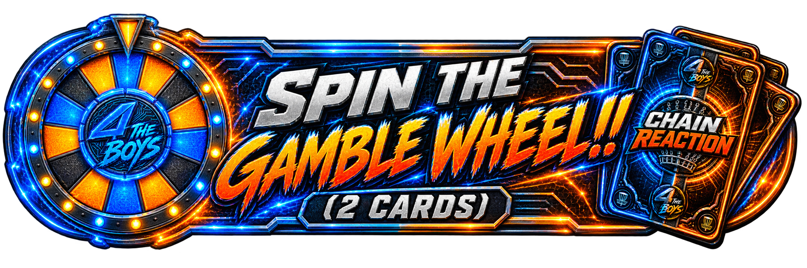

<!doctype html>
<html lang="en">
<head>
<meta charset="utf-8">
<meta name="viewport" content="width=device-width, initial-scale=1, viewport-fit=cover">
<meta name="apple-mobile-web-app-capable" content="yes">
<meta name="apple-mobile-web-app-status-bar-style" content="black-translucent">
<meta name="apple-mobile-web-app-title" content="Chain Reaction">
<meta name="theme-color" content="#05070C">
<link rel="manifest" href="manifest.webmanifest">
<link rel="apple-touch-icon" href="assets/icon.png">
<title>Chain Reaction</title>
<style>
  /* The neon palette everywhere: black ground, blue structure, orange action.
     Variable names kept from the pine era so every rule below stays wired up. */
  :root {
    --pine: #05070C;
    --panel: #070B14;
    --raised: #111E33;
    --sage: #A9B8D4;
    --off: #F4F8FF;
    --attack: #FF5A4D;
    --self: #FF8A1E;
    --react: #4DC3FF;
    --group: #3FA9FF;
    --edge: #22304A;
    --tap: 56px;
  }
  * { box-sizing: border-box; -webkit-tap-highlight-color: transparent; }
  html, body {
    margin: 0;
    background: var(--pine);
    color: var(--off);
    font-family: -apple-system, BlinkMacSystemFont, "Segoe UI", Roboto, sans-serif;
    font-size: 17px;
    line-height: 1.45;
    overscroll-behavior-y: none;
    /* A game UI, not a document: long-pressing a card must never turn into
       Android text selection and a search bubble instead of a tap. */
    -webkit-user-select: none;
    user-select: none;
  }
  input, textarea { -webkit-user-select: text; user-select: text; }
  body {
    padding: env(safe-area-inset-top) env(safe-area-inset-right) 0 env(safe-area-inset-left);
  }
  #app { padding: 16px 16px 96px; max-width: 640px; margin: 0 auto; }
  h1 {
    font-size: 34px; line-height: 1.05; font-weight: 900; font-style: italic;
    letter-spacing: -0.5px; margin: 0 0 4px;
  }
  .sub { color: var(--sage); margin: 0 0 28px; }
  .label {
    display: flex; align-items: center; text-transform: uppercase; color: #4DC3FF;
    font-size: 13px; font-weight: 900; letter-spacing: 3px; margin: 20px 0 12px;
  }
  .label::before { content: ""; flex: 1; height: 2px; margin-right: 12px;
                   background: linear-gradient(90deg, transparent, #1E6FFF); }
  .label::after { content: ""; flex: 1; height: 2px; margin-left: 12px;
                  background: linear-gradient(90deg, #FF8A1E, transparent); }
  .label:first-child { margin-top: 0; }

  .panel { border: 2px solid transparent; border-radius: 14px; padding: 14px; margin-bottom: 10px;
           background: linear-gradient(var(--panel), var(--panel)) padding-box,
                       linear-gradient(100deg, #1E6FFF, #3FA9FF 45%, #FF8A1E) border-box;
           box-shadow: 0 0 14px rgba(30, 111, 255, 0.25); }
  /* Orange variant for the picked thing — same frame, hot instead of cool. */
  .panel.sel { background: linear-gradient(#130C05, #130C05) padding-box,
                           linear-gradient(100deg, #FF8A1E, #F7791E) border-box;
               box-shadow: 0 0 14px rgba(247, 148, 30, 0.35); }

  button {
    font-family: inherit; border: 0; cursor: pointer; color: var(--off);
    background: var(--raised); border-radius: 14px; min-height: var(--tap);
    font-size: 17px;
  }
  button:disabled { opacity: .45; cursor: default; }
  .big {
    display: block; width: 100%; min-height: var(--tap); border-radius: 14px;
    font-weight: 700; font-size: 15px; letter-spacing: .8px; text-transform: uppercase;
    margin-bottom: 10px;
  }
  .big.primary { background: linear-gradient(180deg, #FF9A2E, #F7791E); color: #fff;
                 box-shadow: 0 0 16px rgba(247, 148, 30, 0.35); }
  /* Mirrors the armed/dark states of the Android NeonBigButton. */
  .big.primary:disabled { background: var(--panel); color: #5E6C88;
                          border: 2px solid var(--edge); box-shadow: none; opacity: 1; }
  .big.wheel { background: linear-gradient(180deg, #3FA9FF, #1E6FFF); color: #fff;
               box-shadow: 0 0 16px rgba(30, 111, 255, 0.35); }
  .big.quiet { background: var(--panel); color: var(--sage); border: 2px solid var(--edge); }
  /* The painted banner IS the button — it already carries its own name and
     price, so nothing is drawn over it. Dimmed the way an inactive tab plate
     is, when the hand can't cover the spin. */
  .wheelplate { display: block; width: 100%; padding: 0; border: 0; background: none;
                margin-bottom: 10px; cursor: pointer; }
  .wheelplate img { display: block; width: 100%; height: auto; }
  .wheelplate[disabled] { cursor: default; }
  .wheelplate[disabled] img { filter: brightness(0.45) saturate(0.6); }
  /* For use *on* a panel, where .quiet would vanish into the background. */
  .big.raised { background: #0B1526; color: var(--sage); border: 2px solid var(--edge); }
  .big.danger { background: var(--panel); color: var(--attack); border: 2px solid var(--edge); }

  .step {
    width: var(--tap); height: var(--tap); min-height: var(--tap); flex: 0 0 var(--tap);
    font-size: 30px; font-weight: 900; line-height: 1; border-radius: 14px;
    background: #061022; border: 2px solid var(--edge);
    display: flex; align-items: center; justify-content: center;
  }
  .row { display: flex; align-items: center; gap: 10px; }
  /* Two choices belong on one line. Stacked full-width they read as a list of
     things to do rather than a pick between two, and cost a screen of height. */
  .pair { display: flex; gap: 10px; }
  .pair .big { flex: 1; margin: 0; min-width: 0; }
  .grow { flex: 1 1 auto; min-width: 0; }
  /* 44, not 56: wide enough for a two-digit blow-up hole, and every pixel saved
     here is a pixel the name beside it gets to keep. */
  .num { width: 44px; text-align: center; font-size: 32px; font-weight: 900; }
  /* − score + as one tight cluster: the row's 10px gap holds it off the name,
     but inside it the three pieces sit nearly flush. */
  .steps { display: flex; align-items: center; gap: 3px; }

  input[type=text] {
    width: 100%; min-height: var(--tap); background: var(--panel); color: var(--off);
    border: 2px solid var(--edge); border-radius: 14px; padding: 0 14px;
    font-family: inherit; font-size: 17px;
  }
  input[type=text]:focus { outline: none; border-color: var(--self); }
  input::placeholder { color: #5E6C88; }

  .hole-title { text-align: center; flex: 1 1 auto; }
  .hole-title strong { display: block; font-size: 26px; font-weight: 900; }
  .hole-title span { font-size: 14px; font-weight: 700; letter-spacing: 1px; color: var(--sage); }
  .hole-title span.locked { color: var(--self); }
  /* The skins line sits under par, in ice, so it never reads as part of the par. */
  .hole-title span.stake { display: block; color: #4DC3FF; font-weight: 900; }
  /* Its own line under the label, and ice rather than sage: this is the tap target. */
  /* margin 0 kills the page-subtitle .sub rule's 28px, which was shoving the
     Discard tile's three lines off-centre. */
  .counter .sub { display: block; color: #4DC3FF; font-weight: 900; margin: 0; }
  /* line-height after the font shorthand, or the shorthand resets it and the
     three-line Discard tile overflows its pinned height. */
  button.counter { cursor: pointer; font: inherit; line-height: 1.15; text-align: center; }
  .pilerow { font-size: 12px; font-weight: 900; letter-spacing: 1px; color: #5E6C88;
             margin: 12px 0 4px; }
  .pilerow.played { color: #4DC3FF; }

  .holehead { margin-bottom: 16px; }
  .stripgap { height: 66px; }
  /* Four or fewer on the card: everything shaves a few pixels so the whole
     screen sits still — no just-barely scroll. Five players scroll instead. */
  .scorepage.tight .holehead { margin-bottom: 8px; }
  .scorepage.tight .player { padding: 8px 12px; margin-bottom: 8px; }
  .scorepage.tight .player .name { font-size: 20px; }
  .scorepage.tight .hint { margin: 0 0 6px; }
  .scorepage.tight .big { margin-bottom: 6px; }
  .scorepage.tight .stripgap { height: 48px; }
  .player { border: 2px solid transparent; border-radius: 14px; padding: 12px; margin-bottom: 10px;
            background: linear-gradient(var(--panel), var(--panel)) padding-box,
                        linear-gradient(100deg, #1E6FFF, #3FA9FF 45%, #FF8A1E) border-box;
            box-shadow: 0 0 14px rgba(30, 111, 255, 0.25); }
  .player.me { background: linear-gradient(#130C05, #130C05) padding-box,
                           linear-gradient(100deg, #FF8A1E, #F7791E) border-box;
               box-shadow: 0 0 14px rgba(247, 148, 30, 0.35); }
  .player .name { font-size: 22px; font-weight: 700; overflow: hidden; text-overflow: ellipsis; white-space: nowrap; }
  .player.me .name { color: var(--self); }
  /* Name and figure share a line: the name gives way first, so a long one
     ellipsizes rather than pushing the score out of the row. */
  .nameline { display: flex; align-items: baseline; gap: 8px; min-width: 0; }
  .nameline .name { min-width: 0; flex: 0 1 auto; }
  .nameline .rel { flex: 0 0 auto; }
  .rel { font-size: 15px; font-weight: 900; }
  /* A size down from the score above it: it is the quieter half of the row,
     and at 15px the lead flag and the skins together outgrew the column and
     wrapped onto a third line. */
  .subline { font-size: 13px; font-weight: 900; color: var(--sage); margin-top: 2px; }
  /* Live rounds only: what each player is holding, self-reported by their phone. */
  .handct { font-size: 13px; font-weight: 900; color: #4DC3FF; background: #061022;
            border: 1px solid var(--edge); border-radius: 6px; padding: 2px 7px;
            margin-left: 6px; vertical-align: 2px; white-space: nowrap; }
  /* The face sits on the floor of its row rather than in the middle of it, and
     the count takes the space that opens above — off the face entirely, and
     costing the name no width. Off a badge it stays inline under the name. */
  .pbadge { position: relative; flex: 0 0 auto; line-height: 0;
            align-self: flex-end; }
  .pbadge .handct { position: absolute; bottom: 100%; left: 50%;
                    transform: translateX(-50%); z-index: 1;
                    margin: 0 0 3px; padding: 1px 5px; font-size: 11px;
                    vertical-align: baseline; line-height: 1.3; }
  /* Under par cool blue, even quiet, over par hot orange — the palette does the talking. */
  .rel.under { color: var(--react); }
  .rel.even { color: var(--sage); }
  .rel.over { color: var(--self); }

  .total { display: flex; align-items: center; gap: 10px; border: 2px solid transparent;
           border-radius: 14px; padding: 12px 14px; margin-bottom: 10px;
           background: linear-gradient(var(--panel), var(--panel)) padding-box,
                       linear-gradient(100deg, #1E6FFF, #3FA9FF 45%, #FF8A1E) border-box;
           box-shadow: 0 0 10px rgba(30, 111, 255, 0.2); }
  .total .name { flex: 1 1 auto; font-size: 22px; font-weight: 700; overflow: hidden;
                 text-overflow: ellipsis; white-space: nowrap; }
  .total .v { font-size: 22px; font-weight: 700; text-align: right; width: 52px; }
  .lead { background: var(--group); color: var(--pine); font-size: 11px; font-weight: 900;
          border-radius: 4px; padding: 2px 6px; }
  .rel .lead, .subline .lead { margin-right: 7px; }

  .counters { display: flex; gap: 8px; margin-bottom: 12px; }
  /* A pinned height, not padding: inherited line boxes were quietly inflating
     the tiles to nearly double what the glance they serve needs. */
  .counter { flex: 1; height: 68px; box-sizing: border-box;
             border: 2px solid transparent; border-radius: 12px; padding: 4px;
             text-align: center; line-height: 1.15;
             background: linear-gradient(var(--panel), var(--panel)) padding-box,
                         linear-gradient(100deg, #1E6FFF, #3FA9FF 45%, #FF8A1E) border-box;
             box-shadow: 0 0 10px rgba(30, 111, 255, 0.2); }
  .cwrap { display: flex; flex-direction: column; justify-content: center; height: 100%; }
  .counter b { display: block; font-size: 20px; font-weight: 900; line-height: 1.1; }
  .counter span { font-size: 11px; font-weight: 900; letter-spacing: 1px; color: var(--sage);
                  text-transform: uppercase; line-height: 1.15; }

  .card { display: flex; border: 2px solid transparent; border-radius: 18px; overflow: hidden;
          margin-bottom: 12px;
          background: linear-gradient(var(--panel), var(--panel)) padding-box,
                      linear-gradient(100deg, #1E6FFF, #3FA9FF 45%, #FF8A1E) border-box;
          box-shadow: 0 0 14px rgba(30, 111, 255, 0.25); }
  .card .body { padding: 16px; flex: 1 1 auto; min-width: 0; }
  .tags { display: flex; gap: 8px; flex-wrap: wrap; margin-bottom: 10px; }
  .tag { font-size: 13px; font-weight: 900; letter-spacing: 1px; border-radius: 6px;
         padding: 4px 8px; text-transform: uppercase; }
  .tag.timing { background: #061022; color: #4DC3FF; }
  .card h3 { margin: 0 0 6px; font-size: 26px; font-weight: 900; letter-spacing: -.3px; }
  .card p { margin: 0; color: var(--sage); }
  .card .acts { display: flex; gap: 10px; margin-top: 14px; }
  .card.artcard { display: block; }
  .cardart { width: 100%; display: block; }
  .artacts { padding: 12px; }
  .artacts .acts { margin-top: 0; }
  .confirmq { margin: 14px 0 0; font-weight: 700; }
  /* The running order, read left to right. Whoever is up is loud; you are
     underlined wherever you happen to sit in it. */
  .turnrow { display: flex; flex-wrap: wrap; align-items: center; gap: 6px;
             margin-bottom: 12px; }
  .turn { font-size: 15px; font-weight: 900; color: var(--sage); }
  .turn.first { color: var(--self); }
  .turn.final { color: #4DC3FF; }
  .turntag { font-size: 10px; font-weight: 900; letter-spacing: 1px;
             text-transform: uppercase; color: #4DC3FF; opacity: .7;
             margin-left: 5px; }
  .turn.me { text-decoration: underline; text-underline-offset: 3px; }
  .turnsep { color: #3A4A66; }
  .handgrid { display: grid; grid-template-columns: 1fr 1fr; gap: 10px; }
  .minicard { border: 2px solid transparent; border-radius: 14px; padding: 12px;
              cursor: pointer;
              background: linear-gradient(#070B14, #070B14) padding-box,
                          linear-gradient(100deg, #1E6FFF, #3FA9FF 45%, #FF8A1E) border-box;
              box-shadow: 0 0 14px rgba(30, 111, 255, 0.25); }
  .minicard img { width: 100%; display: block; border-radius: 8px; }
  /* Sits in the gap directly above the button stack — next to the Settings button it
     points at, and clear of the logo. Solid, because the grass behind it is bright. */
  .charhint { position: absolute; z-index: 3; left: 16px; right: 16px;
              bottom: calc(40% + 6px); width: auto;
              padding: 10px 14px; border-radius: 12px; cursor: pointer;
              background: rgba(5, 7, 12, .88); border: 2px solid #FF8A1E;
              color: #FF8A1E; font: inherit; font-size: 15px; font-weight: 900;
              text-align: center; }
  /* Chosen to pay for a spin — the same orange the scorecard uses for "you". */
  .minicard.picked { background: linear-gradient(#130C05, #130C05) padding-box,
                                 linear-gradient(100deg, #FF8A1E, #FF9A2E) border-box;
                     box-shadow: 0 0 14px rgba(255, 138, 30, 0.3); }
  /* Kind and timing on one line, always. As a pair of chips the longer timings wrapped
     to a second row and pushed the card's own words out of sight — and the point of the
     tile is starting to read without opening it. Plain text buys back the room. */
  /* font-size is the starting point only — fitMetaLines() shrinks it per tile until
     the line fits, because the longest ("GROUP · AFTER ALL PLAY A CARD") overflows a
     half-width tile at any size a phone could still read. Same as Android. */
  .minimeta { color: #4DC3FF; font-size: 10px; font-weight: 900; letter-spacing: .5px;
              text-transform: uppercase; margin-bottom: 8px;
              white-space: nowrap; overflow: hidden; text-overflow: clip; }
  .mininame { color: #F4F8FF; font-size: 17px; font-weight: 700; line-height: 1.2;
              margin-bottom: 4px; }
  .minitext { color: #A9B8D4; font-size: 13px; line-height: 1.35; display: -webkit-box;
              -webkit-line-clamp: 3; -webkit-box-orient: vertical; overflow: hidden; }
  .facemodal { display: flex; }
  /* margin:auto centres the card cluster when it fits and stays scrollable when not */
  .faceinner { width: 100%; max-width: 420px; margin: auto; }
  .cardface { width: 100%; display: block; border-radius: 18px;
              box-shadow: 0 0 22px rgba(30, 111, 255, 0.3); }
  /* The enlarged card rides the thumb: dragged live, then either thrown off the
     edge or sprung back. pan-y hands horizontal drags to us and leaves vertical
     ones as scrolling. The chevrons deliberately skip all of it and cut. */
  .faceslide { touch-action: pan-y; }
  .faceslide.settling { transition: transform 180ms ease-out; }
  .faceslide.leaving { transition: transform 200ms ease-in, opacity 200ms ease-in;
                       opacity: 0; }
  .faceslide.fromright { animation: facein-right 200ms ease-out; }
  .faceslide.fromleft { animation: facein-left 200ms ease-out; }
  @keyframes facein-right { from { transform: translateX(60%) rotate(6deg); opacity: 0; } }
  @keyframes facein-left { from { transform: translateX(-60%) rotate(-6deg); opacity: 0; } }
  /* Discard and Close share a line: two ways out of the card, neither of them
     the thing you came to do, so they split the width Play does not need. */
  .facepair { display: flex; gap: 10px; margin-top: 12px; }
  .facepair button { flex: 1; margin: 0; }
  .facenav { display: flex; align-items: center; justify-content: center; gap: 26px;
             margin-top: 10px; color: #5E6C88; font-weight: 700; font-size: 18px; }
  .facenav span[data-act] { font-size: 38px; line-height: 1; padding: 0 14px;
                            color: #4DC3FF; cursor: pointer; }
  .artacts .confirmq { margin-top: 0; }
  .card .acts button { flex: 1; margin: 0; }

  .hint { color: var(--sage); margin: 0 0 12px; }

  /* A fresh card the table hasn't locked yet: in hand, visible, not yet playable. */
  .heldtag { font-size: 10px; font-weight: 900; letter-spacing: 2px; color: #FF8A1E;
             margin-bottom: 6px; }

  /* A locked hole two phones disagree on. Flags, never fixes: no phone referees. */
  .dispute { border: 2px solid var(--attack); border-radius: 14px; padding: 12px 14px;
             margin-bottom: 10px; background: #130507; }
  .dispute .dtitle { font-size: 12px; font-weight: 900; letter-spacing: 2px;
                     color: var(--attack); text-transform: uppercase; margin-bottom: 6px; }
  .dispute .dline { color: var(--off); font-weight: 700; }
  .dispute .dhint { color: var(--sage); font-size: 14px; margin-top: 6px; }

  /* ---- live alerts: somebody played a card ---- */
  /* z 30: alerts outrank every modal — the wheel can wait, an attack can't. */
  .alerts { position: fixed; top: calc(10px + env(safe-area-inset-top)); left: 12px;
            right: 12px; z-index: 30; display: flex; flex-direction: column; gap: 8px;
            pointer-events: none; }
  .alert { pointer-events: auto; cursor: pointer; border: 2px solid transparent;
           border-radius: 14px; padding: 10px 14px;
           background: linear-gradient(#070B14, #070B14) padding-box,
                       linear-gradient(100deg, #1E6FFF, #3FA9FF 45%, #FF8A1E) border-box;
           box-shadow: 0 6px 24px rgba(0, 0, 0, .55), 0 0 14px rgba(30, 111, 255, .3); }
  .alert .who { font-size: 12px; font-weight: 900; letter-spacing: 2px; color: #4DC3FF;
                text-transform: uppercase; }
  .alert .what { font-size: 20px; font-weight: 900; color: #F4F8FF; }
  .alert .onwho { font-size: 14px; font-weight: 900; color: #A9B8D4; }
  .alert { position: relative; }
  /* The ✕ owns a column down the right-hand edge of every banner, big enough to
     hit without aiming and ruled off so it reads as the way out rather than part
     of the message. Everything left of that rule opens the card. */
  .alert { padding-right: 60px; }
  .alertx {
    position: absolute; top: 0; right: 0; bottom: 0; width: 52px;
    display: flex; align-items: center; justify-content: center;
    background: none; border: 0; border-left: 1px solid rgba(169, 184, 212, 0.22);
    border-radius: 0 12px 12px 0; padding: 0; line-height: 1;
    color: #A9B8D4; font-size: 30px; font-weight: 900; cursor: pointer;
  }
  .alert.you .alertx { color: #FFC9A3; border-left-color: rgba(255, 138, 30, 0.35); }
  /* A whole sentence of trash talk, not a label — set like one. */
  .alert .taunt { font-weight: 600; line-height: 1.35; margin-top: 2px; }
  /* Aimed at you: the panel goes hot and breathes until you deal with it. */
  .alert.you { background: linear-gradient(#130C05, #130C05) padding-box,
                           linear-gradient(100deg, #FF8A1E, #F7791E) border-box;
               animation: alertpulse 1.1s ease-in-out infinite alternate; }
  .alert.you .who, .alert.you .onwho { color: #FF8A1E; }
  /* An invitation, not an attack: ice, steady, stays until tapped. */
  .alert.join { background: linear-gradient(#050F1C, #050F1C) padding-box,
                            linear-gradient(100deg, #4DC3FF, #1E6FFF) border-box;
                box-shadow: 0 6px 24px rgba(0, 0, 0, .55), 0 0 18px rgba(77, 195, 255, .45); }
  .alert.join .onwho { color: #4DC3FF; }
  @keyframes alertpulse {
    from { box-shadow: 0 6px 24px rgba(0, 0, 0, .55), 0 0 10px rgba(247, 148, 30, .35); }
    to   { box-shadow: 0 6px 24px rgba(0, 0, 0, .55), 0 0 26px rgba(247, 148, 30, .7); }
  }

  .course { cursor: pointer; }
  .cname { font-size: 22px; font-weight: 700; }
  .cname.picked { color: var(--self); }
  .courserow { display: flex; align-items: center; background: var(--panel);
               border-radius: 14px; margin-bottom: 8px; overflow: hidden; }
  .courserow .pick { flex: 1 1 auto; min-width: 0; padding: 14px; cursor: pointer; }
  .courserow .del { flex: 0 0 var(--tap); width: var(--tap); background: none;
                    color: var(--attack); font-size: 28px; font-weight: 900; border-radius: 0; }
  .courserow.sel { background: var(--raised); box-shadow: inset 0 0 0 2px var(--self); }
  .courserow.sel .cname { color: var(--self); }
  /* Tucked under its highlighted row rather than floating between neighbours. */
  .courseplay { margin: -2px 0 12px; }
  .pargrid { display: grid; grid-template-columns: repeat(6, 1fr); gap: 8px; margin-bottom: 12px; }
  .parcell { height: 64px; min-height: 64px; border-radius: 12px; background: var(--panel);
             display: flex; flex-direction: column; align-items: center; justify-content: center; }
  .parcell.off { background: var(--raised); }
  .parcell b { font-size: 24px; font-weight: 900; }
  .parcell.off b { color: var(--self); }
  .parcell span { font-size: 12px; font-weight: 900; color: var(--sage); }
  /* Lives inside the flex .label now, so it rides along instead of floating. */
  .total-par { margin-left: 8px; color: var(--react); }
  .place { flex: 0 0 32px; width: 32px; text-align: center; font-size: 20px;
           font-weight: 900; color: var(--sage); }
  .place.won { color: var(--self); }

  /* ---- main menu ---- */
  body.menu-screen #app { padding: 0; max-width: none; }
  /* The measured height last, so it beats dvh where the two disagree —
     script-set at load and on every resize (see fitViewport). */
  .menu { position: relative; min-height: 100vh; min-height: 100dvh;
          min-height: var(--vvh, 100dvh); max-height: var(--vvh, none);
          background: var(--pine); overflow: hidden;
          display: flex; flex-direction: column; }
  /* Full width, anchored top: cropping to fill a tall screen would trim the sides and
     cut the ends off the logo. Grass carries on below it. */
  .menu-art { flex: 0 0 auto; }
  .menu-art img { width: 100%; display: block; }
  /* Grass fills the rest of the frame. The negative margin pulls it up over the photo's
     bottom edge and the mask fades its own top out, cross-fading the join rather than
     butting the two images together. */
  .menu-grass {
    flex: 1 1 auto; margin-top: -7vh; min-height: 0;
    background: center / cover no-repeat;
    -webkit-mask-image: linear-gradient(to bottom, transparent 0, #000 7vh);
    mask-image: linear-gradient(to bottom, transparent 0, #000 7vh);
  }
  /* Gentle darkening so the buttons hold up against bright grass. */
  .menu::after {
    content: ""; position: absolute; inset: 0; pointer-events: none;
    background: linear-gradient(to bottom, transparent 55%, rgba(0, 0, 0, 0.28) 100%);
  }
  /* FOR THE BOYS, tucked under the title art. Sized to the screen, above the
     crew photo. It takes touches now — five rapid taps is the secret way into
     the side games — so the browser must not claim the taps for itself. */
  .menu-ftb { position: absolute; top: 29.5%; left: 50%; transform: translateX(-50%);
              width: 50%; max-width: 280px; z-index: 1;
              touch-action: none; -webkit-user-drag: none; -webkit-touch-callout: none;
              filter: drop-shadow(0 3px 10px rgba(0, 0, 0, 0.65)); }
  /* The button sheet is transparent, so it just sits on the photo. */
  .menu-buttons {
    position: absolute; left: 0; right: 0; z-index: 1;
    /* Lifted off the floor, but only just: the version line sits off to the
       right of the stack rather than under it, so it needs no clearance.
       The art carries empty floor below SETTINGS — BUTTON_BANDS has the last
       band ending at 90.8%, so 9.2% of the sheet is padding. That is 4.2% of
       the screen at this height, subtracted here so the number left over is
       the gap you actually see under the bottom button. */
    /* One number sizes the whole stack: the sheet keeps its aspect ratio and
       every hit box is placed in percentages of it, so they scale together. */
    bottom: calc(env(safe-area-inset-bottom) + 24px - 4.2%); height: 46%;
    display: flex; justify-content: center;
  }
  .menu-buttons .sheet { position: relative; height: 100%; aspect-ratio: 941 / 1672; }
  .menu-buttons img { height: 100%; width: 100%; display: block; }
  /* Each hit box is measured off the artwork's pixels — see BUTTON_BANDS.
     touch-action none: the browser never claims a long hold as a scroll, so
     the 5-second secret-wheel press on SETTINGS survives to its timer. */
  .hit { position: absolute; cursor: pointer; touch-action: none; }
  /* The secret wheel's list — one name per line, kept between visits. */
  .secretbox {
    width: 100%; min-height: 130px; box-sizing: border-box; resize: none;
    background: var(--panel); color: var(--off);
    border: 2px solid var(--edge); border-radius: 14px; padding: 10px 14px;
    font-family: inherit; font-size: 17px; margin-bottom: 10px;
  }
  .secretbox:focus { outline: none; border-color: var(--self); }
  /* The dice tray: white dice, pips laid on a 3x3 grid. */
  /* The felt: the dice lie wherever they were thrown or put, placed in percentages
     of it so a spot means the same thing on any phone. */
  /* Perspective, so a die turning over is seen from the side rather than merely
     squashing: without it rotateX is a flat scale and the die reads as a picture
     being pinched, not a cube going over. */
  .dicefield { position: relative; flex: 1 1 auto; min-height: 300px;
               touch-action: none; perspective: 900px; }
  .dicefield .die { position: absolute; transform: translate(-50%, -50%); }
  /* The throwing area's near edge. Quiet enough to ignore, there enough to find. */
  .throwline {
    position: absolute; left: 7%; right: 7%; bottom: 50%; height: 0; z-index: 1;
    border-top: 2px dashed rgba(77, 195, 255, 0.3); pointer-events: none;
  }
  .throwline span {
    position: absolute; left: 50%; top: 8px; transform: translateX(-50%);
    white-space: nowrap; font-size: 11px; font-weight: 900; letter-spacing: 2px;
    text-transform: uppercase; color: rgba(77, 195, 255, 0.45);
  }
  /* Thrown, they cross the felt in the time between two tumbles. */
  /* Mid-throw the simulation writes each die's transform every frame, so nothing
     eases: an easing would be the browser arguing with the physics about where
     the die is. Its corner is pinned to the felt in the markup, not here — an
     inline left/top cannot be overridden from a stylesheet. */
  .dicefield.rolling .die { transition: none; }
  /* Picked up: brighter and out from under the others. The lift and the carrying
     are done on the element's transform by the drag itself, so this rule stays
     off transform entirely — it would fight the finger for it. */
  .dicefield .die.held { z-index: 2; will-change: transform;
                         box-shadow: 0 8px 20px rgba(0, 0, 0, 0.6),
                                     0 0 18px rgba(77, 195, 255, 0.5); }
  /* A carried die answers the finger directly; only a thrown one is eased. */
  .dicefield .die.held, .dicefield.rolling .die.held { transition: none; }
  /* The coin is the artwork — struck edge and all — so nothing is drawn under
     it. A window its own shape, with the sheet slid to the landed face. */
  /* The coin lives at the foot of the screen, under the thumb that throws it.
     touch-action none so the browser never reads the toss as a scroll. */
  .modal.sgcoin, .modal.sgdice {
    display: flex; flex-direction: column;
    padding-bottom: calc(30px + env(safe-area-inset-bottom));
  }
  /* The coin hangs off the bottom; the dice field takes everything under the
     count, because the dice have to be able to land anywhere in it. */
  .modal.sgcoin { justify-content: flex-end; }
  .sgcoin .label { margin: 44px 0 auto; }
  .sgdice .label { margin: 44px 0 12px; }
  .coinbox { display: flex; justify-content: center; margin: 0; }
  .tossable { touch-action: none; cursor: grab; }
  /* A mouse drags these too, so nothing under it should turn into selected text. */
  .dicefield, .coinbox { user-select: none; -webkit-user-select: none; }
  .dicefield .die { cursor: grab; }
  .dicefield .die.held { cursor: grabbing; }
  /* Thrown, it arcs up and comes back down while the faces tumble. Ease-out on
     the way up and ease-in on the way down: one easing across the whole arc
     floats at the bottom and snaps through the top, which is backwards. */
  /* Height and duration are both set on the element at the moment of the throw. */
  .tossable.tossing { animation: cointoss 1200ms; }
  @keyframes cointoss {
    0% { transform: translateY(0); animation-timing-function: ease-out; }
    50% { transform: translateY(var(--toss, -34vh)); animation-timing-function: ease-in; }
    100% { transform: translateY(0); }
  }
  .coin {
    position: relative; overflow: hidden;
    width: min(56%, 200px); aspect-ratio: 869 / 859;
    filter: drop-shadow(0 6px 16px rgba(0, 0, 0, 0.55));
  }
  .coin img { position: absolute; display: block; }
  /* Edge-on and back, as fast as the faces are being redrawn. Squashed top to
     bottom, not side to side: a tossed coin turns end over end, and scaleX had
     it spinning like a wheel on a vertical axis. */
  .coin.spinning { animation: coinspin 180ms linear infinite; }
  @keyframes coinspin { 50% { transform: scaleY(0.06); } }
  /* A die is a cube: six faces, each carrying its own number, turned so that the
     one you are meant to read is toward you. Nothing rewrites its dots. */
  .die { width: 74px; height: 74px; perspective: 700px; }
  .cube { position: absolute; inset: 0; transform-style: preserve-3d;
          transition: transform 260ms ease-out; }
  .dicefield.rolling .cube { transition: none; }
  .face {
    position: absolute; inset: 0; background: #F4F6FA; border-radius: 12px;
    display: grid; grid-template-columns: repeat(3, 1fr); grid-template-rows: repeat(3, 1fr);
    padding: 11px; box-sizing: border-box; gap: 3px;
  }
  /* One shadow for the die, cast from its rendered shape, rather than six faces
     each casting their own — those crossed at the corners and read as points. */
  .dicefield .die { filter: drop-shadow(0 5px 9px rgba(0, 0, 0, 0.45)); }
  /* At rest the cube is square to the screen, so its outline is exactly one
     face: rounding the die itself takes off the corners of the side faces that
     otherwise poke past the rounded front. Mid-throw it is turned, and its
     outline is not a rectangle any more, so nothing is clipped then. */
  .dicefield:not(.rolling) .die { border-radius: 13px; overflow: hidden; }
  /* Half of 74px out along each axis, which is what makes it a cube and not six
     sheets of paper in the same place. */
  .face.f1 { transform: translateZ(37px); }
  .face.f6 { transform: rotateY(180deg) translateZ(37px); }
  .face.f3 { transform: rotateY(90deg) translateZ(37px); }
  .face.f4 { transform: rotateY(-90deg) translateZ(37px); }
  .face.f5 { transform: rotateX(90deg) translateZ(37px); }
  .face.f2 { transform: rotateX(-90deg) translateZ(37px); }
  .pip { border-radius: 50%; }
  .pip.on { background: #10182A; }
  .dicecount { flex: 0 0 auto; min-width: 84px; text-align: center;
               font-size: 18px; font-weight: 900; color: var(--sage); }
  /* The count sits opposite the Back button, on the same line, sized down to
     clear the total between them. Its own row would have cost the dice a band
     of felt they can land in. */
  .dicesteps {
    position: absolute; right: 6px; top: calc(env(safe-area-inset-top) + 10px);
    z-index: 2; height: var(--tap);
    display: flex; align-items: center; gap: 5px;
  }
  .dicesteps .step {
    width: 36px; height: 36px; min-height: 36px; flex: 0 0 36px;
    font-size: 20px; border-radius: 10px;
  }
  .dicesteps .dicecount { min-width: 44px; font-size: 13px; }
  /* Every secret screen wears the 4 THE BOYS splash, dimmed so the buttons,
     wheel, dice and cards stay the loudest thing on it. */
  .modal.sgscreen {
    --sgbg: url("assets/sgbg.png");
    background: linear-gradient(rgba(3, 6, 12, 0.55), rgba(3, 6, 12, 0.55)),
                var(--sgbg) center / cover no-repeat #05070C;
  }
  /* The card table dims its splash deeper, so the cards own the felt. */
  .modal.cardtable.sgscreen {
    background: linear-gradient(rgba(3, 6, 12, 0.7), rgba(3, 6, 12, 0.7)),
                var(--sgbg) center / cover no-repeat #05070C;
  }
  /* The coin is dimmed deeper than anything else: struck metal against a lit
     splash was two bright things competing for the same screen. */
  .modal.sgcoin.sgscreen {
    background: linear-gradient(rgba(3, 6, 12, 0.8), rgba(3, 6, 12, 0.8)),
                var(--sgbg) center / cover no-repeat #05070C;
  }
  /* On the menu the splash rides the empty space above the buttons — sized to
     it, centred in it — and the button zone below stays plain black. */
  .modal.sgmenu.sgscreen {
    background: linear-gradient(rgba(3, 6, 12, 0.4), rgba(3, 6, 12, 0.4)),
                linear-gradient(180deg, transparent 48%, #05070C 72%),
                var(--sgbg) center -120px / cover no-repeat #05070C;
  }
  /* The games sink to the bottom, in reach of the thumb; the title stays up
     top, and Close keeps a little distance from the three games. */
  .modal.sgmenu {
    display: flex; flex-direction: column; justify-content: flex-end;
    padding-bottom: calc(14px + env(safe-area-inset-bottom));
  }
  /* Down out of the Back button's lane, then everything else sinks. */
  .sgmenu .label { margin: 44px 0 auto; }
  /* The door out lives quietly in the top-left corner. */
  .sgback {
    position: absolute; left: 8px; top: calc(env(safe-area-inset-top) + 10px);
    z-index: 2; background: none; border: none; cursor: pointer;
    color: #A9B8D4; font-family: inherit; font-size: 17px; font-weight: 700;
    padding: 10px 14px;
  }
  /* Any title that follows the corner Back drops out of its lane. */
  .sgback + .label { margin-top: 44px; }
  /* The whole dice tray floats at the middle of the screen. */
  /* The call the coin landed on, riding the Back button's line and centred
     between the corners. Out of flow, so the coin below stays centred on the
     screen rather than on what is left under a header. Its box is var(--tap) —
     the height that makes the Back button the size it is, so the two sit on one
     line without a number guessed to match. */
  .sgtop {
    position: absolute; left: 0; right: 0;
    top: calc(env(safe-area-inset-top) + 10px); height: var(--tap);
    display: flex; align-items: center; justify-content: center;
    color: var(--self); font-size: 24px; font-weight: 900;
    pointer-events: none;
  }
  /* The painted plates, restacked with tight gaps so the splash stays seen. */
  .sgstack { width: min(80%, 310px); margin: 0 auto; display: flex;
             flex-direction: column; gap: 7px; }
  .sgplate { position: relative; overflow: hidden; cursor: pointer; }
  .sgplate img { position: absolute; left: 0; width: 100%; }
  /* The card table: two buttons up top, felt everywhere else. */
  .modal.cardtable {
    overflow: hidden; touch-action: none;
    padding: calc(10px + env(safe-area-inset-top)) 12px 0;
  }
  /* Back rides the top-left corner; the deck sits bottom-left and Shuffle
     holds the bottom-right, leaving the whole middle as open felt. */
  .cardtable .tbar {
    position: absolute; right: 12px;
    bottom: calc(env(safe-area-inset-bottom) + 14px);
  }
  .cardtable .tbar .big { margin-bottom: 0; min-width: 130px; }
  /* The deck, sitting there with a stacked-paper shadow and its count. */
  .tdeck {
    position: absolute; left: 16px;
    bottom: calc(env(safe-area-inset-bottom) + 14px);
    width: 84px; height: 118px;
  }
  .tdeck img, .tdeck .tface { width: 100%; height: 100%; display: block; border-radius: 8px;
    box-shadow: 2px 2px 0 #0A1322, 4px 4px 0 #0A1322, 0 10px 16px rgba(0, 0, 0, 0.5); }
  .tdeck.empty img, .tdeck.empty .tface { opacity: 0.25; }
  .tcount {
    position: absolute; right: -10px; top: -10px; z-index: 1;
    background: #F7941E; color: #10182A;
    font-weight: 900; font-size: 13px; border-radius: 999px; padding: 3px 8px;
  }
  /* Cards on the felt — face down until tapped over. */
  .tcard { position: absolute; width: 78px; height: 109px; border-radius: 8px; }
  .tcard img { width: 100%; height: 100%; display: block; border-radius: 8px;
    box-shadow: 0 6px 12px rgba(0, 0, 0, 0.5); }
  .tface {
    position: relative; width: 100%; height: 100%;
    background: #F4F6FA; border-radius: 8px; color: #10182A;
    box-shadow: 0 6px 12px rgba(0, 0, 0, 0.5);
  }
  .tface.red { color: #C42430; }
  .tcorner { position: absolute; top: 4px; left: 7px;
             font-size: 20px; font-weight: 900; line-height: 1; }
  .tcorner.flip { top: auto; left: auto; bottom: 4px; right: 7px;
                  transform: rotate(180deg); }
  .tmid { position: absolute; top: 50%; left: 50%; transform: translate(-50%, -50%);
          font-size: 42px; line-height: 1; }
  /* Five card-sized cut-outs across the middle of the felt. */
  .slotrow { position: absolute; left: 0; right: 0; top: 50%; transform: translateY(-50%);
             display: flex; justify-content: center; gap: 8px; }
  .slot { width: 64px; height: 90px; box-sizing: border-box; border-radius: 8px;
          border: 2px dashed rgba(77, 195, 255, 0.45); flex: 0 0 auto; }
  .slot .slotcard { width: 100%; height: 100%; cursor: pointer; }
  .slotcard img { width: 100%; height: 100%; display: block; border-radius: 6px; }
  .slotcard .tcorner { font-size: 15px; top: 3px; left: 5px; }
  .slotcard .tcorner.flip { top: auto; left: auto; bottom: 3px; right: 5px; }
  .slotcard .tmid { font-size: 32px; }
  .menu-buttons-plain { position: absolute; left: 0; right: 0; z-index: 1;
                        /* The fallback has no empty band, so it lifts clear of the line. */
                        bottom: calc(env(safe-area-inset-bottom) + 34px); padding: 0 20px; }
  .big.play { background: #F7941E; color: var(--pine); }
  .big.menublue { background: #1B62B5; color: var(--off); }

  /* Black ground: the artwork's own edges are near-black, and pine would show as
     green bands around it. Stretched to fill the screen — the art's proportions are
     close enough that the stretch is subtle, and it beats a dead band under the frame. */
  /* Neon pages keep #app's normal padding — only the ground colour changes. */
  body.rules-screen, body.settings-screen { background: #05070C; }
  /* ---- neon pages (rules, settings): the menu's black/orange/blue, in code ---- */
  .nheader { position: relative; display: flex; align-items: center; justify-content: center;
             min-height: 64px; }
  .nheader .back { position: absolute; left: 0; background: none; color: #A9B8D4;
                   font-weight: 700; font-size: 17px; padding: 0 10px; }
  /* nowrap text ignores margins and spills — the real guard against running
     under the Back button is a font that scales down on narrow phones. */
  .nheader h1 { margin: 0 8px; white-space: nowrap; font-style: italic; font-weight: 900;
                font-size: min(32px, 6.5vw);
                letter-spacing: 3px; color: #F4F8FF;
                text-shadow: 0 0 16px rgba(63, 169, 255, 0.55); }
  .nsec { display: flex; align-items: center; color: #4DC3FF; font-weight: 900;
          letter-spacing: 3px; font-size: 13px; margin: 20px 0 12px; text-transform: uppercase; }
  .nsec::before { content: ""; flex: 1; height: 2px; margin-right: 12px;
                  background: linear-gradient(90deg, transparent, #1E6FFF); }
  .nsec::after { content: ""; flex: 1; height: 2px; margin-left: 12px;
                 background: linear-gradient(90deg, #FF8A1E, transparent); }
  .npanel { border: 2px solid transparent; border-radius: 14px; padding: 14px;
            margin-bottom: 12px;
            background: linear-gradient(#070B14, #070B14) padding-box,
                        linear-gradient(100deg, #1E6FFF, #3FA9FF 45%, #FF8A1E) border-box;
            box-shadow: 0 0 14px rgba(30, 111, 255, 0.25); }
  .nrow { display: flex; align-items: flex-start; gap: 14px; }
  .nrow.center { align-items: center; }
  .nchip { flex: 0 0 56px; width: 56px; height: 56px; padding: 2px;
           background: linear-gradient(#3FA9FF, #1E6FFF);
           clip-path: polygon(27% 0, 73% 0, 100% 27%, 100% 73%, 73% 100%, 27% 100%, 0 73%, 0 27%); }
  .nchip .in { width: 100%; height: 100%; background: #061022;
           display: flex; align-items: center; justify-content: center;
           clip-path: polygon(27% 0, 73% 0, 100% 27%, 100% 73%, 73% 100%, 27% 100%, 0 73%, 0 27%);
           color: #4DC3FF; font-weight: 900; font-size: 24px; }
  .nchip svg { width: 30px; height: 30px; stroke: #4DC3FF; fill: none; stroke-width: 2;
               stroke-linecap: round; stroke-linejoin: round; }
  .ntitle { color: #F4F8FF; font-size: 20px; font-weight: 800; }
  .nbody { color: #A9B8D4; margin-top: 2px; }
  .nnum { color: #FF8A1E; font-size: 20px; font-weight: 900; }
  .nslot input { flex: 1 1 auto; min-width: 0; background: transparent; border: none;
                 color: #F4F8FF; font-family: inherit; font-size: 18px; min-height: 28px; }
  .nslot input:focus { outline: none; }
  .nslot input::placeholder { color: #5E6C88; }
  /* Character badges: a face beside a name. Real art when it exists, otherwise the
     character's own colour with its initial, so the roster works before art lands. */
  .cbadge { flex: 0 0 auto; box-sizing: border-box; border-radius: 50%; overflow: hidden;
            display: flex; align-items: center; justify-content: center;
            font-weight: 900; background: #070B14; border: 1px solid #5E6C88; padding: 0; }
  .cbadge img { width: 100%; height: 100%; object-fit: cover; display: block; }
  button.cbadge { cursor: pointer; }
  .cgrid { display: grid; grid-template-columns: repeat(3, 1fr); gap: 14px 12px; }
  .cgrid .cell { display: flex; flex-direction: column; align-items: center; gap: 6px;
                 background: none; border: 0; padding: 0; font: inherit; cursor: pointer; }
  .cgrid .cell[disabled] { opacity: .35; cursor: default; }
  .cgrid .chname { font-size: 14px; font-weight: 700; color: #F4F8FF;
                   text-align: center; line-height: 16px; }
  .cgrid .cell.mine .chname { color: #FF8A1E; }
  .cgrid .ctaken { font-size: 12px; color: #5E6C88; text-align: center; }

  .nact { min-height: 56px; padding: 0 18px; color: #F4F8FF; font-weight: 700; font-size: 16px; }
  .nsave { display: block; width: 100%; min-height: 56px; border-radius: 14px;
           font-weight: 800; font-size: 16px; letter-spacing: 2px; text-transform: uppercase;
           margin: 16px 0 0; }
  .nsave.on { background: linear-gradient(180deg, #FF9A2E, #F7791E); color: #fff; border: none;
              box-shadow: 0 0 18px rgba(247, 148, 30, 0.4); }
  .nsave.off { background: #070B14; color: #5E6C88; border: 2px solid #22304A; }
  .stiles { display: flex; gap: 10px; margin-bottom: 4px; }
  .stile { flex: 1; border-radius: 14px; padding: 12px 6px; text-align: center;
           background: linear-gradient(#070B14, #070B14) padding-box,
                       linear-gradient(100deg, #1E6FFF, #3FA9FF 45%, #FF8A1E) border-box;
           border: 2px solid transparent; }
  .sval { font-size: 28px; font-weight: 900; color: #F4F8FF; }
  .slabel { font-size: 11px; font-weight: 900; letter-spacing: 1px; color: #A9B8D4;
            text-transform: uppercase; }
  /* Volume: a plain range input in the app's own colours, chunky enough for a thumb. */
  .vol, .rng { -webkit-appearance: none; appearance: none; width: 100%; height: 28px;
         background: transparent; margin: 0 0 8px; }
  .vol::-webkit-slider-runnable-track, .rng::-webkit-slider-runnable-track { height: 8px; border-radius: 4px; background: #061022; }
  .vol::-moz-range-track, .rng::-moz-range-track { height: 8px; border-radius: 4px; background: #061022; }
  .vol::-webkit-slider-thumb, .rng::-webkit-slider-thumb { -webkit-appearance: none; appearance: none; width: 26px;
         height: 26px; margin-top: -9px; border-radius: 50%; background: #FF8A1E;
         border: none; cursor: pointer; }
  .vol::-moz-range-thumb, .rng::-moz-range-thumb { width: 26px; height: 26px; border-radius: 50%;
         background: #FF8A1E; border: none; cursor: pointer; }
  .vol::-moz-range-progress, .rng::-moz-range-progress { height: 8px; border-radius: 4px; background: #FF8A1E; }
  /* The length the slider is sitting on, read at a glance while dragging. */
  .holecount { text-align: center; color: #FF8A1E; font-weight: 900;
               font-size: 20px; margin: 0 0 6px; }
  .nsavedtag { text-align: center; color: #FF8A1E; font-weight: 900; letter-spacing: 2px;
               font-size: 14px; margin-top: 8px; }
  .nchev { margin-left: auto; color: #4DC3FF; font-size: 28px; font-weight: 900; }

  /* ---- course & pars sheet, neon ---- */
  .modal.nmodal { background: #05070C; } /* .modal alone would win otherwise */
  .nmodal h1 { font-style: italic; font-weight: 900; letter-spacing: 2px; color: #F4F8FF;
               text-shadow: 0 0 14px rgba(63, 169, 255, 0.5); }
  .nmodal .sub { color: #A9B8D4; }
  .nmodal .label { color: #4DC3FF; letter-spacing: 3px; }
  .nmodal .total-par { color: #4DC3FF; }
  .nmodal .courserow {
    border: 2px solid transparent; border-radius: 14px;
    background: linear-gradient(#070B14, #070B14) padding-box,
                linear-gradient(100deg, #1E6FFF, #3FA9FF 45%, #FF8A1E) border-box;
    box-shadow: 0 0 14px rgba(30, 111, 255, 0.25);
  }
  .nmodal .courserow.sel {
    background: linear-gradient(#130C05, #130C05) padding-box,
                linear-gradient(100deg, #FF8A1E, #F7791E) border-box;
    box-shadow: 0 0 14px rgba(247, 148, 30, 0.35);
  }
  .nmodal .cname { color: #F4F8FF; }
  .nmodal .courserow.sel .cname { color: #FF8A1E; }
  .nmodal .dim { color: #A9B8D4; }
  .nmodal .big.primary {
    background: linear-gradient(180deg, #FF9A2E, #F7791E); color: #fff; border: none;
    box-shadow: 0 0 16px rgba(247, 148, 30, 0.35);
  }
  .nmodal .big.quiet { background: #070B14; color: #A9B8D4; border: 2px solid #22304A; }
  .nmodal .parcell { background: #061022; border: 2px solid #22304A; }
  .nmodal .parcell span { color: #5E6C88; }
  .nmodal .parcell b { color: #F4F8FF; }
  .nmodal .parcell.off { background: #130C05; border-color: #FF8A1E; }
  .nmodal .parcell.off b { color: #FF8A1E; }
  .nmodal input[type=text] { background: #070B14; border: 2px solid #22304A; color: #F4F8FF; }
  .nmodal input[type=text]:focus { border-color: #FF8A1E; }
  .nmodal input[type=text]::placeholder { color: #5E6C88; }
  .nmodal .hint { color: #A9B8D4; }

  .backbar { position: relative; display: flex; align-items: center; justify-content: center;
             min-height: 48px; margin-bottom: 4px; }
  .backbar .back { position: absolute; left: 0; background: none; min-height: 48px;
                   padding: 0 12px; color: var(--sage); font-weight: 700; font-size: 17px; }
  /* Centred on the bar, not the leftover space; side margins keep a long course name
     from running under the Menu button. */
  .backbar span { color: var(--off); font-weight: 900; font-style: italic; font-size: 18px;
                  letter-spacing: 1.5px; margin: 0 88px; overflow: hidden;
                  text-overflow: ellipsis; white-space: nowrap; }


  /* Build marker. Menu orange — the Play button's colour — so it reads at a
     glance when two phones are held together. */
  .ver {
    text-align: center; font-size: 15px; font-weight: 800; letter-spacing: 1px;
    color: #F7941E;
    padding: 10px 0 calc(10px + env(safe-area-inset-bottom));
  }
  /* On the menu it sits alone in the bottom-right corner, off the artwork. */
  .menu .ver {
    position: absolute; left: auto; right: 14px; bottom: calc(env(safe-area-inset-bottom) + 8px);
    z-index: 3; padding: 0; line-height: 20px; font-size: 15px;
  }

  nav {
    position: fixed; left: 0; right: 0; bottom: 0; display: flex; background: var(--panel);
    padding-bottom: env(safe-area-inset-bottom);
    border-top: 1px solid var(--edge);
  }
  /* UDisc-style hole strip riding above the tab bar on the Score screen:
     a swipeable row of hole chips, tap one to jump. */
  .holestrip { position: fixed; left: 0; right: 0;
               bottom: calc(65px + env(safe-area-inset-bottom));
               display: flex; gap: 8px; overflow-x: auto; padding: 8px 12px;
               background: var(--panel); border-top: 1px solid var(--edge); z-index: 5;
               -webkit-overflow-scrolling: touch; scrollbar-width: none; }
  .holestrip::-webkit-scrollbar { display: none; }
  .holechip { flex: 0 0 auto; min-width: 62px; border-radius: 12px; padding: 6px 0 5px;
              background: none; border: 1px solid var(--edge); color: var(--off);
              display: flex; flex-direction: column; align-items: center; gap: 1px; }
  .holechip strong { font-size: 18px; font-weight: 900; line-height: 1.1; }
  .holechip span { font-size: 10px; font-weight: 700; letter-spacing: 1px; color: var(--sage); }
  .holechip.on { border-color: var(--self); }
  .holechip.on strong { color: var(--self); }
  .holechip.done strong { color: var(--sage); }
  /* Press-and-hold peek at a full card face — rides over any sheet, and takes
     no touches of its own so letting go lands wherever the finger was. */
  .peekwrap { position: fixed; inset: 0; z-index: 30; display: flex; align-items: center;
              justify-content: center; padding: 24px; pointer-events: none;
              background: rgba(4, 10, 20, 0.78); }
  .peekwrap .card { width: min(340px, 90vw); }
  nav button {
    flex: 1; background: none; border-radius: 0; min-height: 64px; color: var(--sage);
    font-size: 14px; font-weight: 700; display: flex; flex-direction: column;
    align-items: center; justify-content: center; gap: 4px;
  }
  nav button.on { color: var(--off); }
  .dot { width: 10px; height: 10px; border-radius: 50%; background: var(--sage); position: relative; }
  nav button.on .dot { width: 14px; height: 14px; }
  nav button.on .dot.score { background: var(--self); }
  nav button.on .dot.hand  { background: var(--react); }
  nav button.on .dot.rules { background: var(--group); }
  .badge {
    position: absolute; top: -9px; left: 8px; min-width: 18px; height: 18px;
    border-radius: 9px; background: var(--self); color: var(--pine);
    font-size: 11px; font-weight: 900; line-height: 18px; text-align: center; padding: 0 4px;
  }
  /* Each tab owns an even third, with a thin line marking the boundary. */
  nav button { flex: 1 1 0; min-width: 0; }
  nav button + button { border-left: 1px solid var(--edge); }
  /* Painted tab plates: the artwork is the button. Inactive plates dim;
     the active tab burns at full brightness. */
  nav button.imgtab { padding: 7px 6px 3px; }
  nav button.imgtab .imgwrap { position: relative; display: block; height: 100%; width: 100%; }
  nav button.imgtab img { height: 100%; width: 100%; object-fit: contain; display: block;
                          filter: brightness(0.45) saturate(0.6); }
  nav button.imgtab.on img { filter: none; }
  nav button.imgtab .badge { top: -4px; left: auto; right: -2px; }
  /* The live hand count, centred on the HAND plate's top edge — fully inside
     the bar, so it never pokes up into the hole strip above. */
  /* Bare glowing digits, no pill — reads bigger in the same space. */
  .imgct { position: absolute; top: 1px; left: 50%; transform: translateX(-50%);
           font-size: 14px; font-weight: 900;
           color: #FFE3D6; line-height: 1;
           text-shadow: 0 0 6px rgba(255, 60, 30, 0.95), 0 0 2px #000; opacity: 0.5; }
  nav button.imgtab.on .imgct { opacity: 1; }

  .modal {
    position: fixed; inset: 0; background: var(--pine); z-index: 20; overflow-y: auto;
    padding: calc(20px + env(safe-area-inset-top)) 20px calc(24px + env(safe-area-inset-bottom));
  }
  .modal h1 { color: var(--group); }
  .placeholder { border: 2px solid transparent; border-radius: 18px; padding: 40px 16px;
                 text-align: center; color: var(--sage); margin-bottom: 12px;
                 background: linear-gradient(var(--panel), var(--panel)) padding-box,
                             linear-gradient(100deg, #1E6FFF, #3FA9FF 45%, #FF8A1E) border-box; }
  .winner { border: 2px solid transparent; border-radius: 18px; padding: 32px 16px;
            text-align: center; font-size: 34px; font-weight: 900; margin-bottom: 16px;
            background: linear-gradient(var(--panel), var(--panel)) padding-box,
                        linear-gradient(100deg, #1E6FFF, #3FA9FF 45%, #FF8A1E) border-box;
            box-shadow: 0 0 14px rgba(30, 111, 255, 0.25); }
  .winner.done { color: var(--self); }
  .dim { color: var(--sage); }

  /* ---- the double wheel itself ---- */
  .wheelbox { position: relative; max-width: 340px; margin: 0 auto 12px; }
  .wheelbox svg { display: block; width: 100%; }
  /* The 4 THE BOYS badge on the hub. Overlaid on the box rather than drawn in
     the svg so it holds still while the wheel spins under it. */
  .wheelhub { position: absolute; top: 50%; left: 50%; width: 28%;
              transform: translate(-50%, -50%); pointer-events: none; }
  /* 5.2s: long enough for the GAMBLE sound to play out under it. SPIN_MS and the
     settle fallback in spinWheel() are the same number — change all three. */
  .wheelbox svg.go { transition: transform 5.2s cubic-bezier(0.12, 0.8, 0.08, 1); }
  .wheelptr { position: absolute; top: 0; left: 50%; transform: translateX(-50%);
              width: 0; height: 0; border: 12px solid transparent; border-bottom: none;
              border-top: 20px solid var(--self); z-index: 1;
              filter: drop-shadow(0 0 6px rgba(255, 138, 30, 0.8)); }
  .exempt { text-align: center; color: var(--self); font-size: 24px; font-weight: 900;
            margin: 16px 0 4px; }
</style>
</head>
<body>
<div id="app"></div>
<script>
"use strict";

var DATA = {"handSize":4,"handCap":7,"maxCardsOnOnePlayerPerHole":2,"wheelCost":2,"freeSpinCard":23,"wheelExcludes":[1,4,6,7,13,14,20,21,22,23,24,25,32,35,37,39,43,44,46,49,55,58,59],"wheelOnly":[60],"timings":["Before shot","Before tee shot","Before all tee","On draw","After throw","After throw · secret","After all tee","After card","After a hole","After all play a card","For the next hole","Any time"],"cards":[{"id":1,"timing":"Before tee shot","kind":"attack","name":"1v1 Challenge","text":"Challenge someone. It runs until one of you beats the other's score on a hole — a tie settles nothing. The winner gets immunity from all attack cards next hole and banks a mulligan to use on any hole, whenever they need it."},{"id":2,"timing":"Before shot","kind":"attack","name":"39% OF THE SPLITS","text":"Force an opponent to straddle putt. Playable any time someone is about to throw a putter."},{"id":3,"timing":"Before shot","kind":"dual","name":"Aerobie","text":"On yourself: use an aerobie for your drive. On another player: they drive with the aerobie using their off hand. Normal stroke either way."},{"id":4,"timing":"After throw","kind":"attack","name":"AIR HORN!","text":"Heckle an opponent during one of their shots. Reveal and discard this card after."},{"id":5,"timing":"Before shot","kind":"attack","name":"Baby Discs","text":"Force an opponent to throw a mini for their upcoming drive or putt. Through the basket floor still counts as in."},{"id":6,"timing":"For the next hole","kind":"attack","name":"Bag Boy!","text":"Force an opponent to carry your bag for 3 holes! If they beat you before those 3 holes are up (1st or 2nd hole), they can play one of your cards and you take your bag back."},{"id":7,"timing":"Before tee shot","kind":"attack","name":"Bag Exchange!","text":"Pick a player to swap bags with. Swap back after the first bogey by either player. The player that took the bogey first must volunteer as tribute to exchange lies with the other player the next time they go OB or miss a mando."},{"id":8,"timing":"Before shot","kind":"attack","name":"Bag Raid!","text":"Choose ANY disc from any bag. The target player must use that disc for their next shot."},{"id":9,"timing":"After throw","kind":"attack","name":"Big Ooof, Bud.","text":"Move an opponent's lie up to 10 paces (30 ft) in any direction, as long as it isn't out of bounds."},{"id":10,"timing":"After throw","kind":"self","name":"Big Putted!","text":"If you make a putt from outside C1 while any other players are inside C1, they all must use their left hand to putt this hole."},{"id":11,"timing":"Before tee shot","kind":"attack","name":"Bizarro Golf!","text":"Force an opponent to drive with a putter and putt with a driver this hole."},{"id":12,"timing":"Before all tee","kind":"self","name":"Call Your Shot","text":"Call CTP. If you win it, you're immune to cards and bad wheel effects next hole, and your next attack card hits every opponent — not you."},{"id":13,"timing":"Any time","kind":"attack","name":"Can I Borrow This Card?","text":"Pick anyone you want. Look through their cards and play one on anyone."},{"id":14,"timing":"Any time","kind":"react","name":"Change Is Good","text":"Hijack a card as it's played and re-aim it at the player of your choice — including the player who played it."},{"id":15,"timing":"Before shot","kind":"attack","name":"CHRIS SPECIAL!","text":"Force an opponent to throw a tomahawk on the upcoming drive or approach."},{"id":16,"timing":"Before shot","kind":"attack","name":"Close 'Em","text":"Force an opponent to take the next putt with their eyes closed."},{"id":17,"timing":"Before tee shot","kind":"attack","name":"Code Words!","text":"An opponent can't say \"yes\" or \"no\" this hole. 1 stroke penalty every time they do. ANY variation of the words yes or no counts."},{"id":18,"timing":"Before tee shot","kind":"attack","name":"Jomez Commentator","text":"Another player has to announce every shot you take this hole like they are a commentator. If they forget one, they take +1 stroke."},{"id":19,"timing":"Before tee shot","kind":"attack","name":"Dealer's Choice!","text":"You pick the discs every other player tees off with this hole."},{"id":20,"timing":"Before tee shot","kind":"dual","name":"Do Not Pass Go","text":"On another player: whoever has the shortest drive on the next hole gets no free mulligan while everyone else does. On yourself: play after everyone tees — if you have the shortest drive, throw your 2nd shot with the person that had the farthest drive."},{"id":21,"timing":"After throw","kind":"dual","name":"Doesn't Look OB to Me","text":"Play on a shot that just went OB. Instead of actually being OB (or in a hazard) they can just play it where it lies, with no penalty at all."},{"id":22,"timing":"After throw · secret","kind":"self","name":"Don't Nice Me!","text":"If any player says any form of \"nice\" as your disc is in flight and it hits a tree, you can move to where your disc landed and throw again for a free stroke."},{"id":23,"timing":"Before tee shot","kind":"group","name":"GAMBLE WHEEL!!","text":"Free spin on the GAMBLE WHEEL!! The name doesn't matter — you choose who gets the benefit or the punishment."},{"id":24,"timing":"Before shot","kind":"attack","name":"Easily Distracted?","text":"Everyone can do anything they want to distract a player while they are about to putt."},{"id":25,"timing":"After a hole","kind":"self","name":"FIVE FOR YOU, YOU, AND YOU!","text":"Play after you birdie a hole nobody else birdied. Everyone else owes five dollars to the pot!"},{"id":26,"timing":"After throw","kind":"self","name":"Foot Wedge!","text":"Move your own lie up to 10 paces (30 ft) in any direction."},{"id":27,"timing":"After throw","kind":"self","name":"GAMBLE!","text":"Take a second chance at a putt you just missed. Make it and it was a free mulligan. Miss and the second stroke counts too — play whichever disc landed farthest away, then add +1 stroke after the hole ends."},{"id":28,"timing":"After all tee","kind":"self","name":"I'll Have What He's Having","text":"After all tee shots, trade lies with an opponent of your choice."},{"id":29,"timing":"Before shot","kind":"dual","name":"Globetrotter Shit","text":"On yourself: putt behind the back at no stroke cost. On another player: they putt behind the back and it counts as a normal stroke."},{"id":30,"timing":"Before tee shot","kind":"dual","name":"GOOD GUYS VS. BAD GUYS!","text":"Ask another player to team up for the next hole. Birdie counts as an eagle, no birdie is +1. Cards against one of you count against both, and you both take the same score. If they refuse, ask someone else. The team that wins the hole banks a mulligan each — your score vs. the other side's best, and a tie means no prize."},{"id":31,"timing":"Before shot","kind":"self","name":"If the Basket Was There It Woulda Went In","text":"Play before a C2 putt only. If you hit any metal and it doesn't go in, it counts as a made putt."},{"id":32,"timing":"After all tee","kind":"attack","name":"I'm In Control","text":"You decide who plays whose tee shots. More than one player can be sent to the same lie."},{"id":33,"timing":"Before tee shot","kind":"attack","name":"It's Like a Stranger Is Doing It!","text":"Force an opponent to take the upcoming drive with their off hand."},{"id":34,"timing":"Before tee shot","kind":"dual","name":"Lefty ON the Box","text":"Your first throw off the box is with your offhand, for free — that's throw 0. The player in last place gets it too. If 2 players are tied for last, they rock paper scissors for it."},{"id":35,"timing":"After a hole","kind":"dual","name":"Me and You","text":"On yourself: take the best score made on the hole. On another player: they take the worst score made on the hole."},{"id":36,"timing":"Before tee shot","kind":"self","name":"My Tee Pad Is Over Here!","text":"Use 2 of your discs to mark a new tee for yourself, up to 10 paces (30 ft) from the original. Feeling nice? You may pick 1 player to join you."},{"id":37,"timing":"After card","kind":"react","name":"No Way","text":"Cancel any card just played. That card goes to the discard pile."},{"id":38,"timing":"Before tee shot","kind":"attack","name":"New mando on this hole, bud.","text":"Choose a reasonable object the target player must pass on a side you specify."},{"id":39,"timing":"Before tee shot","kind":"dual","name":"Not Today!","text":"Remove any and all card effects currently on you, or use it on another player to cancel the effects on them."},{"id":40,"timing":"Before tee shot","kind":"attack","name":"One Disc Wonder!","text":"Force an opponent to play the hole with only 1 DISC this hole! (If someone already gave them an Aerobie or mini, that counts as their 1 disc.)"},{"id":41,"timing":"Before tee shot","kind":"attack","name":"Over Sharer","text":"Give everyone a disc from your own bag to tee off with on this hole."},{"id":42,"timing":"Before all tee","kind":"attack","name":"Plant Your Feet!","text":"No run-up on everyone else's tee shot."},{"id":43,"timing":"Any time","kind":"dual","name":"Player 2's Turn!","text":"On yourself: retake any shot for free. On another player: force them to re-throw a shot that was too good."},{"id":44,"timing":"After throw","kind":"attack","name":"Prove It","text":"Cancel a shot an opponent just took. They throw again with a different disc of their choice from any bag. (No extra stroke, just a forced mulligan.)"},{"id":45,"timing":"Before shot","kind":"attack","name":"Roll It!","text":"Force an opponent to throw a roller on the upcoming drive or approach."},{"id":46,"timing":"After card","kind":"react","name":"Rubber and Glue","text":"If a card targeting only you was just played, that opponent carries out the instructions instead of you."},{"id":47,"timing":"Before shot","kind":"dual","name":"Shoe Golf","text":"On yourself: putt with your own shoe at no stroke cost. On another player: they putt with a shoe and it still counts as a stroke. If they refuse to take their shoe off, they take +1 stroke after the hole."},{"id":48,"timing":"Before shot","kind":"attack","name":"Forehand only!","text":"Force an opponent to throw a forehand on the upcoming drive or approach."},{"id":49,"timing":"On draw","kind":"sabotage","name":"Everybody But Me","text":"You must play this card immediately after drawing, you can't discard it. Everyone gets a free mulligan on the next hole but me =("},{"id":50,"timing":"Before shot","kind":"dual","name":"That's Definitely a Gimme","text":"Pick up a putt as a gimme, as long as it's inside C1 — you definitely woulda made it. The player in last place gets one too. If 2 players are tied for last, they rock paper scissors for it."},{"id":51,"timing":"Before tee shot","kind":"attack","name":"Too Many Choices","text":"Pick 2 discs out of 1 person's bag. They choose 1 to tee off with."},{"id":52,"timing":"Before tee shot","kind":"self","name":"Tree Insurance","text":"Play before your tee shot. If you hit a tree, take a free mulligan."},{"id":53,"timing":"Before shot","kind":"attack","name":"Trust Me Bro","text":"Give another player advice for their tee shot. They have to follow it as best they can. (Somewhat reasonable advice — don't tell them something like throw it backwards.)"},{"id":54,"timing":"Before shot","kind":"attack","name":"Turbo Time","text":"All opponents in C1 must turbo putt their next shot."},{"id":55,"timing":"Before tee shot","kind":"group","name":"WALK IT DOWN!!","text":"No other cards can be played once this hits the table. Everyone tees immediately from anywhere near the tee pad — no throw order. First and second to finish get birdie, third gets par, last gets bogey. No running, and no calling foot faults."},{"id":56,"timing":"After throw","kind":"attack","name":"Walk of Shame","text":"After a missed putt inside C1, that player carries their putter in either hand until they finish the next hole. (They can putt with it.) If they drop it or put it in the bag, +1 stroke."},{"id":57,"timing":"Before tee shot","kind":"attack","name":"Your Tee Pad Is Over There!","text":"Use 2 of your discs to mark a new tee for everyone else, up to 10 paces (30 ft) from the original. They all tee from it."},{"id":58,"timing":"After throw","kind":"attack","name":"I Think It's Broke","text":"Play on another player that just hit a tree. They lose that disc — they can't throw it again for the rest of the round. If they forget and throw it again, it's +1 stroke."},{"id":59,"timing":"After card","kind":"react","name":"UNO REVERSO","text":"Reverse any cards that effect you back to the person that used the card. (Doesn't work on wheel spins.)"},{"id":60,"timing":"Before all tee","kind":"group","name":"LONE WOLF!","text":"Whoever it lands on is the LONE WOLF! Cards played by the wolf effect everyone else! A lone wolf win gives him the right to go through everyone's cards and play 1 card from everyone's hand that effects that player. If the 3 players win then nobody cares, cuz 3 people should beat 1 every time — but they can flip fight for 1 free mulligan. Wolf calls heads or tails."},{"id":61,"timing":"Before tee shot","kind":"attack","name":"PUT EM ON TILT","text":"Force an opponent to play the entire hole with the TILT!"},{"id":62,"timing":"Before tee shot","kind":"attack","name":"DESTINATION FUCKED!","text":"Force an opponent to play the entire hole with the... slightly used Anax... Whoever played the card gets 30 seconds to abuse the disc before they tee off."}]};
var CARDS = DATA.cards;
var BY_ID = {};
CARDS.forEach(function (c) { BY_ID[c.id] = c; });
var WHEEL_POOL = CARDS.filter(function (c) { return DATA.wheelExcludes.indexOf(c.id) === -1; });
/* Cards that live on the wheel alone — they can land on a spin but are never
   shuffled into anyone's deck. */
function wheelOnlyCard(id) { return (DATA.wheelOnly || []).indexOf(id) !== -1; }
var MIN_PLAYERS = 3, MAX_PLAYERS = 4, DEFAULT_PAR = 3;
var PAR_CYCLE = [3, 4, 5];

/* Courses that ship with the app, from shared/courses.json — the same file the
   Android build reads. */
var BUILT_IN_COURSES = [{"name":"W.S. Gibbs Memorial Disc Golf Course — White/Shorts","holeCount":18,"pars":[3,4,3,3,4,3,4,3,3,4,3,3,3,3,3,4,3,3]},{"name":"Pioneer Park","holeCount":19,"pars":[3,3,3,3,3,3,3,3,3,3,3,3,3,3,3,3,3,3,3]},{"name":"Mt. Gilead","holeCount":18,"pars":[3,3,3,3,3,3,3,3,3,3,3,3,3,3,3,3,3,3]},{"name":"Washington Township Park","holeCount":18,"pars":[3,3,3,3,3,3,4,3,3,3,4,3,5,4,3,4,3,4]},{"name":"Walnut Ridge","holeCount":18,"pars":[3,3,3,3,3,3,3,3,3,3,3,3,3,3,3,3,3,5]},{"name":"Hawks Nest","holeCount":18,"pars":[3,3,3,3,3,3,3,3,3,3,3,3,3,3,3,3,3,3]},{"name":"Avon Town Hall","holeCount":9,"pars":[3,3,3,3,3,3,3,3,3]},{"name":"Faith Baptist","holeCount":18,"pars":[3,3,3,3,3,3,3,3,3,3,3,4,3,4,3,3,3,3]},{"name":"Jimmy Nash Park","holeCount":18,"pars":[3,3,3,3,3,4,3,3,3,3,3,3,3,3,3,4,3,3]},{"name":"Masters 9","holeCount":9,"pars":[3,3,3,3,3,3,3,3,3]},{"name":"Masters 18","holeCount":18,"pars":[4,3,3,3,3,3,3,3,3,3,3,3,3,3,4,3,3,3]}];

/* Card faces present in the Android drawables, id -> asset path. Injected by
   web/build.js; empty until artwork lands. */
var CARD_ART = {};

/* The pickable characters, from shared/characters.json — the same file the Android
   build reads. Cosmetic only: a face and a name beside a player, no rules attached.
   An empty roster is legal, and simply means no picker appears. */
var CHARACTERS = [{"id":1,"name":"Qtip","color":"#FF8A1E"},{"id":2,"name":"Justin","color":"#3FA9FF"},{"id":3,"name":"Matthew","color":"#4DC3FF"},{"id":4,"name":"Darin","color":"#B47CFF"},{"id":5,"name":"SJ","color":"#3FE08A"},{"id":6,"name":"Juice","color":"#FFD23F"},{"id":7,"name":"Chris","color":"#FF5E7A"},{"id":8,"name":"Avery","color":"#1E6FFF"},{"id":9,"name":"Zac","color":"#24D6C4"},{"id":10,"name":"James","color":"#F45BD1"},{"id":11,"name":"Lyndsi","color":"#A6FF3F"},{"id":12,"name":"Cougar","color":"#FF3B30"},{"id":13,"name":"Grace","color":"#EDE3C8"},{"id":14,"name":"Zephyrox","color":"#7A5CFF"},{"id":15,"name":"Lucy","color":"#FF8FC7"}];
var CHARACTER_ART = {"1":"assets/character_01.png","2":"assets/character_02.png","3":"assets/character_03.png","4":"assets/character_04.png","5":"assets/character_05.png","6":"assets/character_06.png","7":"assets/character_07.png","8":"assets/character_08.png","9":"assets/character_09.png","10":"assets/character_10.png","11":"assets/character_11.png","12":"assets/character_12.png","13":"assets/character_13.png","14":"assets/character_14.png","15":"assets/character_15.png"};

function characterById(id) {
  if (id == null) return null;
  for (var ci = 0; ci < CHARACTERS.length; ci++) {
    if (CHARACTERS[ci].id === id) return CHARACTERS[ci];
  }
  // A saved id that has since left the roster reads the same as never having picked.
  return null;
}

/*
 * Names the player has typed over the shipped ones. The photo stays put; only the label
 * changes, so the overrides are stored by id and folded straight into CHARACTERS — every
 * badge and picker then reads the corrected name without knowing any of this happened.
 */
var CHARACTER_NAMES_KEY = "chainreaction.characterNames";
var memoryCharacterNames = null;
var SHIPPED_CHARACTER_NAMES = CHARACTERS.map(function (c) { return c.name; });

function loadCharacterNames() {
  try {
    var raw = localStorage.getItem(CHARACTER_NAMES_KEY);
    if (raw) return JSON.parse(raw);
  } catch (e) { /* fall through */ }
  return memoryCharacterNames || {};
}

function applyCharacterNames() {
  var overrides = loadCharacterNames();
  CHARACTERS.forEach(function (c, i) {
    var name = overrides[c.id];
    c.name = (typeof name === "string" && name.trim() !== "") ? name : SHIPPED_CHARACTER_NAMES[i];
  });
}

/** A blank drops back to the shipped name rather than leaving a nameless face. */
function renameCharacter(id, name) {
  var overrides = loadCharacterNames();
  var trimmed = (name || "").trim();
  if (trimmed === "") delete overrides[id]; else overrides[id] = trimmed;
  memoryCharacterNames = overrides;
  try { localStorage.setItem(CHARACTER_NAMES_KEY, JSON.stringify(overrides)); } catch (e) { /* memory only */ }
  applyCharacterNames();
}

applyCharacterNames();

/*
 * Which build this phone is running, stamped in by web/build.js from web/VERSION
 * plus the time it was built. Shown at the foot of the menu and of Settings, so
 * the group can hold two phones side by side and see who needs to reload.
 */
var APP_VERSION = "v1.10 · 1 Sep 12:55";
function versionLine() {
  // Just the number on screen — the full build stamp stays in APP_VERSION for
  // the lobby's stale-phone check. Opening the app fetches fresh anyway.
  return '<div class="ver">' + esc(APP_VERSION.split(" · ")[0]) + '</div>';
}

/* Artwork, inlined as data URIs by web/build.js so this stays one file. */
var MENU_IMAGE = "assets/menu.png";
var BUTTONS_IMAGE = "assets/buttons.png";
var GRASS_IMAGE = "assets/grass.png";
var NAV_RULES = "assets/navrules.png";
var NAV_HAND = "assets/navhand.png";
var NAV_SCORE = "assets/navscore.png";
var FTB_IMAGE = "assets/fortheboys.png";

/*
 * The app's only noise: a chain rattle on the menu buttons. Copied out of the Android
 * raw resources by web/build.js and precached, so it works with no signal.
 *
 * Cloned per play rather than reusing one element, so overlapping taps don't cut each
 * other off, and only ever fired from a tap — browsers block audio otherwise.
 */
var MENU_SOUND = "assets/chains.mp3";
var menuAudio = MENU_SOUND ? new Audio(MENU_SOUND) : null;

/*
 * The soundtrack: the dropped-in tracks, back to back on repeat — and only on
 * the screens where nobody is lining up a putt: the menu, Settings, and the
 * cards reference. Leaving those screens pauses it in place; coming back picks
 * the song up where it left off.
 */
var MUSIC_TRACKS = ["assets/discgolferbeeotch.mp3","assets/dischoarderblues.mp3","assets/chainsofglory.mp3"];
var MUSIC_SCREENS = ["menu", "settings", "cards"];
var musicEl = null, musicIdx = 0;

function musicShouldPlay() {
  return MUSIC_TRACKS.length > 0 && MUSIC_SCREENS.indexOf(screen) !== -1 && musicVolume() > 0;
}

function syncMusic() {
  if (!musicShouldPlay()) {
    if (musicEl) musicEl.pause();
    return;
  }
  if (!musicEl) {
    musicEl = new Audio(MUSIC_TRACKS[musicIdx]);
    musicEl.addEventListener("ended", function () {
      musicIdx = (musicIdx + 1) % MUSIC_TRACKS.length;
      musicEl.src = MUSIC_TRACKS[musicIdx];
      musicEl.volume = musicVolume();
      musicEl.play().catch(function () { /* the next tap restarts it */ });
    });
  }
  musicEl.volume = musicVolume();
  // Autoplay needs a gesture: a rejected play here is fine, because render runs
  // inside every tap, so the first tap on a music screen starts it for real.
  if (musicEl.paused) musicEl.play().catch(function () { /* until then, quiet */ });
}

function playMenuSound(volume) {
  if (!menuAudio || !(volume > 0)) return;
  try {
    var a = menuAudio.cloneNode();
    a.volume = Math.min(1, Math.max(0, volume));
    // A blocked play() rejects; a silent menu is not worth an unhandled rejection.
    var p = a.play();
    if (p && p.catch) p.catch(function () { /* nothing to do */ });
  } catch (e) { /* nothing to do */ }
}

/* The wolf's own noise: fires on every phone the moment LONE WOLF! lands. */
var WOLF_SOUND = "assets/lonewolf.mp3";
var wolfAudio = WOLF_SOUND ? new Audio(WOLF_SOUND) : null;
/* The side games' own noises: a card sliding off the deck, dice hitting the table. */
var DRAW_SOUND = "assets/draw.wav";
var drawAudio = DRAW_SOUND ? new Audio(DRAW_SOUND) : null;
var DICE_SOUND = "assets/dice.mp3";
var COIN_SOUND = "assets/coin.mp3";
var diceAudio = DICE_SOUND ? new Audio(DICE_SOUND) : null;
var coinAudio = COIN_SOUND ? new Audio(COIN_SOUND) : null;
var SHUFFLE_SOUND = "assets/shuffle.wav";
var shuffleAudio = SHUFFLE_SOUND ? new Audio(SHUFFLE_SOUND) : null;
function playClip(base, volume, maxSeconds) {
  if (!base || !(volume > 0)) return;
  try {
    var a = base.cloneNode();
    a.volume = Math.min(1, Math.max(0, volume));
    var p = a.play();
    if (p && p.catch) p.catch(function () { /* nothing to do */ });
    // A clip longer than its moment gets faded out early.
    if (maxSeconds) {
      setTimeout(function () {
        var fade = setInterval(function () {
          a.volume = Math.max(0, a.volume - 0.15);
          if (a.volume <= 0) { clearInterval(fade); try { a.pause(); } catch (e) { /* done */ } }
        }, 40);
      }, maxSeconds * 1000);
    }
  } catch (e) { /* nothing to do */ }
}
function playWolfSound(volume) {
  if (!wolfAudio || !(volume > 0)) return;
  try {
    var a = wolfAudio.cloneNode();
    a.volume = Math.min(1, Math.max(0, volume));
    var p = a.play();
    if (p && p.catch) p.catch(function () { /* nothing to do */ });
  } catch (e) { /* nothing to do */ }
}

/*
 * The wheel's own noise, and the one sound in here that has to follow something
 * on screen — so it is generated FROM the thing on screen.
 *
 * One click is cut out of the recording. Then, for a spin, the same curve the
 * CSS animates is walked in advance, and a click is scheduled on the audio
 * clock at the exact moment each segment boundary passes the pointer. The card
 * wheel's 36 slivers rattle; a name wheel's six big slices knock past slowly;
 * and the slowing IS the visual slowing, because it is the same arithmetic.
 * Nothing is ever played at reduced speed, so the pitch never sags into mud.
 */
var WHEEL_SOUND = "assets/gamble.mp3";
var HUB_LOGO = "assets/hublogo.png";
var wheelCtx = null, wheelClick = null;
var wheelNode = null, wheelGain = null;

var SPIN_MS = 5200;                       // matches .wheelbox svg.go
var SPIN_EASE = [0.12, 0.8, 0.08, 1];     // and its cubic-bezier

/* One axis of a cubic bezier with the endpoints pinned at 0 and 1. */
function bezierAxis(t, a, b) {
  var u = 1 - t;
  return 3 * u * u * t * a + 3 * u * t * t * b + t * t * t;
}
/* CSS eases against x, so solve x(s) = progress by bisection, then read y. */
function easeOut(progress) {
  var lo = 0, hi = 1, s = progress;
  for (var i = 0; i < 24; i++) {
    var x = bezierAxis(s, SPIN_EASE[0], SPIN_EASE[2]) - progress;
    if (Math.abs(x) < 1e-5) break;
    if (x > 0) hi = s; else lo = s;
    s = (lo + hi) / 2;
  }
  return bezierAxis(s, SPIN_EASE[1], SPIN_EASE[3]);
}

/*
 * Cut one click out of the recording: the loudest transient, from a couple of
 * milliseconds before its onset, 45ms long, edges feathered so the cut itself
 * is silent. Copied into its own buffer; the recording is then done with.
 */
function extractWheelClick(buf) {
  var sr = buf.sampleRate, d = buf.getChannelData(0);
  var peakAt = 0, peak = 0;
  for (var i = 0; i < d.length; i++) {
    var v = Math.abs(d[i]);
    if (v > peak) { peak = v; peakAt = i; }
  }
  if (!(peak > 0)) return null;
  var from = Math.max(0, peakAt - Math.round(sr * 0.002));
  var len = Math.min(Math.round(sr * 0.045), d.length - from);
  var grain = wheelCtx.createBuffer(1, len, sr);
  var g = grain.getChannelData(0);
  var fade = Math.round(sr * 0.004);
  for (var j = 0; j < len; j++) {
    var k = 1;
    if (j < fade) k = j / fade;
    if (len - j < fade) k = (len - j) / fade;
    g[j] = d[from + j] * k;
  }
  return grain;
}

/* Fetched and decoded up front so the first spin has nothing to wait for. The
   context starts suspended — no gesture needed until something actually plays. */
function primeWheelSound() {
  if (!WHEEL_SOUND || wheelCtx) return;
  var Ctx = window.AudioContext || window.webkitAudioContext;
  if (!Ctx) return;
  try {
    wheelCtx = new Ctx();
    fetch(WHEEL_SOUND)
      .then(function (r) { return r.arrayBuffer(); })
      .then(function (bytes) {
        return new Promise(function (ok, no) { wheelCtx.decodeAudioData(bytes, ok, no); });
      })
      .then(function (buf) { wheelClick = extractWheelClick(buf); })
      .catch(function () { /* no wheel sound; the wheel still spins */ });
  } catch (e) { /* nothing to do */ }
}

/*
 * When does each segment boundary cross the pointer? Walk the eased rotation
 * in 2ms steps and note every time it enters a new segment. The launch is so
 * front-loaded that boundaries fly past faster than distinct clicks can be
 * heard, so anything nearer than 24ms to the previous click is dropped — the
 * blur is a blur, not a wall of sound.
 */
function segmentCrossings(fromDeg, toDeg, segments) {
  var segDeg = 360 / segments, delta = toDeg - fromDeg, raw = [];
  var steps = Math.round(SPIN_MS / 2), lastSeg = Math.floor(fromDeg / segDeg);
  for (var i = 1; i <= steps; i++) {
    var at = i / steps;
    var seg = Math.floor((fromDeg + delta * easeOut(at)) / segDeg);
    if (seg !== lastSeg) { lastSeg = seg; raw.push(at * SPIN_MS / 1000); }
  }
  if (raw.length < 2) return raw;
  // While boundaries fly past faster than distinct clicks can be heard, the
  // rattle runs at a steady MIN beat; the true crossings take over the moment
  // they spread wider than that. The old approach dropped too-close crossings
  // instead, which thinned the blur to every-other-boundary and then jumped
  // back to every-boundary as the wheel slowed — heard as a mid-spin speed-up
  // on the 36-sliver card wheel. A wheel may now only ever slow down.
  var MIN = 0.024;
  var sw = raw.length;
  for (var k = 1; k < raw.length; k++) {
    if (raw[k] - raw[k - 1] >= MIN) { sw = k; break; }
  }
  var out = [];
  var bound = raw[sw - 1] + MIN / 2;
  for (var t = raw[0]; t < bound; t += MIN) out.push(t);
  for (var r = sw; r < raw.length; r++) {
    if (!out.length || raw[r] - out[out.length - 1] >= MIN * 0.8) out.push(raw[r]);
  }
  return out;
}

/* Fire the clicks. Scheduled up front on the audio clock, so the pattern holds
   even if the page is janking or backgrounded mid-spin. */
function startWheelSound(volume, clickTimes) {
  stopWheelSound(true);
  if (!wheelCtx || !wheelClick || !(volume > 0) || !clickTimes || !clickTimes.length) return;
  try {
    if (wheelCtx.state === "suspended") wheelCtx.resume();
    var vol = Math.min(1, Math.max(0, volume));
    var t0 = wheelCtx.currentTime + 0.02;

    var master = wheelCtx.createGain();
    master.gain.setValueAtTime(vol, t0);
    master.connect(wheelCtx.destination);

    var srcs = [];
    for (var i = 0; i < clickTimes.length; i++) {
      var s = wheelCtx.createBufferSource();
      s.buffer = wheelClick;
      // A hair of variation, so a run of even clicks doesn't sound machine-made.
      s.playbackRate.value = 0.96 + Math.random() * 0.08;
      s.connect(master);
      s.start(t0 + clickTimes[i]);
      srcs.push(s);
    }

    wheelNode = srcs;
    wheelGain = master;
    srcs[srcs.length - 1].onended = function () {
      if (wheelGain === master) { wheelNode = null; wheelGain = null; }
    };
  } catch (e) { /* nothing to do */ }
}

/* Cut it short — closing the wheel mid-spin, or a second spin starting. The
   clicks still waiting on the clock are cancelled one by one. */
function stopWheelSound(silent) {
  var srcs = wheelNode, master = wheelGain;
  wheelNode = null; wheelGain = null;
  if (!srcs) return;
  var now = wheelCtx ? wheelCtx.currentTime : 0;
  if (master && !silent) {
    try {
      master.gain.cancelScheduledValues(now);
      master.gain.setValueAtTime(master.gain.value, now);
      master.gain.linearRampToValueAtTime(0.0001, now + 0.1);
    } catch (e) { /* nothing to do */ }
  }
  var when = silent ? now : now + 0.12;
  for (var i = 0; i < srcs.length; i++) {
    try { srcs[i].stop(when); } catch (e) { /* already done */ }
  }
}

/* ---------- persistence ---------- */
/* Falls back to memory if the browser blocks storage (e.g. opened as a file:// URL). */
var STORE_KEY = "chainreaction.round";
var memoryStore = null;

/*
 * 2: the deck was re-sorted alphabetically and renumbered, so a round saved under
 * version 1 holds ids that now mean different cards. A mismatch drops the round
 * rather than dealing somebody the wrong hand mid-round.
 */
var SCHEMA_VERSION = 6;

function save(s) {
  s.v = SCHEMA_VERSION;
  memoryStore = s;
  try { localStorage.setItem(STORE_KEY, JSON.stringify(s)); } catch (e) { /* memory only */ }
}
function load() {
  var s = null;
  try {
    var raw = localStorage.getItem(STORE_KEY);
    if (raw) s = JSON.parse(raw);
  } catch (e) { /* fall through */ }
  if (!s) s = memoryStore;
  return s && s.v === SCHEMA_VERSION ? s : null;
}
function clearSaved() {
  memoryStore = null;
  try { localStorage.removeItem(STORE_KEY); } catch (e) { /* nothing to do */ }
}

/* Saved courses live under their own key — ending a round must not lose them. */
var COURSES_KEY = "chainreaction.courses";
var memoryCourses = null;

function savedCourses() {
  try {
    var raw = localStorage.getItem(COURSES_KEY);
    if (raw) return JSON.parse(raw);
  } catch (e) { /* fall through */ }
  return memoryCourses || [];
}
function putSavedCourses(list) {
  memoryCourses = list;
  try { localStorage.setItem(COURSES_KEY, JSON.stringify(list)); } catch (e) { /* memory only */ }
}
/* Built-ins first, then your own. Saving over a built-in's name replaces it. */
function allCourses() {
  var mine = savedCourses();
  var taken = mine.map(function (c) { return c.name.toLowerCase(); });
  return BUILT_IN_COURSES.filter(function (c) {
    return taken.indexOf(c.name.toLowerCase()) === -1;
  }).concat(mine);
}
function canDeleteCourse(name) {
  return savedCourses().some(function (c) { return c.name === name; });
}
/* The shipped version a saved course is standing in front of, if any. */
function shippedCourse(name) {
  return BUILT_IN_COURSES.filter(function (c) {
    return c.name.toLowerCase() === name.toLowerCase();
  })[0] || null;
}
/* A saved copy of a built-in whose pars were actually changed. */
function editedShipped(c) {
  var orig = canDeleteCourse(c.name) ? shippedCourse(c.name) : null;
  if (!orig) return false;
  return orig.holeCount !== c.holeCount || orig.pars.join(",") !== c.pars.join(",");
}
function putCourse(name, holeCount, pars) {
  var next = savedCourses().filter(function (c) {
    return c.name.toLowerCase() !== name.toLowerCase();
  });
  next.push({ name: name, holeCount: holeCount, pars: pars.slice() });
  putSavedCourses(next);
}
function sum(a) { return a.reduce(function (x, y) { return x + y; }, 0); }
/* Where the length slider starts a brand-new course: the commonest round. */
var NEW_COURSE_HOLES = 18;
function parList(n) { var a = []; for (var i = 0; i < n; i++) a.push(DEFAULT_PAR); return a; }

/* ---------- settings ---------- */
var SETTINGS_KEY = "chainreaction.settings";
var memorySettings = null;

/** Quiet enough not to startle a group standing round a tee pad. */
var DEFAULT_SFX_VOLUME = 0.4;
/** Music sits well under the table talk, not over it. */
var DEFAULT_MUSIC_VOLUME = 0.03;

function defaultSettings() {
  return { myName: "", myCharacter: null,
           sfxVolume: DEFAULT_SFX_VOLUME, musicVolume: DEFAULT_MUSIC_VOLUME };
}

/*
 * Settings saved when this held the whole group: keep whichever name was marked ME
 * rather than throwing it away and making the user retype it.
 */
function migrateSettings(s) {
  if (!s || typeof s.myName === "string") return s;
  var me = s.meIndex || 0;
  var players = s.players || [];
  var chars = s.characters || [];
  return {
    myName: players[me] || "",
    myCharacter: chars[me] != null ? chars[me] : null,
    sfxVolume: typeof s.sfxVolume === "number" ? s.sfxVolume : DEFAULT_SFX_VOLUME,
    musicVolume: typeof s.musicVolume === "number" ? s.musicVolume : DEFAULT_MUSIC_VOLUME,
  };
}

function volumeLabel(v, name) {
  return (name || "Sound effects") + " &nbsp;&middot;&nbsp; " +
    (v > 0 ? Math.round(v * 100) + "%" : "off");
}

/** Absent on settings saved before the app made any noise. */
function sfxVolume() {
  var v = settings.sfxVolume;
  return typeof v === "number" ? Math.min(1, Math.max(0, v)) : DEFAULT_SFX_VOLUME;
}

/** Absent on settings saved before the app had music to play. */
function musicVolume() {
  var v = settings.musicVolume;
  return typeof v === "number" ? Math.min(1, Math.max(0, v)) : DEFAULT_MUSIC_VOLUME;
}

function loadSettings() {
  try {
    var raw = localStorage.getItem(SETTINGS_KEY);
    if (raw) return migrateSettings(JSON.parse(raw));
  } catch (e) { /* fall through */ }
  return memorySettings || defaultSettings();
}
function putSettings(next) {
  settings = next;
  memorySettings = next;
  try { localStorage.setItem(SETTINGS_KEY, JSON.stringify(next)); } catch (e) { /* memory only */ }
}
var settings = loadSettings();

/* ---------- live room ----------
   Four phones, one round — see MULTIPLAYER_PLAN.md. The connection is decoration
   over a scorecard that already works alone: with no keys below, no signal, or a
   dead server, none of this runs and the round is exactly what it was.

   The transport is Supabase Realtime spoken directly — a websocket, a channel
   join, a heartbeat, broadcasts — rather than their client library. It is ~150
   lines for the two features used, the repo stays free of third-party code, and
   if the message format ever changes the round carries on locally, which is a
   cheap failure to absorb. */

/* The existing Supabase project (Settings -> API). The anon key ships in a
   public page by design; the cr: channel namespace keeps rooms clear of
   everything else in that project. Empty, every live control hides and the app
   is exactly what it was before. */
var LIVE_URL = "https://ljrnzpqepssnkidlcgha.supabase.co";
var LIVE_KEY = "sb_publishable_DWik0p9owlUHmoh2v1U9lA_pDlntvoc";

function liveConfigured() { return LIVE_URL !== "" && LIVE_KEY !== ""; }

/* Say who you are every 15s; a phone silent for 45s goes quiet in the UI. The
   slack between the two is deliberate — a phone pocketed for a throw must not
   flicker out of the round. */
var HELLO_MS = 15000, QUIET_MS = 45000, HEARTBEAT_MS = 25000;

/* Who this phone is on the wire. Random once, kept forever: names can collide —
   two phones may both say "Justin" — but ids must not, or one Justin's silence
   would mute the other. */
var MY_PEER_ID = (function () {
  var key = "chainreaction.peer";
  try {
    var have = localStorage.getItem(key);
    if (have) return have;
  } catch (e) { /* fall through */ }
  var fresh = Math.floor(Math.random() * 0xFFFFFFF).toString(36) +
    Math.floor(Math.random() * 0xFFFFFFF).toString(36);
  try { localStorage.setItem(key, fresh); } catch (e) { /* memory only */ }
  return fresh;
})();

/* One table, no codes: it is one friend group, so everybody meets on the same
   fixed channel. Hosting versus joining is presentational — the host opens the
   lobby and says so, a joiner goes looking — but the wire is identical. Room
   codes were built first and removed on request; if two simultaneous groups
   ever become real, this is where a code would go back in. */
var LIVE_ROOM = "lobby";

/* Every event carries an id because alerts will arrive by two routes — the
   channel and, later, push — and a repeat must cost nothing. */
function eventId() {
  return MY_PEER_ID + "." + Date.now().toString(36) + "." +
    Math.floor(Math.random() * 1e9).toString(36);
}

var live = null;      // the open room, or null
var liveSeen = {};    // event ids already handled, so the second route is a no-op

function liveTopic() { return "realtime:cr:" + live.code; }

function liveConnect(code) {
  if (!liveConfigured()) return;
  liveDisconnect();
  live = { code: code, sock: null, joined: false, refN: 0, peers: {},
           backoff: 1000, lastHeard: 0, closing: false,
           hbTimer: null, sayTimer: null, retryTimer: null, joinTimer: null };
  liveOpen();
  keepAwake();
}

function liveOpen() {
  var l = live;
  if (!l) return;
  var url = LIVE_URL.replace(/^http/, "ws") +
    "/realtime/v1/websocket?apikey=" + encodeURIComponent(LIVE_KEY) + "&vsn=1.0.0";
  var sock;
  try { sock = new WebSocket(url); } catch (e) { liveRetry(); return; }
  l.sock = sock;

  sock.onopen = function () {
    if (live !== l || l.sock !== sock) return;
    l.backoff = 1000;
    // The join Supabase expects, verbatim. No presence config on purpose —
    // the hellos below do that job, at the fuzziness we actually want.
    liveRaw(liveTopic(), "phx_join", {
      config: { broadcast: { self: false, ack: false }, presence: { key: "" },
                postgres_changes: [], private: false },
      access_token: LIVE_KEY
    });
    l.hbTimer = setInterval(function () { liveRaw("phoenix", "heartbeat", {}); }, HEARTBEAT_MS);
    l.sayTimer = setInterval(function () { liveHello(); liveRefresh(); }, HELLO_MS);
  };

  sock.onmessage = function (e) {
    if (live !== l || l.sock !== sock) return;
    l.lastHeard = Date.now();
    var m;
    try { m = JSON.parse(e.data); } catch (err) { return; }
    if (m.topic !== liveTopic()) return; // heartbeat replies only bump lastHeard
    if (m.event === "phx_reply") {
      // Joined. Announce straight away — a broadcast before the ack is dropped.
      if (m.payload && m.payload.status === "ok" && !l.joined) {
        l.joined = true;
        liveHello();
        liveRefresh();
      }
      return;
    }
    // The server closed the channel under us; reopening the socket rejoins.
    if (m.event === "phx_error" || m.event === "phx_close") { liveRetry(); return; }
    if (m.event !== "broadcast" || !m.payload) return;
    var p = m.payload.payload;
    if (!p || p.from === MY_PEER_ID) return;
    if (m.payload.event === "hello") { liveHear(p); return; }
    // Alert-shaped events: dedupe first — the same one may arrive again by push.
    if (p.eid) {
      if (liveSeen[p.eid]) return;
      liveSeen[p.eid] = true;
    }
    if (m.payload.event === "play") livePlayed(p);
    if (m.payload.event === "spent") liveSpent(p);
    if (m.payload.event === "unspent") liveUnspent(p);
    if (m.payload.event === "wheel") liveWheel(p);
    if (m.payload.event === "bye") liveBye(p);
  };

  sock.onclose = function () {
    if (live !== l || l.sock !== sock || l.closing) return;
    liveRetry();
  };
}

/* One frame on the wire. Phoenix wants a ref on everything; nothing here reads
   replies beyond "the socket is alive", so a counter is enough. */
function liveRaw(topic, event, payload) {
  var l = live;
  if (!l || !l.sock || l.sock.readyState !== 1) return;
  l.refN += 1;
  try {
    l.sock.send(JSON.stringify({ topic: topic, event: event, payload: payload, ref: String(l.refN) }));
  } catch (e) { /* the close handler deals with a dying socket */ }
}

/* Fire-and-forget to everyone else in the room. */
function liveCast(event, payload) {
  if (!live) return;
  payload.from = MY_PEER_ID;
  payload.eid = eventId();
  liveRaw(liveTopic(), "broadcast", { type: "broadcast", event: event, payload: payload });
}

/* Presence without the presence feature: who you are, what you're holding.
   Mid-round the scorecard's own name wins over Settings, so the hello matches
   the row it should light up on the other phones. */
function liveHello() {
  if (!live) return;
  liveCast("hello", {
    id: MY_PEER_ID,
    // The build this phone runs, so the lobby can point at the phone that
    // needs a reload instead of everyone comparing Settings screens.
    v: APP_VERSION,
    // Knows nobody yet — just joined or just reloaded. Whoever hears this
    // answers straight away instead of leaving it to the 15s heartbeat.
    fresh: livePeers().length === 0,
    name: (state ? state.players[state.meIndex] : settings.myName) || "",
    characterId: state && state.characters
      ? state.characters[state.meIndex]
      : settings.myCharacter,
    handCount: state ? state.hand.length : null,
    locks: helloLocks(),
    // The host's table. Course and format are the host's call, so their hello
    // carries the choices — from the round once one is running, or the Setup
    // draft before that, so joiners watch the picks land as they're made.
    hosting: !!live.hosting,
    since: live.hosting ? (live.hostSince || 0) : null,
    // started separates browsing from committed: joiners watch the picks land
    // but can't start until the host's round actually exists.
    cfg: live.hosting ? (state
      ? { holes: state.holeCount, pars: state.pars, courseName: state.courseName, mode: state.mode,
          // The tee order the host's Start dealt — joiners build their round
          // in exactly this order, so every card reads the same.
          order: state.players, started: true }
      : { holes: setup.holes, pars: setupPars(), courseName: setup.courseName, mode: setup.mode, started: false })
      : null
  });
}

/* My locked rows, keyed by hole then player name — the key both sides share.
   Riding every hello rather than a one-shot lock message makes comparison
   self-healing: a reloaded phone rebuilds everyone's reports inside one hello
   cycle, and an unlock-and-fix clears a flag the same way it raised it. */
function helloLocks() {
  if (!state) return null;
  var out = {};
  for (var h = 0; h < state.holeCount; h++) {
    if (!state.locked[h]) continue;
    var row = {};
    state.players.forEach(function (n, i) {
      row[n.trim().toLowerCase()] = state.scores[h][i];
    });
    out[h] = row;
  }
  return out;
}

function liveHear(p) {
  if (!live || !p.id) return;
  // A phone heard for the first time just walked in — it knows nobody yet and
  // would otherwise stare at an empty room until the 15s heartbeats trickle
  // round. Answering its hello straight away fills its lobby in one exchange.
  var newcomer = !live.peers[p.id];
  // Two phones claiming the host's chair: the earlier claim wins, the later
  // one quietly becomes a joiner at the standing table. A missing timestamp
  // (an older build) counts as earliest of all — never dethrone what stands.
  if (live.hosting && p.hosting) {
    var mine = live.hostSince || 0;
    var theirs = typeof p.since === "number" ? p.since : 0;
    if (theirs < mine || (theirs === mine && p.id < MY_PEER_ID)) {
      live.hosting = false;
      live.hostSince = null;
      localNote((typeof p.name === "string" && p.name ? p.name : "Someone") +
        " was already hosting — you're at their table.", "Lobby");
    }
  }
  live.peers[p.id] = {
    v: typeof p.v === "string" ? p.v : "",
    name: typeof p.name === "string" ? p.name : "",
    characterId: typeof p.characterId === "number" ? p.characterId : null,
    handCount: typeof p.handCount === "number" ? p.handCount : null,
    locks: (p.locks && typeof p.locks === "object") ? p.locks : null,
    hosting: !!p.hosting,
    cfg: (p.cfg && typeof p.cfg === "object") ? p.cfg : null,
    at: Date.now()
  };
  // A host answered — the join search is over, stop the give-up clock.
  if (p.hosting && live.joinTimer) { clearTimeout(live.joinTimer); live.joinTimer = null; }
  liveSeat(live.peers[p.id], p.id);
  if (newcomer || p.fresh) liveHello();
  // A joiner's Setup follows the host's table as the choices land.
  adoptHostTable();
  liveRefresh();
}

/* The host's course and format, when somebody else at the table is hosting. */
function liveHostTable() {
  if (!live || live.hosting) return null;
  var peers = livePeers();
  for (var i = 0; i < peers.length; i++) {
    if (peers[i].hosting && peers[i].cfg) return peers[i];
  }
  return null;
}

/* Copy the host's picks into this phone's Setup draft, so Start builds the
   identical round. Only on the Setup screen, only while somebody else hosts —
   a phone mid-round or offline is never touched. */
function adoptHostTable() {
  if (screen !== "setup") return;
  var h = liveHostTable();
  if (!h || !h.cfg || !(h.cfg.holes > 0)) return;
  setup.holes = h.cfg.holes;
  setup.pars = (h.cfg.pars || parList(h.cfg.holes)).slice();
  resizePars(setup.holes);
  setup.courseName = h.cfg.courseName || null;
  setup.mode = h.cfg.mode === "skins" ? "skins" : "stroke";
}

/* Everyone heard from lately. Quiet phones are filtered, never removed — the
   next hello brings them straight back. */
function livePeers() {
  var out = [];
  if (!live) return out;
  var now = Date.now();
  for (var id in live.peers) {
    if (now - live.peers[id].at <= QUIET_MS) out.push(live.peers[id]);
  }
  return out;
}

/* The roster builds itself: a phone arriving during Setup takes the first empty
   seat, name and face already filled from its saved profile. Nobody types a
   name for somebody who is standing right there. */
function liveSeat(peer, id) {
  if (screen !== "setup") return;
  var name = peer.name.trim();
  if (!name) return;
  // Which name each phone is seated under, by peer id — so a phone that comes
  // back with a NEW name renames its own chair instead of ghosting the old
  // name in one seat and taking a second.
  if (live && !live.seated) live.seated = {};
  var before = id && live ? live.seated[id] : null;
  if (before && before.toLowerCase() !== name.toLowerCase()) {
    for (var r = 0; r < setup.names.length; r++) {
      if (r === setup.meIndex) continue;
      if (setup.names[r].trim().toLowerCase() === before.toLowerCase()) {
        setup.names[r] = name;
        // The face follows the phone too: their current pick if nobody else
        // holds it, cleared if they no longer have one.
        var claimed = peer.characterId != null ? setup.chars.indexOf(peer.characterId) : -1;
        setup.chars[r] = (peer.characterId != null && (claimed === -1 || claimed === r))
          ? peer.characterId : null;
        live.seated[id] = name;
        return;
      }
    }
  }
  var have = setup.names.some(function (n) {
    return n.trim().toLowerCase() === name.toLowerCase();
  });
  if (have) {
    // Already in the roster (often typed in by hand) — remember this phone
    // owns that chair, so a later rename moves it rather than adding one.
    if (id && live) live.seated[id] = name;
    return;
  }
  var slot = -1;
  for (var i = 0; i < setup.names.length; i++) {
    // Seat 1 is this phone's own, even while its name is still blank — a peer
    // landing there would replace "you" with somebody else.
    if (i === setup.meIndex) continue;
    if (!setup.names[i].trim()) { slot = i; break; }
  }
  if (slot === -1) {
    if (setup.names.length >= MAX_PLAYERS) return;
    setup.names.push(""); setup.chars.push(null);
    slot = setup.names.length - 1;
  }
  setup.names[slot] = name;
  // Their face too, unless somebody on this phone already claimed it.
  if (peer.characterId != null && setup.chars.indexOf(peer.characterId) === -1) {
    setup.chars[slot] = peer.characterId;
  }
  if (id && live) live.seated[id] = name;
}

/* What [p] is holding: yours from the round in front of you — known whether or
   not the phones are linked — and everyone else's self-reported, which needs
   the lobby. Matching is by name, the only key both sides share. */
function handCountFor(s, p) {
  if (p === s.meIndex) return s.hand.length;
  if (!live) return null;
  var name = s.players[p].trim().toLowerCase();
  var peers = livePeers();
  for (var i = 0; i < peers.length; i++) {
    if (peers[i].name.trim().toLowerCase() === name) return peers[i].handCount;
  }
  return null;
}

/* Where my card and another phone's card disagree on a hole both have locked.
   Compared at render time from the latest hellos — nothing is stored beyond
   them, and nothing is ever merged: the flag is the entire feature. */
/* "Zac", "Zac and Chris", "Zac, Chris and Justin" — a list read aloud the way
   somebody at the table would say it. */
function joinNames(parts) {
  return parts.length < 2 ? (parts[0] || "")
    : parts.slice(0, -1).join(", ") + " and " + parts[parts.length - 1];
}

/* "Zac's score", "Zac's and Chris' scores" — names in dispute. */
function possessiveList(names) {
  var owned = names.map(function (n) {
    return esc(n) + (/s$/i.test(n) ? "&rsquo;" : "&rsquo;s");
  });
  return joinNames(owned) + (owned.length > 1 ? " scores" : " score");
}

/*
 * Why the round cannot be signed off yet, or null when it can. Locking your own
 * last hole ends YOUR card, not the round: everybody else is still filling one
 * in, and a card nobody has checked is exactly the card that turns out wrong.
 *
 * Only phones actually in the lobby count, the same rule dealHeld plays by — a
 * typed-in name with no phone can't hold the table, and neither can a phone that
 * has gone quiet. Offline there is nobody to wait for at all.
 */
function unsettledReason(s) {
  if (!live) return null;
  if (allDisputes(s).length) {
    return "The scorecards still disagree. Sort that out first &mdash; it is on the scorecard.";
  }
  var waiting = [];
  livePeers().forEach(function (peer) {
    var seated = s.players.some(function (n) {
      return n.trim().toLowerCase() === peer.name.trim().toLowerCase();
    });
    if (!seated || !peer.name.trim()) return;
    for (var h = 0; h < s.holeCount; h++) {
      if (!peer.locks || !peer.locks[h]) { waiting.push(peer.name); return; }
    }
  });
  if (!waiting.length) return null;
  return "Waiting on " + esc(joinNames(waiting)) +
    (waiting.length > 1 ? " to finish their cards." : " to finish their card.");
}

function scoreDisputes(s, h) {
  var out = [];
  if (!live || !s.locked[h]) return out;
  livePeers().forEach(function (peer) {
    var theirs = peer.locks && peer.locks[h];
    if (!theirs) return;
    s.players.forEach(function (name, i) {
      var t = theirs[name.trim().toLowerCase()];
      if (typeof t === "number" && t !== s.scores[h][i]) {
        out.push({ player: name, mine: s.scores[h][i], theirs: t, phone: peer.name });
      }
    });
  });
  return out;
}

/* Whether hole [h]'s freshly dealt cards are still frozen. They unlock when
   every phone at the table has locked [h] and none of them disagree — which is
   exactly the moment a wrong score would have been caught. Until then the
   cards sit in hand un-playable, so a mistake's cards are always still there
   for the correction to take back. Only players whose phone is actually in
   the lobby gate this: a typed-in name with no phone can't freeze anyone,
   and a phone gone quiet without locking doesn't hold the table hostage.
   Not live at all? No hold — the network stays decoration. */
function dealHeld(s, h) {
  if (!live) return false;
  if (!s.locked[h]) return true; // mid-fix — settlement is pending
  if (scoreDisputes(s, h).length) return true;
  var peers = livePeers();
  for (var i = 0; i < peers.length; i++) {
    var pname = peers[i].name.trim().toLowerCase();
    var seated = s.players.some(function (n) {
      return n.trim().toLowerCase() === pname;
    });
    if (!seated) continue;
    if (!peers[i].locks || !peers[i].locks[h]) return true;
  }
  return false;
}

/* Every card in hand that is still frozen, mapped to the hole it came from. */
function heldCardIds(s) {
  var held = {};
  if (!live || !s.dealt) return held;
  for (var h = 0; h < s.holeCount; h++) {
    var rec = s.dealt[h];
    if (!rec || rec === true || !rec.cards || !rec.cards.length) continue;
    if (!dealHeld(s, h)) continue;
    rec.cards.forEach(function (id) {
      if (s.hand.indexOf(id) !== -1) held[id] = h;
    });
  }
  return held;
}

/* The whole round's disagreements, grouped by hole, oldest first. */
function allDisputes(s) {
  var out = [];
  for (var h = 0; h < s.holeCount; h++) {
    var d = scoreDisputes(s, h);
    if (d.length) out.push({ hole: h, items: d });
  }
  return out;
}

/* Live updates redraw whatever is on screen, but never out from under a finger:
   a re-render mid-name would drop the keyboard. */
function liveRefresh() {
  var el = document.activeElement;
  if (el && el.tagName === "INPUT") return;
  // A wheel mid-spin is a CSS transition on an element render() would replace.
  // Rebuild the DOM under it and the fresh copy is already drawn at its final
  // rotation — the wheel visibly snaps to the landing the moment any hello or
  // play arrives, which in a busy lobby is within a second or two of every
  // spin. The room's chatter can wait; settle() renders when the wheel lands.
  if (wheel && wheel.spinning) return;
  render();
}

/* Disconnects are the steady state — phones background to throw, and iOS
   freezes the page within seconds. Reopen silently, backing off to 15s so a
   dead room isn't hammered all afternoon. The UI says nothing: the room holds
   no state, so being out costs nothing but missed alerts. */
function liveRetry() {
  var l = live;
  if (!l) return;
  clearInterval(l.hbTimer); clearInterval(l.sayTimer);
  clearTimeout(l.retryTimer);
  l.joined = false;
  if (l.sock) {
    var dying = l.sock;
    l.sock = null;
    try { dying.close(); } catch (e) { /* already gone */ }
  }
  l.retryTimer = setTimeout(function () { if (live === l) liveOpen(); }, l.backoff);
  l.backoff = Math.min(15000, l.backoff * 2);
}

function liveDisconnect() {
  var l = live;
  if (!l) return;
  live = null;
  l.closing = true;
  clearInterval(l.hbTimer); clearInterval(l.sayTimer);
  clearTimeout(l.retryTimer); clearTimeout(l.joinTimer);
  if (l.sock) { try { l.sock.close(); } catch (e) { /* already gone */ } }
  if (wakeLock) {
    try { wakeLock.release(); } catch (e) { /* released with the page */ }
    wakeLock = null;
  }
}

/* The screen stays awake while a room is open: the phone is in a hand between
   throws, and letting it lock would freeze the page along with the alerts. */
var wakeLock = null;
function keepAwake() {
  if (!live || wakeLock || !("wakeLock" in navigator)) return;
  navigator.wakeLock.request("screen").then(function (lock) {
    wakeLock = lock;
    lock.addEventListener("release", function () { wakeLock = null; });
  }).catch(function () { /* battery saver said no — the round plays on */ });
}

/* Coming back out of a pocket the socket can look open and be long dead: if
   nothing has been heard in over a heartbeat, assume it is and reopen now
   rather than waiting to find out. */
document.addEventListener("visibilitychange", function () {
  if (document.visibilityState !== "visible" || !live) return;
  keepAwake();
  if (!live.sock || live.sock.readyState !== 1 ||
      Date.now() - live.lastHeard > HEARTBEAT_MS + 10000) {
    live.backoff = 1000;
    liveRetry();
  } else {
    liveHello();
  }
  liveRefresh();
});

/* ---------- live alerts ----------
   The point of the whole feature: a banner when somebody plays a card. One
   aimed at you rattles, buzzes and stays until tapped — the rest inform the
   table and fade on their own. Tapping any banner opens the card's face. */
var liveAlerts = [];
var ALERT_FADE_MS = 8000;

function myRoundName() {
  return ((state ? state.players[state.meIndex] : settings.myName) || "").trim().toLowerCase();
}

/* The wheel is the most table-wide moment in the game — everyone but the exempt
   player carries out the effect — so its result lands as a hot alert on every
   other phone, the same rattle and buzz as a card played on you. Fired once,
   when the spin settles for good (after the fate spin, for a dual card). */
/* One spinner has at most one "on the wheel" banner up at a time — the result
   (or backing out) takes it down. */
function dropSpinStart(who) {
  liveAlerts = liveAlerts.filter(function (a) {
    return !(a.spinStart && a.who === who);
  });
}

/*
 * The wheel is one thing and the table shares it, so only one phone may be on
 * it at a time. Whoever announces a spin holds it until they land a result or
 * close it; a phone that walks off mid-spin lets go after ninety seconds, the
 * same stretch the heads-up banner gives up after.
 */
var wheelHeldBy = null;
function holdWheel(who) {
  wheelHeldBy = who ? { name: who, at: Date.now() } : null;
}
function wheelHolder() {
  if (!wheelHeldBy) return null;
  if (Date.now() - wheelHeldBy.at > 90000) { wheelHeldBy = null; return null; }
  return wheelHeldBy.name;
}
/* Somebody else, that is — your own spin does not lock you out of it. */
function wheelHeldByOther() {
  var who = wheelHolder();
  if (!who || !state) return null;
  var me = (state.players[state.meIndex] || "").trim().toLowerCase();
  return who.trim().toLowerCase() === me ? null : who;
}

function liveWheel(p) {
  var who = typeof p.name === "string" ? p.name : "";
  // The moment the spin is bought, before anything lands: heads up, banner up.
  if (p.spinning) {
    // An update to a banner already up (the name landed) swaps it in quietly;
    // only the first heads-up dings and buzzes.
    var had = liveAlerts.some(function (a) { return a.spinStart && a.who === who; });
    dropSpinStart(who);
    var eid = p.eid;
    liveAlerts.push({ eid: eid, spinStart: true, who: who,
      exempt: typeof p.exempt === "string" ? p.exempt : null });
    if (!had) {
      playMenuSound(sfxVolume());
      try { if (navigator.vibrate) navigator.vibrate([80, 40, 80]); } catch (e) { /* banner only */ }
    }
    holdWheel(who);
    // Safety net: a spinner who walks away mid-wheel shouldn't pin a banner forever.
    setTimeout(function () { dropAlert(eid); }, 90000);
    liveRefresh();
    return;
  }
  // The spinner closed the wheel without a result — take the banner down.
  if (p.cancel) { holdWheel(null); dropSpinStart(who); liveRefresh(); return; }
  var c = BY_ID[p.card];
  if (!c) return; // an id this build doesn't know
  holdWheel(null); // landed: the wheel is free again
  dropSpinStart(who); // the result replaces the heads-up
  liveAlerts.push({
    eid: p.eid, wheel: true, who: who,
    card: c.id,
    exempt: typeof p.exempt === "string" ? p.exempt : null,
    mate: typeof p.mate === "string" ? p.mate : null,
    dual: !!p.dual, good: !!p.good, free: !!p.free,
    you: true // a table moment — everyone feels it
  });
  // A heard result retires the card here too, so this phone's next spin
  // offers the same shrunken wheel as everyone else's.
  if (state && (state.wheelUsed || []).indexOf(c.id) === -1) {
    state.wheelUsed = (state.wheelUsed || []).concat([c.id]);
    save(state);
  }
  // LONE WOLF! howls on every phone; everything else gets the usual rattle.
  if (c.id === 60) playWolfSound(sfxVolume()); else playMenuSound(sfxVolume());
  try { if (navigator.vibrate) navigator.vibrate([120, 60, 120, 60, 320]); } catch (e) { /* banner only */ }
  liveRefresh();
}

/* Back to a table of one: the chairs the lobby filled empty out. */
function resetLobbySeats() {
  setup.names = [settings.myName || "", "", "", ""];
  setup.chars = [settings.myCharacter != null ? settings.myCharacter : null,
                 null, null, null];
}

/* A deliberate goodbye — somebody tapped "Leave the lobby" — so the others
   react now instead of watching the quiet phone age out over 45 seconds. */
function liveBye(p) {
  if (!live || !p.id) return;
  var name = (live.seated && live.seated[p.id]) || (typeof p.name === "string" ? p.name : "");
  delete live.peers[p.id];
  if (live.seated) delete live.seated[p.id];
  // The host closing an unstarted lobby closes it for the whole table: no
  // quiet handover, no half-lobby. Everyone's out, and a fresh host starts
  // a fresh one. A running round is left alone.
  if (p.hosting && !live.hosting && !state && screen === "setup") {
    liveDisconnect();
    resetLobbySeats();
    localNote((name || "The host") + " closed the lobby.", "Lobby closed");
    render();
    return;
  }
  // A player left: their chair goes with them — taken out entirely, so a hole
  // in the middle of the roster never blocks Start for the phones still here.
  if (screen === "setup" && name) {
    for (var i = 0; i < setup.names.length; i++) {
      if (i === setup.meIndex) continue;
      if (setup.names[i].trim().toLowerCase() === name.toLowerCase()) {
        if (setup.names.length > MIN_PLAYERS) {
          setup.names.splice(i, 1); setup.chars.splice(i, 1);
        } else {
          setup.names[i] = ""; setup.chars[i] = null;
        }
        break;
      }
    }
  }
  liveRefresh();
}

/*
 * What somebody paid for a spin. It goes into the round's table log like a play
 * does, so it turns up when their pile is flipped through, but it raises no
 * alert: everybody watched them buy the spin, and the wheel announces itself
 * loudly enough without two more banners about the cost.
 */
/* The same cost taken back off their pile, when the wheel was closed unspun. */
function liveUnspent(p) {
  if (!state || typeof p.name !== "string" || !p.name) return;
  var ids = Array.isArray(p.cards) ? p.cards : [];
  var who = p.name.trim().toLowerCase();
  var before = (state.tableLog || []).length;
  state.tableLog = (state.tableLog || []).filter(function (e) {
    return !(e.spent && e.n.trim().toLowerCase() === who && ids.indexOf(e.c) !== -1);
  });
  if (state.tableLog.length !== before) { save(state); liveRefresh(); }
}

function liveSpent(p) {
  if (!state || typeof p.name !== "string" || !p.name) return;
  var ids = Array.isArray(p.cards) ? p.cards : [];
  var added = false;
  ids.forEach(function (id) {
    if (!BY_ID[id]) return; // an id this build does not know
    state.tableLog = (state.tableLog || []).concat([{ n: p.name, c: id, spent: true }]);
    added = true;
  });
  if (added) { save(state); liveRefresh(); }
}

function livePlayed(p) {
  var c = BY_ID[p.card];
  if (!c) return; // an id this build doesn't know — a different deck version
  var target = typeof p.target === "string" ? p.target : null;
  // The round remembers every play the table announces, so anyone's pile can
  // be flipped through from the discard sheet later — reload included.
  if (state && typeof p.name === "string" && p.name) {
    state.tableLog = (state.tableLog || []).concat([{ n: p.name, c: c.id, t: target }]);
    save(state);
  }
  // A whole-table card hits everyone, so everyone gets the hot alert.
  var all = target === ALL_TARGET;
  var onYou = all || (!!target && target.trim().toLowerCase() === myRoundName());
  // Not the target of an invite card? You're being asked to pile on, not hit.
  var invite = !onYou && !!target && invitesTable(c.id);
  liveAlerts.push({ eid: p.eid, who: typeof p.name === "string" ? p.name : "",
                    card: c.id, target: all ? null : target, all: all,
                    you: onYou, invite: invite });
  if (onYou || invite) {
    // The chain rattle, doing the job it was born for. Both are best-effort:
    // a browser that blocks gesture-less audio or vibration just shows the banner.
    // An invite buzzes shorter — get their attention, not their adrenaline.
    playMenuSound(sfxVolume());
    try {
      if (navigator.vibrate) navigator.vibrate(onYou ? [120, 60, 120, 60, 320] : [90, 50, 90]);
    } catch (e) { /* banner only */ }
  } else {
    setTimeout(function () { dropAlert(p.eid); }, ALERT_FADE_MS);
  }
  liveRefresh();
}

function dropAlert(eid) {
  var before = liveAlerts.length;
  liveAlerts = liveAlerts.filter(function (a) { return a.eid !== eid; });
  if (liveAlerts.length !== before) liveRefresh();
}

/* This phone talking to its own player — a corrected deal, not a broadcast.
   Same banner, quiet style, fades on its own. */
var noteN = 0;
function localNote(text, head) {
  var eid = "local." + (++noteN);
  liveAlerts.push({ eid: eid, note: text, head: head || "Deal corrected" });
  setTimeout(function () { dropAlert(eid); }, ALERT_FADE_MS);
}

/* The way out of a banner, on every one of them: a column down the right-hand
   side with a big X in it. Everything left of the rule opens the card. */
function alertX(eid) {
  return '<button class="alertx" data-act="alertClose" data-eid="' + esc(eid) +
    '" aria-label="Dismiss">&times;</button>';
}

function renderAlerts() {
  if (!liveAlerts.length) return "";
  return '<div class="alerts">' + liveAlerts.map(function (a) {
    if (a.note) {
      return '<div class="alert" data-act="alertTap" data-eid="' + esc(a.eid) + '">' +
        alertX(a.eid) +
        '<div class="who">' + esc(a.head || "Deal corrected") + '</div>' +
        '<div class="what" style="font-size:16px">' + esc(a.note) + '</div></div>';
    }
    if (a.spinStart) {
      return '<div class="alert you" data-act="alertTap" data-eid="' + esc(a.eid) + '">' +
        alertX(a.eid) +
        '<div class="who">' + esc(a.who || "Someone") + ' is on the wheel</div>' +
        '<div class="what">GAMBLE WHEEL!!</div>' +
        '<div class="onwho">' + (a.exempt ? esc(a.exempt) + ' is exempt &mdash; spinning the effect&hellip;'
          : 'spinning&hellip;') + '</div></div>';
    }
    if (a.wheel) {
      var wc = BY_ID[a.card];
      var fate = a.dual ? (a.good ? " · good half" : " · bad half") : "";
      // The banner carries the wheel wording itself, names filled in — the same
      // definition the spinner is reading, not the card's hand text.
      var sub = wheelWords(wc, { free: a.free, name: a.exempt, mate: a.mate, spinner: a.who });
      return '<div class="alert you" data-act="alertTap" data-eid="' + esc(a.eid) + '">' +
        alertX(a.eid) +
        '<div class="who">' + esc(a.who || "Someone") + ' spun the wheel</div>' +
        '<div class="what">' + esc(wc.name) + fate + '</div>' +
        (sub ? '<div class="onwho">' + esc(sub) + '</div>' : "") +
        '</div>';
    }
    var c = BY_ID[a.card];
    return '<div class="alert' + (a.you ? " you" : a.invite ? " join" : "") +
      '" data-act="alertTap" data-eid="' + esc(a.eid) + '">' +
      alertX(a.eid) +
      '<div class="who">' + esc(a.who || "Someone") + ' played</div>' +
      '<div class="what">' + esc(c.name) + '</div>' +
      (a.all ? (ALERT_TAUNTS[a.card]
          ? '<div class="onwho taunt">' + esc(ALERT_TAUNTS[a.card]) + '</div>'
          : '<div class="onwho">on EVERYONE</div>')
        : a.invite ? '<div class="onwho">on ' + esc(a.target) + ' &mdash; join in!</div>'
        : a.you && ALERT_LINES[a.card]
          ? '<div class="onwho taunt">' + esc(ALERT_LINES[a.card].you) + '</div>'
        : a.target && ALERT_LINES[a.card]
          ? '<div class="onwho">' + esc(a.target) + ' &mdash; ' +
            esc(ALERT_LINES[a.card].others) + '</div>'
        : a.target ? '<div class="onwho">on ' + (a.you ? "YOU" : esc(a.target)) + '</div>' : "") +
      '</div>';
  }).join("") + '</div>';
}

/* Create/join, shared by Setup and the in-round Rules tab. Hidden entirely
   until the keys at the top of this section are filled in. */
function renderLiveSection() {
  if (!liveConfigured()) return "";
  var head = '<div class="label">Live</div>';
  if (!live) {
    // Mid-round and not connected: no Host/Join buttons — the game is already
    // going, and lobbies are formed before a round, not during one. (A phone
    // that reloads mid-round rejoins its room by itself, no buttons needed.)
    if (state) return "";
    // No profile, no lobby: a nameless phone can't be seated, renamed, or
    // told apart — every lobby headache so far started with one.
    if (!(settings.myName || "").trim()) {
      return head +
        '<p class="hint">Card plays and hand counts on every phone. Scores stay yours.</p>' +
        '<button class="big quiet" data-act="goSettings" style="margin-bottom:14px">' +
        'Save your profile in Settings to go live &nbsp;&rsaquo;</button>';
    }
    return head +
      '<p class="hint">Card plays and hand counts on every phone. Scores stay yours.</p>' +
      '<div class="pair">' +
      '<button class="big wheel" data-act="liveHost">Host a lobby</button>' +
      '<button class="big quiet" data-act="liveJoin">Join the lobby</button></div>' +
      // The way out of the lobby idea entirely: name the group by hand and play
      // with nothing linked. It opens the roster rather than starting anything.
      '<button class="big quiet" data-act="goOffline"' +
      (setup.offline ? ' disabled' : '') + ' style="margin:10px 0 14px">' +
      (setup.offline ? 'Playing offline' : 'Offline &mdash; no lobby') + '</button>';
  }
  var peers = livePeers().filter(function (p) { return p.name.trim(); });
  var names = peers.map(function (p) { return p.name.trim(); });
  // Phones running a different build than this one see different rules and
  // different lobby behaviour — name them, so "reload your app" has a target.
  var stale = peers.filter(function (p) { return p.v !== APP_VERSION; })
    .map(function (p) { return p.name.trim(); });
  return head +
    '<div class="panel sel" style="text-align:center">' +
    '<div style="font-size:24px;font-weight:900;letter-spacing:8px;color:#FF8A1E">LIVE</div>' +
    '<div class="dim">' + (names.length
      ? 'You + ' + names.map(esc).join(", ")
      : live.hosting ? 'Lobby&rsquo;s open &mdash; tell the boys to join.'
                     : 'Looking for the group&hellip;') + '</div>' +
    (stale.length
      ? '<div class="dim" style="color:#FF8A1E;margin-top:6px">' +
        stale.map(esc).join(", ") + (stale.length === 1 ? " isn&rsquo;t" : " aren&rsquo;t") +
        ' on this version &mdash; have them reload the app.</div>'
      : "") + '</div>' +
    '<button class="big quiet" data-act="liveLeave">Leave the lobby</button>';
}

/* Only cards that land on one named person are worth asking about. Self is you, group
   is everyone, and a reaction answers a card rather than a player.
   The exception is the reaction that hijacks a card: the whole point of it is naming
   somebody new, so it asks like an attack does. By id, since its kind says otherwise. */
var AIMED_CARDS = [
  14, // Change Is Good — you steal the card and pick who wears it
];
function aimedAtSomeone(c) {
  return c.kind === "attack" || c.kind === "dual" || AIMED_CARDS.indexOf(c.id) !== -1;
}

/* A favour can be your own. Attacks are not offered — nobody needs the app's help to
   hurt themselves. Matches CardKind on the Android side. */
function playableOnSelf(kind) {
  return kind === "dual";
}

/*
 * Dual covers two shapes: cards that spell out both halves ("On yourself: … On
 * another player: …"), and plain favours that simply may land on you. Only the
 * first kind has a good and a bad version, which is what the wheel's third spin
 * decides — so it asks the card's own words rather than its kind.
 * Read from the text so a new card behaves correctly the day it is written.
 */
function hasTwoHalves(c) {
  return /on yourself:/i.test(c.text) && /on another player:/i.test(c.text);
}

/* Gifts that make no sense aimed at yourself — a team-up needs a second person.
   These lose the "Myself" button; everything else about their kind stands. */
var NO_SELF_CARDS = [
  30, // GOOD GUYS VS. BAD GUYS! — you can't be your own teammate
];
function selfMakesSense(c) {
  return playableOnSelf(c.kind) && NO_SELF_CARDS.indexOf(c.id) === -1;
}

/*
 * Cards whose effect lands on the whole table rather than one named person.
 * They open the same "play on…" picker, but its last button is "All players"
 * instead of "Never mind" — fire at one opponent, or the whole table at once.
 * Some of these are self/sabotage cards that wouldn't otherwise ask for a
 * target, so being listed here is also what makes them show the picker.
 * By id, so a card keeps its behaviour no matter how the deck is reordered.
 */
var PLAY_ON_ALL = [
  10, // Big Putted! — everyone still putting goes lefty; already holed out, ignore it
  12, // Call Your Shot
  19, // Dealer's Choice!
  20, // Do Not Pass Go — everyone is in the running until the drives land

  25, // FIVE FOR YOU, YOU, AND YOU! — everyone else pays the ace pot
  32, // I'm In Control
  41, // Over Sharer
  42, // Plant Your Feet! — nobody else gets a run-up
  54, // Turbo Time — every opponent inside C1
  57, // Your Tee Pad Is Over There! — the whole table tees from the new spot
];
function playableOnAll(id) { return PLAY_ON_ALL.indexOf(id) !== -1; }
/* Sent as the target when a card is played on the whole table, and understood
   on the other phones as "this hit everyone" — so every recipient gets the
   hot alert, not one. Not a real name, so it can't collide with a player. */
var ALL_TARGET = "*all*";

/*
 * Cards played on ONE person that invite the rest of the table to pile on.
 * The target still gets the hot "on YOU" alert; everyone else gets a blue
 * "join in" alert instead of the quiet fading banner — it buzzes so they
 * notice while the moment is live, and it stays until tapped.
 */
var INVITE_CARDS = [
  24,  // Easily Distracted? — everyone may help distract the putter
];
function invitesTable(id) { return INVITE_CARDS.indexOf(id) !== -1; }

/* Card-specific trash talk on the receiving phones. Keyed by card id; a
   whole-table alert with an entry here says this instead of "on EVERYONE".
   The words are the table's own voice — keep them in it. */
var ALERT_TAUNTS = {
  10: "You just got Big Putted, nerd. Now you putt this as a lefty. If you already made it, never mind — but you're still a nerd.",
  25: "Everyone else owes 5 dollars to the ace pot!"
};

/* Wording for a card played on ONE person, when "on YOU" undersells it. [you]
   is what the target reads; [others] is what the rest of the table reads. */
var ALERT_LINES = {
  30: { you: "You're teammates next hole — good guys, bad guys, same score.",
        others: "teamed up next hole" }
};

/*
 * How a card reads on the wheel, which is a different sentence from how
 * it reads in your hand. In hand you point a card at somebody; on the wheel
 * everybody but the exempt player carries it out at once, so "force an opponent
 * to straddle putt" has to become "straddle putt every putt this hole."
 *
 * Mostly second person, no target named — the screen already says who is exempt,
 * and repeating it in the card's words says it twice. Two tokens cover the cards
 * that do have to name somebody, and they are not the same person:
 *
 *   [chooser] — whoever picks (which disc, which mando, which direction). That
 *     job goes to the exempt player, who is otherwise just watching. On a free
 *     spin nobody is exempt and the spinner picks, so it fills in their name.
 *   [exempt] — whoever is sitting the card out, for wording that says "everyone
 *     but". A free spin has no such player, so it reads "the player you exempt":
 *     the spinner is choosing who that is as they read it.
 *
 * Cards with a good and a bad half spell out both, since the fate spin picks
 * one after this text is already on screen. Anything already written as a plain
 * instruction to you — Foot Wedge, GAMBLE! — needs no entry and gets none.
 */
/* Cards where the spun name buys nobody an exemption — either the card carries
   its own trigger, or it deals the name a different hand rather than none at
   all. The screen says so instead of promising an exemption that isn't there. */
var IGNORES_EXEMPT = [
  10,  // Big Putted! — the first player to make a putt starts it, and that can be anyone
  12,  // Call Your Shot — the CTP decides it, and everyone is throwing for it
  29,  // Globetrotter Shit — the name putts behind the back for free, everyone else pays
  34,  // Lefty ON the Box — the name's offhand throw is free, everyone else's counts
];
function ignoresExempt(id) { return IGNORES_EXEMPT.indexOf(id) !== -1; }

/* Cards that say the whole thing themselves — who was spun, who is in it, what
   each side does. No banner over them, no summing-up under them: just the card. */
var SAYS_IT_ALL = [
  29,  // Globetrotter Shit
  60,  // LONE WOLF! — the wolf isn't sitting anything out, so no exempt banner
  61,  // PUT EM ON TILT — off the wheel it lands on the spinner alone, so no exempt banner
  62,  // DESTINATION FUCKED! — same shape: the spinner alone plays the beat-up Anax
];
function saysItAll(id) { return SAYS_IT_ALL.indexOf(id) !== -1; }

/* The other way round: cards where the spun name is the only one it lands on
   and the rest of the table watches — which can be the prize or the price, so
   the wording around them stays neutral about which. */
var ONLY_EXEMPT = [
  3,   // Aerobie — not so exempt: they tee off lefty with it
  28,  // I'll Have What He's Having — the exempt player takes somebody's drive
];
function onlyExempt(id) { return ONLY_EXEMPT.indexOf(id) !== -1; }

/* Cards that need a second name off the wheel — the spun player picks up a
   partner rather than an exemption, so the wheel spins again to find them. */
var TEAM_CARDS = [
  30,  // GOOD GUYS VS. BAD GUYS! — the two names play the hole against the table
];
function needsMate(id) { return TEAM_CARDS.indexOf(id) !== -1; }

/* Who can still be drawn as the partner: everyone except the player already on
   the team. A free spin has no first name, so the whole table is in. */
function mateLabels() {
  return state.players.filter(function (p) { return !wheel || wheel.free || p !== wheel.name; });
}

var WHEEL_TEXT = {
  2:  "Once you're inside Circle 2, every putt you take is a straddle putt.",
  3:  "[exempt] is not so exempt — they must tee off left handed with the aerobie. Counts as a normal stroke.",
  5:  "Throw a mini for your next drive or putt — it applies until you do one or the other. Minis that fall through the basket still count as in.",
  8:  "[chooser] picks a disc out of any bag for each other player. That's what you tee off with on the next hole.",
  9:  "[chooser] moves everyone's next lie up to 10 paces (30 ft) in any direction, as long as it isn't out of bounds.",
  10: "The first player to make a PUTT Big Putts everyone — everyone else has to use their left hand on their next putt! Must putt in correct distance order.",
  11: "Everyone but [exempt] must drive with a putter and putt with a driver this hole.",
  12: "Everyone is in for CTP on this hole. Whoever wins it takes the immunity — no cards and no bad wheel effects touch them next hole — and their next attack card hits every opponent.",
  15: "Everyone but [exempt] throws a tomahawk on their drive or approach.",
  16: "Everyone but [exempt] takes their next putt with their eyes closed.",
  17: "Nobody can say the words YES or NO this hole! Any variation of the words counts (yea, yep, nah, etc.) — +1 stroke for every time they say one. Doesn't apply to [exempt], obviously.",
  18: "Everyone must announce every shot [exempt] takes this hole. Anyone who forgets a throw takes +1 stroke after the hole.",
  19: "[chooser] picks the disc everyone else tees off with this hole.",
  26: "Everyone but [exempt] gets to move their lie up to 10 paces (30 ft) in any direction, one time this hole.",
  27: "Everyone but [exempt] must GAMBLE if they miss their first putt — putt again. Make it and that was a free mulligan. Miss and that stroke counts too — play whichever disc landed farthest away, then +1 stroke after the hole.",
  28: "[exempt] gets to join whatever player they want, as if they drove on top of that player's disc, after everyone tees off.",
  29: "[exempt] gets a free putt behind the back for no stroke. Everyone else still has to do it but it does count as a regular stroke for them. Must be inside Circle 1 to take effect.",
  30: "It's 2 teams this hole: [exempt] and [mate] are one team, and everyone else is the other. Same rules for both teams: a birdie counts as an eagle, no birdie or better is +1 stroke after the hole, and a card played on either teammate counts against both. The team that wins the hole banks a mulligan each — the duo's score vs. the other side's best, and a tie means no prize.",
  31: "If anyone but [exempt] hits metal at any point on this hole, it counts as in.",
  33: "Everyone but [exempt] takes their next drive with their offhand.",
  34: "[exempt] throws offhand off the box for free — that's throw 0. Everyone else throws lefty too, and theirs counts as throw 1.",
  36: "Everyone but [exempt] gets to make their own tee pad, up to 10 paces (30 ft) from the original.",
  38: "[chooser] chooses a somewhat reasonable mando for this hole. Everyone else has to play it.",
  40: "[chooser] forces all opponents to play the hole with only 1 DISC this hole! (If someone gives or already gave them an Aerobie or mini, that counts as their 1 disc.)",
  41: "[chooser] gives everyone a disc from his own bag to tee off with on this hole.",
  42: "Everyone but [exempt] has to plant their feet! No run up for this next tee shot!",
  45: "Everyone but [exempt] has to throw a roller this drive or approach shot.",
  47: "Everyone but [exempt] can take a free putt with their shoe at no stroke cost, if they want, when inside Circle 2.",
  48: "Everyone but [exempt] has to throw forehand on the next drive or approach.",
  50: "Everyone but [exempt] can pick up a C1 putt this hole. It was definitely going in anyway, right?",
  51: "[chooser] picks 2 discs out of each person's bag, then everyone picks 1 of the 2 to tee off with.",
  52: "Everyone but [exempt] gets free tree insurance this hole — hit a tree and take a free mulligan.",
  53: "[chooser] gives everyone advice for their tee shot — can be different advice for each of them — and they have to follow it as best they can. (Somewhat reasonable advice — nothing like throw it backwards.)",
  54: "Everyone but [exempt] turbo putts their next putt.",
  56: "If anyone but [exempt] misses a putt inside C1, they have to carry their putter in either hand until they finish the next hole. (They can putt with it.) Drop it or bag it and it's +1 stroke.",
  57: "[chooser] marks a new tee pad up to 10 paces (30 ft) from the original tee pad. Everyone else tees from there.",
  60: "[exempt] is the LONE WOLF! Cards played by [exempt] effect everyone else! A lone wolf win gives him the right to go through everyone's cards and play 1 card from everyone's hand that effects that player. If the 3 players win then nobody cares, cuz 3 people should beat 1 every time — but they can flip fight for 1 free mulligan. Wolf calls heads or tails.",
  61: "[spinner] spun the wheel and has to play the entire hole with the TILT!",
  62: "[spinner] spun the wheel and has to play the entire hole with the... slightly used Anax..."
};
/*
 * Whether the fate spin has anything to decide. It reads the wheel wording
 * where one exists, since that is what will be on screen: a card can spell out
 * both halves in your hand and land as a single fixed outcome off the wheel.
 */
function wheelHasHalves(c) {
  var t = WHEEL_TEXT[c.id];
  if (t) return /good half:/i.test(t) && /bad half:/i.test(t);
  return hasTwoHalves(c);
}

function wheelWords(c, w) {
  var t = WHEEL_TEXT[c.id] || c.text;
  var free = !!(w && w.free);
  var me = state && state.players ? state.players[state.meIndex] : null;
  var landed = (w && w.name) || "the exempt player";
  // On a paid spin both tokens are the same person. A free spin splits them:
  // nobody is sitting out, and the spinner is the one making the calls.
  // [w.spinner] is the free spin read from another phone — "you" is them.
  var spinner = (w && w.spinner) || me || "the spinner";
  var fill = {
    chooser: free ? spinner : landed,
    exempt: free
      ? (w && w.spinner ? "the player " + spinner + " exempts" : "the player you exempt")
      : landed,
    // The partner off a team card's second spin, before it lands.
    mate: (w && w.mate) || "the second name",
    // Whoever bought the spin — for cards that land on the spinner alone.
    spinner: spinner
  };
  // Capitalised where the token opens a sentence, plain everywhere else. The
  // offset is what says "start of string" — a ^ match is an empty lead, which
  // reads as no lead at all and left "the player you exempt" in lower case.
  return t.replace(/([.!?—] )?\[(chooser|exempt|mate|spinner)\]/g, function (m, lead, key, at) {
    var who = fill[key];
    if (lead || at === 0) who = who.charAt(0).toUpperCase() + who.slice(1);
    return (lead || "") + who;
  });
}

/* ---------- the one piece of real logic ---------- */
function drawCount(holeScores, meIndex, par) {
  var lo = Math.min.apply(null, holeScores);
  var hi = Math.max.apply(null, holeScores);
  var mine = holeScores[meIndex];
  var base = lo === hi ? 1 : mine === lo ? 0 : mine === hi ? 2 : 1;
  // A rough hole feeds the hand: double bogey or worse earns a bonus card.
  var bonus = par != null && mine - par >= 2 ? 1 : 0;
  return base + bonus;
}

function shuffled(arr) {
  var a = arr.slice();
  for (var i = a.length - 1; i > 0; i--) {
    var j = Math.floor(Math.random() * (i + 1));
    var t = a[i]; a[i] = a[j]; a[j] = t;
  }
  return a;
}

function newRound(players, meIndex, holeCount, coursePars, courseName, characters, mode) {
  var deck = shuffled(CARDS.filter(function (c) { return !wheelOnlyCard(c.id); })
    .map(function (c) { return c.id; }));
  var source = (coursePars && coursePars.length === holeCount) ? coursePars : parList(holeCount);
  var pars = [], scores = [], locked = [];
  for (var h = 0; h < holeCount; h++) {
    pars.push(source[h]);
    locked.push(false);
    var row = [];
    // Every score starts empty (a dash). The first tap of − enters one under
    // par, the first tap of + enters par; the steppers take it from there.
    for (var p = 0; p < players.length; p++) row.push(null);
    scores.push(row);
  }
  return {
    players: players, meIndex: meIndex, holeCount: holeCount, currentHole: 0,
    pars: pars, scores: scores, locked: locked,
    hand: deck.slice(0, DATA.handSize), deck: deck.slice(DATA.handSize), discard: [], owed: 0,
    dealt: [],
    // Everything that has left your hand, oldest first.
    playLog: [],
    // The course being played, when one was chosen rather than pars set by hand.
    courseName: courseName || null,
    // Stroke play unless the group picked otherwise. Read with a fallback, so a round
    // saved before formats existed is stroke play — which is what it was being played as.
    mode: mode === "skins" ? "skins" : "stroke",
    // Parallel to players; null where nobody picked. Absent on a round saved before
    // characters existed, which still loads and plays on names alone.
    characters: players.map(function (_, i) {
      return characters && characters[i] != null ? characters[i] : null;
    }),
    v: SCHEMA_VERSION
  };
}

/* The character a player is going by, if any. Safe on rounds that predate them. */
function characterFor(s, p) {
  return characterById(s.characters ? s.characters[p] : null);
}

/* ---------- derived ---------- */
function totalFor(s, p) {
  var t = 0;
  for (var h = 0; h < s.holeCount; h++) if (s.locked[h]) t += s.scores[h][p];
  return t;
}
function relFor(s, p) {
  var t = 0;
  for (var h = 0; h < s.holeCount; h++) if (s.locked[h]) t += s.scores[h][p] - s.pars[h];
  return t;
}
function lockedCount(s) {
  return s.locked.filter(function (v) { return v; }).length;
}
/* What the local player would draw for [h] given the scores entered. The format decides
   where cards come from: finishing position in stroke play, and in skins the skins
   somebody else just took. They don't stack — in skins the draw table doesn't apply. */
function drawForHole(s, h) {
  return isSkins(s) ? skinsPayout(s, h) : drawCount(s.scores[h], s.meIndex, s.pars[h]);
}
function roundComplete(s) { return s.locked.every(function (v) { return v; }); }

/* ---------- skins ----------
   A hole is worth one skin. Win it outright and you take it, plus anything that rolled
   over; tie it and nobody does, so the pile grows for the next hole. Skins still riding
   at the end are settled at the table, not here: the house rule is to go back to the first
   tee and play on until they are taken. The app counts them and says so. */
function isSkins(s) { return s && s.mode === "skins"; }

/* Lowest score on [hole] outright, or null for a tie. Ignores whether the hole is
   locked, so the payout can be shown before you commit to it. */
function holeWinner(s, hole) {
  var row = s.scores[hole];
  // A dash on the card means the hole isn't decided yet.
  for (var e = 0; e < row.length; e++) if (row[e] == null) return null;
  var low = Math.min.apply(null, row);
  var leaders = [];
  for (var i = 0; i < row.length; i++) if (row[i] === low) leaders.push(i);
  return leaders.length === 1 ? leaders[0] : null;
}

/* Who won [hole] outright, or null for a tie or an unlocked hole. */
function skinWinner(s, hole) {
  return s.locked[hole] ? holeWinner(s, hole) : null;
}

/* Cards the skin on [hole] pays you. Skins buy cards for everyone who didn't win them:
   take the hole and you get nothing, lose it and you draw one card per skin on it.
   A tied hole wins nobody a skin but still deals everyone one card — paying nothing
   would leave the whole table card-less through a run of ties. */
function skinsPayout(s, hole) {
  var w = holeWinner(s, hole);
  if (w === null) return 1;
  return w === s.meIndex ? 0 : skinsAtStake(s, hole);
}

/* What [hole] is worth: one skin plus everything the ties before it rolled over. */
function skinsAtStake(s, hole) {
  var carry = 0;
  for (var h = 0; h < Math.min(hole, s.holeCount); h++) {
    if (!s.locked[h]) continue;
    var at = 1 + carry;
    carry = skinWinner(s, h) === null ? at : 0;
  }
  return 1 + carry;
}

function skinsFor(s, p) {
  var carry = 0, won = 0;
  for (var h = 0; h < s.holeCount; h++) {
    if (!s.locked[h]) continue;
    var at = 1 + carry, w = skinWinner(s, h);
    if (w === null) { carry = at; } else { if (w === p) won += at; carry = 0; }
  }
  return won;
}

/* Skins nobody has won yet, still riding on the next hole. */
function skinsCarried(s) { return skinsAtStake(s, s.holeCount) - 1; }

/* Player indices, best first — fewest strokes, or most skins. */
function standings(s) {
  var idx = s.players.map(function (_, i) { return i; });
  if (!isSkins(s)) return idx.sort(function (a, b) { return totalFor(s, a) - totalFor(s, b); });
  // Strokes break a tie on skins: it is the only other thing we know.
  return idx.sort(function (a, b) {
    return skinsFor(s, b) - skinsFor(s, a) || totalFor(s, a) - totalFor(s, b);
  });
}

/* Everyone tied at the top — ties are left standing. */
function winners(s) {
  var idx = s.players.map(function (_, i) { return i; });
  if (isSkins(s)) {
    var most = Math.max.apply(null, idx.map(function (i) { return skinsFor(s, i); }));
    return idx.filter(function (i) { return skinsFor(s, i) === most; });
  }
  var best = Math.min.apply(null, idx.map(function (i) { return totalFor(s, i); }));
  return idx.filter(function (i) { return totalFor(s, i) === best; });
}
function handIsFull(s) { return s.hand.length >= DATA.handCap; }
function fmtRel(v) { return v === 0 ? "E" : (v > 0 ? "+" + v : "" + v); }
function relClass(v) { return v < 0 ? "under" : (v === 0 ? "even" : "over"); }
function esc(t) {
  return String(t).replace(/&/g, "&amp;").replace(/</g, "&lt;")
    .replace(/>/g, "&gt;").replace(/"/g, "&quot;");
}

/* A character's face at [size] px. Null draws the empty slot — a quiet ring with a
   "+", which is what a player who hasn't picked shows on Setup. */
function badgeHtml(ch, size, opts) {
  opts = opts || {};
  var art = ch && CHARACTER_ART[ch.id];
  var colour = ch ? (ch.color || "#3FA9FF") : "#5E6C88";
  var style = "width:" + size + "px;height:" + size + "px;" +
    "font-size:" + Math.round(size * 0.42) + "px;" +
    "border-color:" + (opts.selected ? "#FF8A1E" : colour) + ";" +
    (opts.selected ? "border-width:2px;" : "");
  if (ch && !art) {
    // The near-black reads better than white on a saturated badge.
    style += "background:" + colour + ";color:#05070C;";
  } else if (!ch) {
    style += "background:rgba(94,108,136,.12);color:#5E6C88;";
  }
  var inner = art ? ''
    : ch ? esc(ch.name.trim().charAt(0).toUpperCase())
    : "+";
  if (!opts.act) return '<div class="cbadge" style="' + style + '">' + inner + "</div>";
  return '<button class="cbadge" style="' + style + '" data-act="' + opts.act +
    '" data-i="' + opts.slot + '">' + inner + "</button>";
}

/* ---------- app state ---------- */
var state = load();
var tab = "score";
/* holes stays 0 until a course is picked or its length chosen — the course decides
   how many holes there are, so Setup has nothing to toggle. */
var screen = "menu";
var setup = freshSetup();
var wheel = null;
var confirmDiscard = null; // card id awaiting a discard confirmation
var playTarget = null; // card id awaiting the name of whoever it lands on
var viewCard = null; // card id enlarged to its full face
var viewWords = null; // replaces the face's words — a wheel alert opens the wheel wording
// A face opened from an alert is somebody else's moment: no Play, no Discard,
// no walking into your own hand — you may well hold the same card yourself.
var viewOnly = false;
var pileOpen = false; // the discard pile sheet, opened from its counter
var pileAt = null; // whose pile the sheet is showing; null = your own
var confirming = false;
var parsUI = { open: false, name: "" };
var confirmDeleteCourse = null; // course name awaiting its delete confirmation
/* Which name slot is choosing a character, and on which screen. Null when closed. */
var charPick = null;
/* Cards picked to pay for a spin. Null when the cost sheet is closed. */
var wheelPay = null;
// Which hole the strip was centred on at last render — see render().
var holeStripAt = null;
var savedGroup = false;
/* Reopening the scorecard after a round finishes is a deliberate act; finishing it
   again puts the result back in front. */
var showScorecard = false;

function freshSetup() {
  // Only you are pre-filled — the rest of the table changes round to round, and you
  // are always player 1.
  return {
    names: [settings.myName || "", "", "", ""],
    chars: [settings.myCharacter != null ? settings.myCharacter : null, null, null, null],
    meIndex: 0,
    holes: 0, pars: [], courseName: null,
    // Stroke play unless the group says otherwise on Setup.
    mode: "stroke",
    // Set by the Offline button. Until then the roster stays out of the way.
    offline: false,
  };
}

/* The seats actually being played: trailing empty rows are unused chairs, not
   unnamed players — a live room seats three and leaves the fourth row blank,
   and Start must not stall on a chair nobody is sitting in. A gap in the
   middle still blocks, because that is a player without a name. */
function activeSeats() {
  var n = setup.names.length;
  while (n > MIN_PLAYERS && !setup.names[n - 1].trim()) n--;
  return n;
}
function seatsReady() {
  for (var i = 0; i < activeSeats(); i++) {
    if (!setup.names[i].trim()) return false;
  }
  return true;
}

function resizePars(n) {
  while (setup.pars.length < n) setup.pars.push(DEFAULT_PAR);
  while (setup.pars.length > n) setup.pars.pop();
}
function setupPars() { return setup.pars.slice(0, setup.holes); }

var app = document.getElementById("app");

function render() {
  // Mid-drag on the card table nothing repaints — a hello landing during a
  // drag would swap the element out from under the finger. The drop renders.
  if (tDrag) return;
  var html;
  // The hole strip's swipe position survives re-renders (hellos repaint every
  // few seconds); only an actual hole change recenters it.
  var strip0 = document.getElementById("holestrip");
  var stripScroll = strip0 ? strip0.scrollLeft : null;
  // Same for an open sheet: scrolling the course list mustn't snap to the top
  // every time a hello repaints. The signature keeps a freshly opened or
  // swapped sheet from inheriting the old one's scroll.
  var sheet0 = document.querySelector(".modal");
  var sheetScroll = sheet0 ? sheet0.scrollTop : null;
  var sheetSig = sheet0 ? sheet0.className + "|" +
    (sheet0.firstElementChild ? sheet0.firstElementChild.className : "") : null;
  // Typing on the secret wheel survives a repaint — caret and all.
  var act0 = document.activeElement;
  var secretSel = act0 && act0.id === "secretnames"
    ? [act0.selectionStart, act0.selectionEnd] : null;
  if (screen === "menu") {
    html = renderMenu();
  } else if (screen === "setup") {
    html = backBar("New round") + renderSetup();
  } else if (screen === "cards") {
    html = backBar("Cards") + renderCards();
  } else if (screen === "rules") {
    html = renderRules(); // draws its own neon header
  } else if (screen === "settings") {
    html = renderSettings(); // draws its own neon header
  } else {
    // No title: the Score screen's own header already says which hole and par.
    var scoreTab = (roundComplete(state) && !showScorecard) ? renderResults() : renderScore();
    // The course you're on. The hole and par live in the Score screen's own header.
    html = backBar(state.courseName || "") +
      (tab === "score" ? scoreTab : tab === "hand" ? renderHand() : renderRoundRules()) +
      renderNav();
  }
  if (viewCard != null) html += renderFaceModal();
  if (wheel) html += renderWheel();
  if (secret) html += renderSecret();
  if (pileOpen) html += renderPile();
  if (parsUI.open) html += renderParGrid();
  if (charPick) html += renderCharSheet();
  if (wheelPay) html += renderWheelCost();
  html += renderAlerts(); // rides over everything, on every screen
  app.innerHTML = html;
  fitMetaLines();
  if (secretSel) {
    var ta1 = document.getElementById("secretnames");
    if (ta1) { ta1.focus(); ta1.setSelectionRange(secretSel[0], secretSel[1]); }
  }
  if (sheetScroll != null && sheetScroll > 0) {
    var sheet1 = document.querySelector(".modal");
    if (sheet1 && sheetSig === sheet1.className + "|" +
        (sheet1.firstElementChild ? sheet1.firstElementChild.className : "")) {
      sheet1.scrollTop = sheetScroll;
    }
  }
  var strip = document.getElementById("holestrip");
  if (strip) {
    var onChip = strip.querySelector(".holechip.on");
    if (state && holeStripAt === state.currentHole && stripScroll != null) {
      strip.scrollLeft = stripScroll;
    } else if (onChip) {
      strip.scrollLeft = Math.max(0, onChip.offsetLeft - (strip.clientWidth - onChip.offsetWidth) / 2);
    }
    if (state) holeStripAt = state.currentHole;
  }
  document.body.classList.toggle("menu-screen", screen === "menu");
  document.body.classList.toggle("rules-screen", screen === "rules");
  document.body.classList.toggle("settings-screen", screen === "settings");
  syncMusic();
}

/*
 * Shrink each tile's kind-and-timing line until it fits on one row. CSS can't do this
 * on its own, and a wrapped second row is exactly what pushed the card's own words out
 * of sight. Cheap: at most seven tiles, a few half-pixel steps each.
 */
var META_MAX_PX = 10, META_MIN_PX = 6;

function fitMetaLines() {
  var nodes = app.querySelectorAll(".minimeta");
  for (var i = 0; i < nodes.length; i++) {
    var el = nodes[i], size = META_MAX_PX;
    el.style.fontSize = size + "px";
    while (el.scrollWidth > el.clientWidth && size > META_MIN_PX) {
      size -= 0.5;
      el.style.fontSize = size + "px";
    }
  }
}

function backBar(title) {
  return '<div class="backbar">' +
    '<button class="back" data-act="menu">&lsaquo;&nbsp; Menu</button>' +
    '<span>' + esc(title.toUpperCase()) + '</span></div>';
}

/*
 * The button artwork is one sheet with all four buttons painted in, so they can't be
 * laid out individually — the sheet is cropped to the button stack and four invisible
 * tap targets are tiled over it. Measured off newbuttons.png's actual pixels (alpha
 * scan of 941x1672): buttons sit at rows 164-468, 514-820, 862-1168 and 1208-1518,
 * paint spans columns 34-902. Band boundaries split the gaps at their midpoints, so
 * every tap snaps to the nearest button with no dead zones.
 */
var BUTTON_BANDS = [
  ["play", 3.6, 9.81, 92.3, 19.56],
  ["goCards", 3.6, 29.37, 92.3, 20.93],
  ["goRules", 3.6, 50.30, 92.3, 20.75],
  ["goSettings", 3.6, 71.05, 92.3, 19.74]
];

function renderMenu() {
  var targets = BUTTON_BANDS.map(function (b) {
    return '<div class="hit" data-act="' + b[0] + '" style="left:' + b[1] +
      '%;top:' + b[2] + '%;width:' + b[3] + '%;height:' + b[4] + '%"></div>';
  }).join("");

  // A nudge, not a gate: it rides over the sky at the top, well clear of the button
  // bands, and tapping it goes straight to Settings. Saving a name is what clears
  // it — the face is optional, so a name-only player is done too.
  var hint = !(settings.myName || "").trim()
    ? '<button class="charhint" data-act="goSettings">Lock in your profile in Settings &nbsp;&rsaquo;</button>'
    : "";

  return '<div class="menu">' + hint +
    (MENU_IMAGE ? '<div class="menu-art"></div>' : "") +
    // FOR THE BOYS, riding right under the CHAIN REACTION title art.
    (FTB_IMAGE ? '' : "") +
    (GRASS_IMAGE
      ? '<div class="menu-grass" style="background-image:url(' + GRASS_IMAGE + ')"></div>'
      : "") +
    (BUTTONS_IMAGE
      ? '<div class="menu-buttons"><div class="sheet">' +
        '' + targets + '</div></div>'
      // Fallback if the sheet is missing, so the menu is never unusable.
      : '<div class="menu-buttons-plain">' +
        '<button class="big play" data-act="play">Play</button>' +
        '<button class="big menublue" data-act="goCards">Cards</button>' +
        '<button class="big menublue" data-act="goRules">Rules</button>' +
        '<button class="big menublue" data-act="goSettings">Settings</button></div>') +
    versionLine() +
    '</div>';
}

/* ---------- setup ---------- */
function renderSetup() {
  // Same framed-slot + octagonal ME markup as Settings, so the two read as one app.
  // In a live lobby every phone IS a person: one row for you, one per phone that
  // joins — nothing typable, nothing addable. Names and faces are each phone's
  // own business, set in its Settings.
  var rows;
  if (live) {
    rows = setup.names.map(function (n, i) {
      var name = n.trim();
      // You are shown at the top of the page, so the lobby roster is the other
      // phones only — otherwise you appear on your own card twice.
      if (i === setup.meIndex || !name) return "";
      return '<div class="nrow center" style="margin-bottom:10px">' +
        (CHARACTERS.length ? badgeHtml(characterById(setup.chars[i]), 48) : "") +
        '<div class="npanel nslot nrow center" style="flex:1;margin:0;min-height:56px;padding:0 16px">' +
        '<span style="font-weight:700">' + (name ? esc(name) : "You — set your name in Settings") + '</span>' +
        "</div></div>";
    }).join("");
  } else {
    // You are already shown at the top, so the roster is the rest of the table.
    rows = setup.names.map(function (n, i) {
      if (i === setup.meIndex) return "";
      return '<div class="nrow center" style="margin-bottom:10px">' +
        (CHARACTERS.length
          ? badgeHtml(characterById(setup.chars[i]), 48, { act: "pickChar", slot: i })
          : "") +
        '<div class="npanel nslot nrow center" style="flex:1;margin:0;min-height:56px;padding:0 16px">' +
        '<input data-name="' + i + '" value="' + esc(n) + '" placeholder="' +
        (i === 0 ? "You" : "Player " + (i + 1)) + '">' +
        "</div></div>";
    }).join("");
  }

  var addRemove = '<div class="nrow center" style="gap:10px">' +
    (setup.names.length < MAX_PLAYERS
      ? '<button class="npanel nact" data-act="addPlayer" style="margin:0">+ Add player</button>' : "") +
    (setup.names.length > MIN_PLAYERS
      ? '<button class="npanel nact" data-act="removePlayer" style="margin:0">&minus; Remove</button>' : "") +
    "</div>";

  var namesReady = seatsReady();
  var courseReady = setup.holes > 0;
  var ready = namesReady && courseReady;

  // Somebody else is hosting: the course and format are their call, so the
  // pickers become read-outs of whatever their hellos carry. Waiting for the
  // host to pick blocks Start — starting a different round defeats the point.
  var host = live && !live.hosting ? liveHostTable() : null;
  var hostPicked = host && host.cfg && host.cfg.holes > 0;
  // Touching a course in the list already broadcasts it, so "picked" only means
  // the host is browsing. Start stays locked until they commit by starting.
  var hostStarted = hostPicked && host.cfg.started;
  if (host && !hostStarted) ready = false;

  var courseBlock, formatBlock;
  if (host) {
    var who = esc(host.name || "the host");
    courseBlock =
      '<div class="panel course' + (hostPicked ? " sel" : "") + '">' +
        '<div class="cname' + (hostPicked ? " picked" : "") + '">' +
          (hostPicked ? esc(setup.courseName || "Custom pars") : "Waiting on " + who + "&hellip;") + '</div>' +
        '<div class="dim">' + (hostPicked
          ? setup.holes + ' holes &middot; par ' + sum(setupPars()) + ' &middot; ' + who + "'s pick"
          : who + " is choosing the course") + '</div>' +
      '</div>';
    formatBlock = hostPicked
      ? '<div class="panel"><div class="cname picked">' +
          (setup.mode === "skins" ? "Skins" : "Stroke play") + '</div>' +
          '<div class="dim">' + who + "'s call for the table</div></div>"
      : "";
  } else {
    courseBlock =
      '<div class="panel course' + (setup.courseName ? " sel" : "") + '" data-act="openPars">' +
        '<div class="cname' + (setup.courseName ? " picked" : "") + '">' +
          esc(setup.courseName || (courseReady ? "Custom pars" : "Choose a course")) + '</div>' +
        '<div class="dim">' + (courseReady
          ? setup.holes + ' holes &middot; par ' + sum(setupPars())
          : 'Pick one, or set the pars yourself') + '</div>' +
      '</div>';
    // The picked one is the loud button, so the format reads off the screen at a
    // glance rather than needing both labels compared.
    formatBlock =
      '<div class="pair">' +
        '<button class="big ' + (setup.mode === "stroke" ? "primary" : "quiet") +
          '" data-act="mode" data-t="stroke">Stroke play</button>' +
        '<button class="big ' + (setup.mode === "skins" ? "primary" : "quiet") +
          '" data-act="mode" data-t="skins">Skins</button>' +
      '</div>' +
      '<p class="hint">' + (setup.mode === "skins"
        ? "Each hole is a skin. Tie it and it rolls onto the next."
        : "Fewest strokes over the round wins.") + '</p>';
  }

  // Who you are, settled in Settings and shown once at the top rather than sitting
  // in a list of blanks. Everything below is about the rest of the table.
  var mine = (settings.myName || "").trim();
  var meBlock = '<div class="label">You</div>' +
    '<div class="npanel nrow center" data-act="goSettings" style="cursor:pointer">' +
    (CHARACTERS.length ? badgeHtml(characterById(settings.myCharacter), 44) : "") +
    '<div style="flex:1;min-width:0">' +
    '<div class="ntitle">' + (mine ? esc(mine) : "Name yourself") + '</div>' +
    '<div class="nbody">' + (mine ? "Player 1 &middot; from Settings"
      : "Set a name and a face in Settings") + '</div></div>' +
    '<span class="nchev">&rsaquo;</span></div>';

  // The roster is not the first thing you meet any more: a lobby fills it in by
  // itself, so it only comes out once you have said you are playing offline —
  // otherwise the page opens on four empty boxes asking to be typed into.
  var playersBlock = (live || setup.offline)
    ? '<div class="label">Players</div>' +
      '<p class="hint">' + (live
        // In the lobby the roster fills itself as phones join — telling the host
        // to hit + would just get everyone seated twice.
        ? "The rest fill in as their phones join."
        : CHARACTERS.length
        ? "Hit + to add the boys."
        : "Name the rest of the group.") + "</p>" + rows +
      (live ? "" : addRemove)
    : "";

  // No title block — the back bar already says NEW ROUND.
  return meBlock + renderLiveSection() + playersBlock +
    '<div class="label">Course</div>' + courseBlock +
    '<div class="label">Format</div>' + formatBlock +
    '<div style="height:18px"></div>' +
    '<button class="big primary" data-act="start"' + (ready ? "" : " disabled") + '>Start round</button>' +
    '<p class="hint" data-start-hint' + (ready ? ' style="display:none"' : "") + '>' +
      (!namesReady ? "Every player needs a name."
        : host && !hostPicked ? "The host is picking the course."
        : host && !hostStarted ? "Waiting for " + esc(host.name || "the host") + " to start the round."
        : "Choose a course first.") + '</p>';
}

/* Typing deliberately does not re-render (that would drop focus mid-name),
   so the start button's enabled state is synced by hand instead. */
function syncStartButton() {
  var btn = app.querySelector('[data-act="start"]');
  if (!btn) return;
  var namesReady = seatsReady();
  var host = live && !live.hosting ? liveHostTable() : null;
  var waitingOnHost = host && !(host.cfg && host.cfg.holes > 0 && host.cfg.started);
  var ready = namesReady && setup.holes > 0 && !waitingOnHost;
  btn.disabled = !ready;
  var hint = app.querySelector("[data-start-hint]");
  if (hint) {
    hint.style.display = ready ? "none" : "";
    hint.textContent = !namesReady ? "Every player needs a name."
      : waitingOnHost ? (host.cfg && host.cfg.holes > 0
          ? "Waiting for " + (host.name || "the host") + " to start the round."
          : "The host is picking the course.")
      : "Choose a course first.";
  }
}

/* "1 skin" / "3 skins" — the count reads badly without it. */
function plural(n, word) { return n + " " + word + (n === 1 ? "" : "s"); }

/* What the hole is worth, or what just happened on it. */
function skinLine(s, h) {
  var stake = skinsAtStake(s, h), taker = skinWinner(s, h);
  if (!s.locked[h]) return plural(stake, "skin").toUpperCase() + " ON THIS HOLE";
  if (taker === null) return "TIED  ·  " + plural(stake, "skin").toUpperCase() + " ROLL ON";
  return s.players[taker].toUpperCase() + " TAKES " + (stake === 1 ? "THE SKIN" : plural(stake, "skin").toUpperCase());
}

/*
 * House order: the leader plays first and whoever is furthest behind gets the
 * last word — on the tee, and in what order cards get played. It is the
 * standings straight down, so it moves as the round does.
 */
function playOrder(s) {
  return standings(s);
}
/* Kept for the rows, which have always sat in the order people act in. */
function teeOrder(s) {
  return playOrder(s);
}

/* ---------- score ---------- */
function renderScore() {
  var s = state, h = s.currentHole, locked = s.locked[h], par = s.pars[h];

  var head = '<div class="row holehead">' +
    '<button class="step" data-act="hole" data-n="' + (h - 1) + '"' + (h > 0 ? "" : " disabled") + '>&lsaquo;</button>' +
    '<div class="hole-title"><strong>HOLE ' + (h + 1) + '</strong>' +
      // Par is fixed by the course — shown, not editable.
      '<span' + (locked ? ' class="locked"' : "") + '>PAR ' + par + '  &middot;  OF ' + s.holeCount +
      (locked ? "  &middot;  LOCKED" : "") + '</span>' +
      // What this hole is worth, which in skins is the whole question at the tee.
      // A locked hole says who took it rather than what was on it.
      (isSkins(s) ? '<span class="stake">' + esc(skinLine(s, h)) + '</span>' : "") +
      '</div>' +
    '<button class="step" data-act="hole" data-n="' + (h + 1) + '"' + (h < s.holeCount - 1 ? "" : " disabled") + '>&rsaquo;</button>' +
    '</div>';

  // Score entry and the running total in one row per player — the separate
  // Totals list said the same names twice, so the LEAD tag lives here now.
  var best = Math.min.apply(null, s.players.map(function (_, i) { return totalFor(s, i); }));
  // In skins the lead is skins, not strokes — a player can be well over par and still
  // be winning, which is the entire appeal of the format.
  var mostSkins = isSkins(s)
    ? Math.max.apply(null, s.players.map(function (_, i) { return skinsFor(s, i); })) : 0;
  // Rows sit in tee order, honors carrying hole to hole — birdie a hole and
  // your name climbs on everyone's card, exactly like the walk to the tee.
  var players = playOrder(s).map(function (i) {
    var name = s.players[i];
    var score = s.scores[h][i], me = i === s.meIndex;
    var total = totalFor(s, i), rel = relFor(s, i);
    var lead = lockedCount(s) > 0 &&
      (isSkins(s) ? mostSkins > 0 && skinsFor(s, i) === mostSkins : total === best);
    var ch = characterFor(s, i);
    var held = handCountFor(s, i);
    var chip = held != null
      ? '<span class="handct">' + held + "/" + DATA.handCap + "</span>" : "";
    return '<div class="player' + (me ? " me" : "") + '"><div class="row">' +
      // Only takes up room once somebody has actually picked a character.
      // The row's own gap is the whole spacing — names were getting cut off.
      // The hand count rides the badge's corner, where it costs the row no
      // width at all. Without a badge there is no corner, so it falls back to
      // the line under the name.
      (ch ? '<div class="pbadge">' + badgeHtml(ch, 40) + chip + '</div>' : "") +
      // Over/under sits beside the name, where the eye already is. No running
      // stroke total: the par tells the story mid-round, and totals wait for
      // the results screen.
      '<div class="grow"><div class="nameline"><div class="name">' + esc(name) + '</div>' +
        '<div class="rel ' + relClass(rel) + '">' + fmtRel(rel) + '</div></div>' +
        // What is left below: the lead flag, the skins, and — for a player with
        // no badge to carry it — the hand count. Dropped entirely when empty,
        // so a plain stroke round keeps its rows tight.
        (function () {
          var below = (lead ? '<span class="lead">LEAD</span>' : "") +
            (isSkins(s) ? plural(skinsFor(s, i), "skin") : "") +
            (ch ? "" : (chip ? " " + chip : ""));
          return below ? '<div class="subline">' + below + '</div>' : "";
        }()) +
        '</div>' +
      '<div class="steps">' +
      '<button class="step" data-act="score" data-i="' + i + '" data-n="-1"' +
        (locked || (score != null && score <= 1) ? " disabled" : "") + '>&minus;</button>' +
      '<div class="num">' + (score == null ? "&ndash;" : score) + '</div>' +
      '<button class="step" data-act="score" data-i="' + i + '" data-n="1"' + (locked ? " disabled" : "") + '>+</button>' +
      '</div></div></div>';
  }).join("");

  // No locking a hole with a dash on it — every score is entered on purpose.
  var allEntered = s.scores[h].every(function (v) { return v != null; });
  var lockBlock = locked
    ? '<p class="hint">You drew ' + drawForHole(s, h) + ' on this hole.</p>' +
      '<button class="big quiet" data-act="unlock">Unlock hole ' + (h + 1) + '</button>'
    : '<button class="big primary" data-act="lock"' + (allEntered ? "" : " disabled") +
      '>Lock hole &amp; draw</button>' +
      '<p class="hint">' + (!allEntered
        ? 'Enter every score to lock the hole.'
        : s.dealt && s.dealt[h]
          ? 'Already dealt &mdash; locking again gives no new cards.'
          : 'Locking gives you ' + drawForHole(s, h) + ' card(s).') + '</p>';

  // Every locked hole's disagreements, not just this one's: locking auto-
  // advances, so a flag pinned to its own hole would talk to an empty room.
  // Tapping a flag jumps to the hole it is arguing about.
  var disputeBlock = allDisputes(s).map(function (g) {
    // Who is in dispute, not every pairing of them. Two players argued over by
    // two phones made four lines that named the same two people twice, with a
    // pile of numbers nobody was going to reconcile off a screen anyway.
    var who = [];
    g.items.forEach(function (d) { if (who.indexOf(d.player) === -1) who.push(d.player); });
    return '<div class="dispute" data-act="hole" data-n="' + g.hole + '" style="cursor:pointer">' +
      '<div class="dtitle">Scorecards disagree &middot; hole ' + (g.hole + 1) + '</div>' +
      '<div class="dline">There&rsquo;s an error for ' + possessiveList(who) +
      '. Everyone talk it out and fix it.</div>' +
      // The freeze is real and worth saying: dealHeld keeps this hole's cards
      // in hand but unplayable while the flag stands, and a held card can't buy
      // a wheel spin either. It is the hole's own cards, not the whole hand.
      '<div class="dhint">Nobody&rsquo;s card gets overwritten &mdash; settle it out loud. ' +
      'Until it&rsquo;s fixed, the cards this hole dealt can&rsquo;t be played, or spent ' +
      'on a wheel spin. Tap to open hole ' + (g.hole + 1) + '.</div></div>';
  }).join("");

  // UDisc-style hole strip riding above the tab bar: every hole as a chip,
  // swipe through them, tap one to jump. A locked chip trades its par line
  // for your locked score under a check.
  var strip = '<div class="holestrip" id="holestrip">';
  for (var hc = 0; hc < s.holeCount; hc++) {
    strip += '<button class="holechip' + (hc === h ? " on" : "") + (s.locked[hc] ? " done" : "") +
      '" data-act="hole" data-n="' + hc + '"><strong>' + (hc + 1) + '</strong>' +
      '<span>' + (s.locked[hc] ? "&#10003; " + s.scores[hc][s.meIndex] : "PAR " + s.pars[hc]) +
      '</span></button>';
  }
  strip += '</div>';

  // The spacer keeps the lock button clear of the fixed strip. Four players
  // ride in the tight wrapper so the whole page fits without scrolling —
  // a fifth player brings the scroll back rather than shrinking further.
  return '<div class="scorepage' + (s.players.length <= 4 ? " tight" : "") + '">' +
    head + players + disputeBlock + lockBlock +
    '<div class="stripgap"></div>' + strip + '</div>';
}

/* ---------- results ----------
   Shown in place of the scorecard once every hole is locked: a finished round should
   announce itself, not leave you staring at an unlock button. */
function winnerLine(names) {
  if (names.length === 1) return names[0] + " wins";
  if (names.length === 2) return names[0] + " and " + names[1] + " tie";
  return names.slice(0, -1).join(", ") + " and " + names[names.length - 1] + " tie";
}

/* The winner's skins, and anything still riding. Skins left over do not go unclaimed:
   the group replays from the first tee until they are taken. */
function skinsSummary(s, winner) {
  var carried = skinsCarried(s);
  var line = plural(skinsFor(s, winner), "skin");
  return carried > 0 ? line + "  ·  " + carried + " still up — back to hole 1" : line;
}

function renderResults() {
  var s = state;
  var won = winners(s);
  var winningTotal = totalFor(s, won[0]);

  var rows = standings(s).map(function (p, place) {
    var total = totalFor(s, p);
    var rel = relFor(s, p);
    var isWinner = won.indexOf(p) !== -1;
    var behind = total - winningTotal;
    var ch = characterFor(s, p);
    return '<div class="player' + (isWinner ? " me" : "") + '"><div class="row">' +
      '<div class="place' + (isWinner ? " won" : "") + '">' + (place + 1) + '</div>' +
      (ch ? badgeHtml(ch, 40) : "") +
      '<div class="grow"><div class="name">' + esc(s.players[p]) + '</div>' +
        // Relative to par, then how far off the win — spelled out, because
        // "E · +1" reads as a contradiction at a glance.
        '<div class="rel ' + relClass(rel) + '">' +
        (isSkins(s)
          // In skins the strokes are still worth showing; they just are not the result.
          ? total + ' strokes  &middot;  ' + fmtRel(rel)
          : fmtRel(rel) + (behind ? '  &middot;  ' + behind + ' back' : "")) + '</div></div>' +
      '<div class="num">' + (isSkins(s) ? skinsFor(s, p) : total) + '</div>' +
      '</div></div>';
  }).join("");

  var why = unsettledReason(s);
  return '<div class="label">' +
    esc(s.courseName || (s.holeCount + " holes")) + ' &middot; round complete</div>' +
    '<h1 style="color:var(--self)">' + esc(winnerLine(won.map(function (i) { return s.players[i]; }))) + '</h1>' +
    '<p class="sub">' + (isSkins(s) ? esc(skinsSummary(s, won[0]))
      : winningTotal + '  &middot;  ' + fmtRel(relFor(s, won[0])) + ' to a par of ' + sum(s.pars)) + '</p>' +
    '<div class="label">' + (isSkins(s) ? "Skins" : "Final scores") + '</div>' + rows +
    '<div style="height:14px"></div>' +
    // Signing off ends the room for everybody, so it waits until every phone
    // agrees the round is over. End round on the Rules tab still walks away.
    '<button class="big primary" data-act="finishRound"' + (why ? " disabled" : "") +
    '>Finish round</button>' +
    (why ? '<p class="hint" style="text-align:center">' + why + '</p>' : "") +
    // Escape hatch: a mis-scored final hole is still fixable from the scorecard.
    '<button class="big quiet" data-act="viewScorecard">Back to scorecard</button>';
}

/* The discard pile, opened from its counter: everything that has left your hand this
   round, newest first, saying which you played and which you dumped. */
function renderPile() {
  var s = state;
  var at = pileAt == null ? s.meIndex : pileAt;
  var mine = at === s.meIndex;
  var head = '<div class="modal nmodal">' +
    '<div class="nheader"><button class="back" data-act="closePile">&lsaquo;&nbsp; Back</button>' +
    "<h1>DISCARD</h1></div>";

  // The same control as the hole header: arrows walk the table, wrapping, so
  // anyone's pile is two taps away. Only worth showing in a linked round —
  // offline, the other players' cards live in their pockets, not the app.
  var manyPiles = (live || (s.tableLog || []).length > 0) && s.players.length > 1;
  var picker = manyPiles
    ? '<div class="row" style="margin:4px 0 14px">' +
      '<button class="step" data-act="pilePrev">&lsaquo;</button>' +
      '<div class="hole-title"><strong>' + esc(s.players[at]) + (mine ? " &middot; YOU" : "") + '</strong></div>' +
      '<button class="step" data-act="pileNext">&rsaquo;</button></div>'
    : "";

  if (mine) {
    var log = (s.playLog || []).slice().reverse();
    var playedCount = (s.playLog || []).filter(function (e) { return e.played; }).length;
    if (!log.length) {
      return head + picker +
        '<p class="nbody">Nothing yet. Cards land here once you play or discard them.</p>' +
        '<div style="height:20px"></div>' +
        '<button class="big quiet" data-act="closePile">Close</button></div>';
    }
    var rows = log.map(function (e) {
      return '<div class="pilerow' + (e.played ? " played" : "") + '">' +
        (e.played ? "PLAYED" : "DISCARDED") + "</div>" + cardHtml(BY_ID[e.id], false);
    }).join("");
    return head + picker +
      '<p class="nbody">' + log.length + ' in the pile &middot; ' + playedCount + ' played, ' +
      (log.length - playedCount) + ' discarded.</p>' +
      '<div style="height:14px"></div>' + rows +
      '<div style="height:16px"></div>' +
      '<button class="big quiet" data-act="closePile">Close</button></div>';
  }

  // Somebody else's pile: every play their phone announced this round. Their
  // quiet discards never travel — only hand counts do — so this is the part
  // of their pile the table is entitled to see anyway.
  var name = s.players[at].trim().toLowerCase();
  var seen = (s.tableLog || []).filter(function (e) {
    return BY_ID[e.c] && e.n.trim().toLowerCase() === name;
  }).slice().reverse();
  if (!seen.length) {
    return head + picker +
      '<p class="nbody">Nothing played by ' + esc(s.players[at]) +
      ' yet. Only plays travel between phones &mdash; quiet discards stay theirs.</p>' +
      '<div style="height:20px"></div>' +
      '<button class="big quiet" data-act="closePile">Close</button></div>';
  }
  var theirRows = seen.map(function (e) {
    if (e.spent) {
      return '<div class="pilerow">SPENT ON A SPIN</div>' + cardHtml(BY_ID[e.c], false);
    }
    return '<div class="pilerow played">PLAYED' +
      (e.t ? " &middot; on " + (e.t === ALL_TARGET ? "EVERYONE" : esc(e.t)) : "") +
      "</div>" + cardHtml(BY_ID[e.c], false);
  }).join("");
  return head + picker +
    '<p class="nbody">' + plural(seen.length, "card") + ' seen from ' + esc(s.players[at]) +
    ' this round &mdash; what they played, and what they paid the wheel. Their quiet' +
    ' discards stay theirs.</p>' +
    '<div style="height:14px"></div>' + theirRows +
    '<div style="height:16px"></div>' +
    '<button class="big quiet" data-act="closePile">Close</button></div>';
}

/* ---------- hand ---------- */
function renderHand() {
  var s = state;
  var counters = '<div class="counters">' +
    counter("Hand", s.hand.length + "/" + DATA.handCap) +
    counter("Deck", s.deck.length) +
    // The only counter worth opening: what's in the pile is a list, not just a
    // number, and mid-round people forget what they've used.
    counter("Discard", s.discard.length, "Played", "openPile") + '</div>';

  var drawBlock = "";
  if (s.owed > 0) {
    drawBlock = handIsFull(s)
      ? '<button class="big quiet" disabled>Hand is full &mdash; discard first</button>' +
        '<p class="hint">You\'re owed ' + s.owed + ' card(s) but you\'re holding the maximum of ' +
        DATA.handCap + '. Discard, then draw &mdash; locking the next hole loses ' +
        'whatever you haven\'t taken.</p>'
      : '<button class="big primary" data-act="draw">Draw a card (' + s.owed + ' owed)</button>';
  }

  var held = heldCardIds(s);
  var cards = s.hand.length
    ? '<div class="handgrid">' +
      s.hand.map(function (id) {
        return miniCardHtml(BY_ID[id], null, false, held[id] != null);
      }).join("") + '</div>'
    : '<p class="hint">Nothing in hand. Cards arrive when you lock a hole.</p>';

  return counters + drawBlock + playOrderStrip(s) + wheelButton() +
    '<div class="label">Your hand</div>' + cards;
}

/*
 * The wheel is no longer free: it costs cards, and you can't pay what you don't hold.
 * Playing the GAMBLE WHEEL!! card is the way round that — its whole text is a free spin.
 */
function canAffordWheel(s) { return s.hand.length >= DATA.wheelCost; }

/*
 * Whose card goes in first. Everyone can see the same list on their own phone,
 * which is the whole fix: the table stopped having an order because nothing was
 * ever showing one.
 */
function playOrderStrip(s) {
  if (!s || s.players.length < 2) return "";
  var order = playOrder(s);
  var names = order.map(function (i, at) {
    var me = i === s.meIndex;
    var last = at === order.length - 1;
    // Cards played later override the ones before them, so whoever goes last
    // settles it — which is the player having the worst round.
    return '<span class="turn' + (at === 0 ? " first" : "") + (last ? " final" : "") +
      (me ? " me" : "") + '">' + esc(s.players[i]) +
      (last ? '<span class="turntag">last word</span>' : "") + '</span>';
  }).join('<span class="turnsep">&rsaquo;</span>');
  return '<div class="label">Card order &middot; leader first</div>' +
    '<div class="turnrow">' + names + '</div>';
}

function wheelButton() {
  var s = state;
  var label = "Spin the GAMBLE WHEEL!! (" + DATA.wheelCost + " cards)";
  // The banner says all of that in paint. The alt carries the same words for
  // anyone the picture doesn't reach.
  var plate = '';
  // Somebody else has it. Dimmed and named, rather than a button that looks
  // ready and then does nothing when it is pressed.
  var busy = wheelHeldByOther();
  if (busy) {
    return '<button class="wheelplate" disabled>' + plate + "</button>" +
      '<p class="hint">' + esc(busy) + ' is on the wheel. It comes free when they finish.</p>';
  }
  if (canAffordWheel(s)) {
    return '<button class="wheelplate" data-act="openWheel">' + plate + "</button>";
  }
  return '<button class="wheelplate" disabled>' + plate + "</button>" +
    '<p class="hint">Spinning costs ' + DATA.wheelCost + ' cards and you\'re holding ' +
    s.hand.length + '. Playing GAMBLE WHEEL!! spins for free.</p>';
}

/* The price of a spin: pick which cards leave your hand. */
function renderWheelCost() {
  var s = state;
  // A held card can't pay for a spin — spending it is playing it by another name.
  var held = heldCardIds(s);
  var tiles = s.hand.map(function (id) {
    var picked = wheelPay.indexOf(id) !== -1;
    return miniCardHtml(BY_ID[id], "payPick", picked, held[id] != null);
  }).join("");

  var ready = wheelPay.length === DATA.wheelCost;
  return '<div class="modal nmodal">' +
    '<div class="nheader"><button class="back" data-act="payCancel">&lsaquo;&nbsp; Back</button>' +
    "<h1>SPIN COSTS " + DATA.wheelCost + "</h1></div>" +
    '<p class="nbody" style="margin:0 0 14px">Pick ' + DATA.wheelCost +
    " cards to discard to buy a spin on the GAMBLE WHEEL! Sometimes maybe good... sometimes maybe shit... &#x1F608;</p>" +
    // The refusal explains itself: a held card silently ignoring taps just
    // reads as a broken screen.
    (Object.keys(held).length
      ? '<p class="hint" style="margin:0 0 14px">HELD cards can\'t buy a spin &mdash; ' +
        "they free up once the whole table locks the hole in agreement.</p>"
      : "") +
    '<div class="handgrid">' + tiles + "</div>" +
    '<p class="hint"' + (ready ? ' style="color:#FF8A1E"' : "") + ">" +
    wheelPay.length + " of " + DATA.wheelCost + " chosen</p>" +
    '<button class="big primary" data-act="payConfirm"' + (ready ? "" : " disabled") +
    ">Discard " + DATA.wheelCost + " &amp; spin</button>" +
    '<button class="big quiet" data-act="payCancel">Never mind</button></div>';
}

/*
 * Build the wheel and show it. Reached either by paying, or free off the GAMBLE WHEEL!! card —
 * and a free spin skips the name stage entirely, starting where a paid one arrives
 * after its first wheel.
 */
function openWheelNow(free) {
  // The table hears the wheel the second it's bought — the cards are already
  // discarded (or GAMBLE WHEEL!! already played), so this moment is committed.
  if (live) {
    liveCast("wheel", { name: state.players[state.meIndex], spinning: true });
    holdWheel(state.players[state.meIndex]);
  }
  // What rides the wheel is the pool MINUS everything that already landed
  // this round — a settled result retires its card on every phone, so the
  // wheel shrinks identically for the whole table as the round goes on.
  var pool = WHEEL_POOL.filter(function (c) {
    return !(state && state.wheelUsed && state.wheelUsed.indexOf(c.id) !== -1);
  });
  // A round long enough to land everything starts the wheel over, full.
  if (!pool.length) {
    if (state) { state.wheelUsed = []; save(state); }
    pool = WHEEL_POOL;
  }
  var ring = shuffled(pool);
  var ringIdx = Math.floor(Math.random() * ring.length);
  var winner = ring[ringIdx];
  var nameLabels = [];
  // Each player's actual name, twice around the wheel, so even 3 players fill it out.
  for (var pi = 0; pi < state.players.length * 2; pi++) {
    nameLabels.push(state.players[pi % state.players.length]);
  }
  var fateLabels = [];
  for (var fi = 0; fi < 8; fi++) fateLabels.push(fi % 2 ? "BAD" : "GOOD");
  wheel = {
    stage: free ? "nameDone" : "idle", free: !!free, card: winner, name: null,
    nameLabels: nameLabels, nameSeg: null, nameRot: 0,
    cardLabels: ring.map(function (c) { return c.name; }),
    cardIdx: ringIdx, cardRot: 0,
    // The partner wheel a team card spins up. mateRot must start at a real 0:
    // the click track counts segment crossings from it, and counting from
    // undefined made every sample a crossing — a flat-out rattle for the whole
    // spin that had nothing to do with the wheel.
    mate: null, mateLabels: null, mateSeg: null, mateRot: 0,
    // Cards with a written good and bad half get a third spin to pick one.
    isDual: wheelHasHalves(winner),
    fateLabels: fateLabels, fateIdx: null, fateRot: 0, fateGood: null,
    spinning: false
  };
  render();
}

/* Half-width hand tile: tags, name, a taste of the text. No buttons — tapping
   opens the full face, where Play and Discard live. */
/* [act] and [picked] let the same tile double as the pay-for-a-spin picker;
   [held] marks a card still frozen while the table locks its hole. */
function miniCardHtml(c, act, picked, held) {
  var art = CARD_ART[c.id];
  var tag = held ? '<div class="heldtag">HELD</div>' : "";
  var open = '<div class="minicard' + (picked ? " picked" : "") + '" data-act="' +
    (act || "viewCard") + '" data-i="' + c.id + '">';
  if (art) return open + tag + '</div>';
  return open + tag +
    '<div class="minimeta">' + (wheelOnlyCard(c.id)
      ? '<span style="color:#FF8A1E">wheel only</span> &middot; ' : "") +
    esc(c.kind) + ' &middot; ' + esc(c.timing) + '</div>' +
    '<div class="mininame">' + esc(c.name) + '</div>' +
    '<div class="minitext">' + esc(c.text) + '</div></div>';
}

function counter(label, value, sublabel, act) {
  // Ice, not sage, on the second line: it is the tap target, and it has to look like
  // something rather than like a caption.
  // The inner wrap does the vertical centring: a <button> refuses to lay its
  // own children out as a flex column, so the tile can't.
  return (act ? '<button class="counter" data-act="' + act + '">' : '<div class="counter">') +
    '<span class="cwrap"><b>' + value + '</b><span>' + label + '</span>' +
    (sublabel ? '<span class="sub">' + sublabel + '</span>' : "") + '</span>' +
    (act ? "</button>" : "</div>");
}

/* [altText] rewrites the card's words for where it is being shown — the wheel
   passes the wheel wording. Art is painted with the card's own text, so when a
   face exists the replacement words go underneath it rather than nowhere. */
function cardHtml(c, withActions, altText) {
  var words = altText || c.text;
  var acts = "";
  if (withActions && confirmDiscard === c.id) {
    // A discard can't be un-tapped, so it asks once, in place.
    acts = '<p class="confirmq">Discard ' + esc(c.name) + '?</p>' +
      '<div class="acts">' +
      '<button class="big raised" data-act="keepCard">Keep it</button>' +
      '<button class="big primary" data-act="discardCard" data-i="' + c.id + '">Discard</button></div>';
  } else if (withActions) {
    acts = '<div class="acts">' +
      '<button class="big primary" data-act="playCard" data-i="' + c.id + '">Play</button>' +
      '<button class="big raised" data-act="askDiscard" data-i="' + c.id + '">Discard</button></div>';
  }
  // Art, when it exists, IS the card face; any card without art keeps the
  // interim text tile, so faces can land one at a time.
  // In hand, tapping the tile (buttons aside) opens the full face.
  var tap = withActions ? ' data-act="viewCard" data-i="' + c.id + '" style="cursor:pointer"' : "";
  var art = CARD_ART[c.id];
  if (art) {
    return '<div class="card artcard"' + tap + '>' +
      (altText ? '<div class="body"><p>' + esc(altText) + '</p></div>' : "") +
      (acts ? '<div class="artacts">' + acts + '</div>' : "") + '</div>';
  }
  return '<div class="card"' + tap + '><div class="body">' +
    // The little GAMBLE WHEEL!! in the top corner — this card lives there.
    (wheelOnlyCard(c.id)
      ? '<svg width="30" height="38" viewBox="-18 -27 36 45" style="float:right;margin:-4px 0 4px 10px">' +
        '<polygon points="-5,-24 5,-24 0,-13" fill="#FF8A1E"/>' +
        '<circle r="15" fill="#061022" stroke="#4DC3FF" stroke-width="3"/>' +
        '<path d="M0 0L15 0M0 0L7.5 13M0 0L-7.5 13M0 0L-15 0M0 0L-7.5 -13M0 0L7.5 -13" stroke="#4DC3FF" stroke-width="2"/>' +
        '<circle r="3.5" fill="#4DC3FF"/></svg>'
      : "") +
    '<div class="tags"><span class="tag timing">' + c.kind + '</span>' +
    '<span class="tag timing">' + esc(c.timing) + '</span>' +
    (wheelOnlyCard(c.id)
      ? '<span class="tag timing" style="color:#FF8A1E;border-color:rgba(255,138,30,.55)">wheel only</span>'
      : "") + '</div>' +
    '<h3>' + esc(c.name) + '</h3><p>' + esc(words) + '</p>' + acts +
    '</div></div>';
}

/* ---------- rules ---------- */
/* One row of How it works: icon, title, rule. Only scoring depends on the format —
   everything else is how the deck works, which is the same game either way. */
var SHARED_RULES = [
  ["cards", "Starting hand & hand cap", "4 cards, dealt at the start of the round. The cap is 7 — you cannot draw past it, discard first."],
  ["deck", "Your own deck", "Every player shuffles their own " +
    (CARDS.length - (DATA.wheelOnly || []).length) +
    "-card deck. Duplicates across players are expected and fine. This phone only tracks your deck."],
  ["recycle", "Discard", "Played and discarded cards go to your own discard pile. If your deck runs out, the discard is reshuffled back in."],
  ["wheel", "Buy a spin", "Discard " + DATA.wheelCost + " cards to buy a spin on the GAMBLE WHEEL!! Spin it from the Hand tab. Playing GAMBLE WHEEL!! spins for free instead."],
  ["people", "Two per player, per hole", "At most 2 cards may be played on any one player per hole. The app does not enforce this — track it yourselves."],
  ["gift", "Yourself or somebody else", "A dual card can be played on you. Nothing says a favour has to go to another player."],
  ["scales", "The app doesn't referee", "It deals cards and keeps score. It never applies card effects or stroke penalties. Cards that rewrite scores get entered by hand with the ± steppers."]
];

function houseRules(mode) {
  if (mode === "skins") {
    return [
      ["golf", "Skins", "Every hole is worth a skin. Win a hole, win the skin for that hole. Most skins at the end wins. A tie on a hole rolls the skin into the next hole as many times as it takes until 1 player wins the hole and gets all the skins that rolled over."],
      ["cards", "Losing skins = winning cards", "Skins are worth cards — to everybody but the winner. Take a hole worth 3 skins and you draw nothing; everyone else draws 3. A tied hole wins nobody a skin but still deals everyone one, so the table is never left without cards to play."],
      ["scales", "No ties around here", "Skins still on the table when the last hole is done don't sit there. Go back to the first tee pad and play on until every one is taken."]
    ].concat(SHARED_RULES);
  }
  return [["golf", "Stroke play", "Lowest total over the round wins."]].concat(SHARED_RULES);
}

/* Which format's rules are on screen. In a round it opens on the one being played;
   off the menu there is no round, so it opens on stroke play. */
var rulesMode = "stroke";

/* The pick-one pair that swaps them. Same shape as Setup's Format buttons. */
function formatPicker() {
  return '<div class="acts" style="margin-bottom:12px">' +
    '<button class="big ' + (rulesMode === "stroke" ? "primary" : "quiet") +
      '" data-act="rulesMode" data-t="stroke">Stroke play</button>' +
    '<button class="big ' + (rulesMode === "skins" ? "primary" : "quiet") +
      '" data-act="rulesMode" data-t="skins">Skins</button>' +
    '</div>';
}
/* In skins the table doesn't apply: cards come from the skins somebody else took. */
var SKINS_DRAW_TABLE = [
  ["Won the hole outright", "0"],
  ["Everyone else", "1 per skin"],
  ["Tied hole — no skin won", "1 each"]
];
var DRAW_TABLE = [
  ["Best score, or tied for best", "0"],
  ["Middle of the pack", "1"],
  ["Last, or tied for last", "2"],
  ["Everyone tied", "1 each"],
  ["Double bogey or worse", "+1 bonus"]
];

/* The in-round Rules tab carries everything plus the round-specific actions;
   the menu splits the same content into separate Rules and Cards destinations. */
function renderRoundRules() {
  var danger = confirming
    ? '<div class="panel"><div style="font-size:22px;font-weight:700">End the round?</div>' +
      '<p style="color:var(--sage)">Scores, your hand, deck and discard are all cleared. This can\'t be undone.</p>' +
      '<div class="row"><button class="big danger" data-act="endYes" style="margin:0">End round</button>' +
      '<button class="big quiet" data-act="endNo" style="margin:0">Keep playing</button></div></div>'
    : '<button class="big danger" data-act="endAsk">End round</button>';

  // Live first: joining mid-round shouldn't mean scrolling past the whole deck.
  // Courses are made and saved in Setup's course sheet — mid-round the Rules
  // tab is for rules, cards and ending the round, nothing else.
  // The shortcut is announced where you would otherwise start the long scroll
  // looking for the button it saves you.
  return '<p class="hint" style="text-align:center;margin:0 0 14px">' +
    'Tap RULES 3&times; to end the round early.</p>' +
    renderLiveSection() + renderHouseRules() + renderCardLibrary() +
    '<div style="height:16px"></div>' + danger;
}

/* ---- neon page helpers ---- */
var NEON_ICONS = {
  golf: '<path d="M9 3v18"/><path d="M9 3l8 3-8 3" fill="#4DC3FF" stroke="none"/><circle cx="14" cy="20" r="1.6"/>',
  deck: '<path d="M4 8l8-4 8 4-8 4z"/><path d="M4 12l8 4 8-4"/><path d="M4 16l8 4 8-4"/>',
  cards: '<rect x="4.5" y="5" width="9" height="13" rx="1.5" transform="rotate(-8 9 11.5)"/><rect x="10.5" y="6" width="9" height="13" rx="1.5" transform="rotate(8 15 12.5)"/>',
  recycle: '<path d="M19.5 8a8 8 0 1 0 .5 4"/><path d="M20 3v5h-5"/>',
  people: '<circle cx="8.5" cy="8.5" r="3"/><circle cx="15.5" cy="8.5" r="3"/><path d="M3.5 20a5 5 0 0 1 10 0"/><path d="M10.5 20a5 5 0 0 1 10 0"/>',
  scales: '<path d="M12 3v15M8 20h8M5 6h14"/><path d="M5 6l-2.5 5h5z"/><path d="M19 6l-2.5 5h5z"/>',
  cap: '<path d="M2 9.5L12 5l10 4.5L12 14z"/><path d="M6.5 11.5v4.5c0 1.8 11 1.8 11 0v-4.5"/><path d="M22 9.5v5"/>',
  gift: '<rect x="3" y="10" width="18" height="11"/><path d="M12 10v11M3 10h18"/><circle cx="8" cy="6.5" r="2.6"/><circle cx="16" cy="6.5" r="2.6"/>',
  wheel: '<circle cx="12" cy="12" r="9.5"/><circle cx="12" cy="12" r="1.8" fill="#4DC3FF" stroke="none"/><path d="M12 12V2.5M12 12v9.5M12 12H2.5M12 12h9.5M12 12l6.7-6.7M12 12l6.7 6.7M12 12l-6.7 6.7M12 12l-6.7-6.7"/>'
};
function nchip(icon) {
  return '<div class="nchip"><div class="in">' +
    (icon === "seven" ? "7" : '<svg viewBox="0 0 24 24">' + NEON_ICONS[icon] + "</svg>") +
    "</div></div>";
}
function nheader(title) {
  return '<div class="nheader"><button class="back" data-act="menu">&lsaquo;&nbsp; Menu</button><h1>' +
    title + "</h1></div>";
}
function nsec(text) { return '<div class="nsec">' + text + "</div>"; }

/* Menu destination: the rules in the neon style, drawn in code rather than shipped
   as artwork — text stays editable and the page costs kilobytes, not megabytes. */
function renderRules() {
  var rules = houseRules(rulesMode).map(function (r) {
    return '<div class="npanel nrow">' + nchip(r[0]) +
      '<div><div class="ntitle">' + esc(r[1]) + '</div><div class="nbody">' + esc(r[2]) +
      "</div></div></div>";
  }).join("");
  var table = (rulesMode === "skins" ? SKINS_DRAW_TABLE : DRAW_TABLE).map(function (r) {
    return '<div class="npanel nrow center"><div class="nbody" style="flex:1;margin:0">' +
      esc(r[0]) + '</div><div class="nnum">' + r[1] + "</div></div>";
  }).join("");
  return nheader("RULES") + nsec("How it works") + formatPicker() + rules +
    nsec("Cards drawn at the end of a hole") + table;
}

function renderHouseRules() {
  // Mid-round the format is a fact, not a choice: the rules show the game
  // being played and the stroke/skins picker stays home.
  var mode = state ? state.mode : rulesMode;
  var rules = houseRules(mode).map(function (r) {
    return '<div class="panel"><div style="font-size:22px;font-weight:700">' + esc(r[1]) +
      '</div><p style="margin:4px 0 0;color:var(--sage)">' + esc(r[2]) + '</p></div>';
  }).join("");

  var table = (mode === "skins" ? SKINS_DRAW_TABLE : DRAW_TABLE).map(function (r) {
    return '<div class="total"><span class="name" style="font-size:17px;font-weight:400;color:var(--sage)">' +
      esc(r[0]) + '</span><span class="v">' + r[1] + '</span></div>';
  }).join("");

  return '<div class="label">How it works</div>' + (state ? "" : formatPicker()) + rules +
    '<div class="label">Cards drawn at the end of a hole</div>' + table;
}

function renderCardLibrary() {
  return DATA.timings.map(function (t) {
    var group = CARDS.filter(function (c) { return c.timing === t; });
    if (!group.length) return "";
    return '<div class="label">' + esc(t) + ' &middot; ' + group.length + '</div>' +
      group.map(function (c) { return cardHtml(c, false); }).join("");
  }).join("");
}

function renderCards() {
  return '<div class="label">All ' + CARDS.length + ' cards</div>' + renderCardLibrary();
}

/* ---------- settings ----------
   Neon page drawn in code. Real controls mean real behaviour: placeholders are
   actual placeholders, SAVE GROUP arms itself when every name is filled, the
   course count stays live, and Add/Remove genuinely resize the group (3-5). */
/* Settings holds only you now — the rest of the table is set on Setup. */
var myNameDraft = "";
var myCharacterDraft = null;

function settingsGroupValid() { return myNameDraft.trim() !== ""; }

function renderSettings() {
  var valid = settingsGroupValid();
  var row = '<div class="nrow center" style="margin-bottom:10px">' +
    (CHARACTERS.length
      ? badgeHtml(characterById(myCharacterDraft), 48, { act: "pickCharSlot", slot: 0 })
      : "") +
    '<div class="npanel nslot nrow center" style="flex:1;margin:0;min-height:56px;padding:0 16px">' +
    '<input data-slot="0" value="' + esc(myNameDraft) + '" placeholder="Your name">' +
    "</div></div>";
  return nheader("SETTINGS") + nsec("You") +
    '<p class="nbody" style="margin:0 0 12px">Your name ' +
    (CHARACTERS.length ? "and face " : "") + 'pre-fill' +
    (CHARACTERS.length ? " " : "s ") + 'player 1 on every new round.</p>' +
    row +
    '<button class="nsave ' + (valid ? "on" : "off") + '" data-act="saveGroupArt"' +
    (valid ? "" : " disabled") + ">Save</button>" +
    (savedGroup ? '<div class="nsavedtag">SAVED &check;</div>' : "") +
    nsec("Courses") +
    '<div class="npanel nrow center" data-act="openPars" style="cursor:pointer">' + nchip("cap") +
    '<div style="flex:1"><div class="ntitle">Manage courses</div><div class="nbody">' +
    allCourses().length + ' saved &middot; add, edit or delete</div></div>' +
    '<span class="nchev">&rsaquo;</span></div>' +
    nsec("Sound") +
    '<p class="nbody" data-vol-label="sfx" style="margin:0 0 6px">' +
    volumeLabel(sfxVolume()) + "</p>" +
    '<input class="vol" type="range" min="0" max="100" step="1" data-vol="sfx" value="' +
    Math.round(sfxVolume() * 100) + '">' +
    '<p class="nbody" data-vol-label="music" style="margin:14px 0 6px">' +
    volumeLabel(musicVolume(), "Music") + "</p>" +
    '<input class="vol" type="range" min="0" max="100" step="1" data-vol="music" value="' +
    Math.round(musicVolume() * 100) + '">' +
    versionLine();
}

/* ---------- character select ----------
   One tap picks and closes: this sits between a player and starting a round, so it
   must not turn into a form. A character already taken by someone else is shown but
   not pickable — the whole point is telling everyone apart on one scorecard. */
function renderCharSheet() {
  var onSetup = charPick.where === "setup";
  var names = onSetup ? setup.names : [myNameDraft];
  var picks = onSetup ? setup.chars : [myCharacterDraft];
  var slot = charPick.slot;
  var mineId = picks[slot] != null ? picks[slot] : null;

  var taken = {};
  picks.forEach(function (id, i) {
    if (i !== slot && id != null) {
      taken[id] = (names[i] || "").trim() || ("Player " + (i + 1));
    }
  });

  var cells = CHARACTERS.map(function (ch) {
    var mine = ch.id === mineId;
    var by = taken[ch.id];
    var pickable = mine || !by;
    return '<button class="cell' + (mine ? " mine" : "") + '"' +
      (pickable ? "" : " disabled") +
      // Tapping your own pick clears it, so a character can be given up without
      // a separate control. -1 is that "none" signal.
      ' data-act="chooseChar" data-i="' + (mine ? -1 : ch.id) + '">' +
      badgeHtml(ch, 88, { selected: mine }) +
      '<span class="chname">' + esc(ch.name) + "</span>" +
      (by && !mine ? '<span class="ctaken">' + esc(by) + "</span>" : "") +
      "</button>";
  }).join("");

  return '<div class="modal nmodal">' +
    '<div class="nheader"><button class="back" data-act="closeChar">&lsaquo;&nbsp; Back</button>' +
    "<h1>PROFILE</h1></div>" +
    '<div style="height:16px"></div>' +
    (CHARACTERS.length
      ? '<div class="cgrid">' + cells + "</div>"
      : '<p class="hint">No characters in the roster yet.</p>') +
    '<div style="height:16px"></div>' +
    '<button class="big quiet" data-act="chooseChar" data-i="-1">' +
    (mineId == null ? "Close" : "Play without a profile") + "</button></div>";
}

/* ---------- nav ---------- */
function renderNav() {
  var tabs = [["score", "Score"], ["hand", "Hand"], ["rules", "Rules"]];
  // The painted plates land one at a time; a tab whose art is in swaps the
  // dot-and-text button for its plate.
  var art = { score: NAV_SCORE, rules: NAV_RULES, hand: NAV_HAND };
  return "<nav>" + tabs.map(function (t) {
    var badge = t[0] === "hand" && state.owed > 0
      ? '<span class="badge">' + state.owed + "</span>" : "";
    // The live hand count rides the HAND plate's corner.
    var count = t[0] === "hand" && art.hand
      ? '<span class="imgct">' + state.hand.length + "/" + DATA.handCap + '</span>' : "";
    if (art[t[0]]) {
      return '<button class="imgtab' + (tab === t[0] ? " on" : "") + '" data-act="tab" data-t="' + t[0] + '">' +
        '<span class="imgwrap">' + count + badge + '</span></button>';
    }
    return '<button class="' + (tab === t[0] ? "on" : "") + '" data-act="tab" data-t="' + t[0] + '">' +
      '<span class="dot ' + t[0] + '">' + badge + '</span>' + t[1] + '</button>';
  }).join("") + "</nav>";
}

/* ---------- card faces ----------
   The full face, drawn from the card's own data — all 54 exist automatically
   and can never drift from the spec. Real art, when present, wins instead. */
function wrapWords(s, max) {
  var words = s.split(" "), lines = [], cur = "";
  words.forEach(function (w) {
    if ((cur + " " + w).trim().length > max && cur) { lines.push(cur); cur = w; }
    else cur = (cur + " " + w).trim();
  });
  if (cur) lines.push(cur);
  return lines;
}

function kindGlyph(kind, cx, cy, id) {
  var ICE = "#4DC3FF", ORG = "#FF8A1E";
  function person(x, y, s, col) {
    return '<circle cx="' + x + '" cy="' + (y - 14 * s) + '" r="' + 12 * s + '" stroke="' + col + '"/>' +
      '<path d="M' + (x - 20 * s) + ' ' + (y + 22 * s) + ' a' + 20 * s + ' ' + 20 * s + ' 0 0 1 ' + 40 * s + ' 0" stroke="' + col + '"/>';
  }
  var g = '<g fill="none" stroke-width="6" stroke-linecap="round">';
  if (id === 59) {
    // The UNO reverse: two interlocked bent arrows chasing each other, set on
    // the diagonal like the real card. One arrow drawn, the other is it
    // rotated 180° about the centre.
    var arrow = '<g transform="translate(-16 2)">' +
      '<polygon points="-7,-12 -7,34 26,34 26,20 7,20 7,-12"/>' +
      '<polygon points="-18,-10 18,-10 0,-38"/></g>';
    g += '<g transform="translate(' + cx + ' ' + cy + ') rotate(-40)" fill="' + ICE + '" stroke="none">' +
      arrow + '<g transform="rotate(180)">' + arrow + '</g></g>';
  } else if (kind === "attack") {
    g += '<circle cx="' + cx + '" cy="' + cy + '" r="34" stroke="' + ORG + '"/>' +
      '<circle cx="' + cx + '" cy="' + cy + '" r="5" fill="' + ORG + '" stroke="none"/>' +
      '<path d="M' + cx + ' ' + (cy - 52) + 'v20M' + cx + ' ' + (cy + 32) + 'v20M' +
      (cx - 52) + ' ' + cy + 'h20M' + (cx + 32) + ' ' + cy + 'h20" stroke="' + ORG + '"/>';
  } else if (kind === "self") {
    g += person(cx, cy + 8, 1.8, ICE);
  } else if (kind === "dual") {
    g += person(cx - 26, cy + 6, 1.3, ICE) + person(cx + 26, cy + 6, 1.3, ORG);
  } else if (kind === "react") {
    g += '<polygon points="' + (cx + 6) + ',' + (cy - 52) + ' ' + (cx - 30) + ',' + (cy + 6) + ' ' +
      (cx - 6) + ',' + (cy + 6) + ' ' + (cx - 12) + ',' + (cy + 52) + ' ' + (cx + 30) + ',' + (cy - 8) + ' ' +
      (cx + 6) + ',' + (cy - 8) + '" fill="' + ICE + '" stroke="none"/>';
  } else if (kind === "sabotage") {
    // You, and what you just did to yourself: an arrow coming down on your own head.
    // The tip stops short of the head — touching it, the two shapes read as one blob.
    g += person(cx, cy + 26, 1.5, ICE) +
      '<path d="M' + cx + ' ' + (cy - 64) + 'v38" stroke="' + ORG + '"/>' +
      '<path d="M' + (cx - 16) + ' ' + (cy - 42) + 'l16 16 16-16" stroke="' + ORG + '"/>';
  } else {
    g += person(cx - 30, cy + 2, 1.1, ICE) + person(cx + 30, cy + 2, 1.1, ICE) + person(cx, cy + 18, 1.3, ORG);
  }
  return g + "</g>";
}

function cardFaceSvg(c) {
  var titleLines = wrapWords(c.name.toUpperCase(), 14);
  var tf = titleLines.length >= 3 ? 46 : titleLines.length === 2 ? 58 : 66;
  var y = 150;
  var title = titleLines.map(function (l) {
    var s = '<text x="360" y="' + y + '" text-anchor="middle" fill="#F4F8FF" font-size="' + tf +
      '" font-weight="900" font-style="italic">' + esc(l) + '</text>';
    y += tf + 10;
    return s;
  }).join("");

  var octTop = y + 14;
  var oct = '<polygon points="314,' + octTop + ' 406,' + octTop + ' 460,' + (octTop + 54) + ' 460,' +
    (octTop + 146) + ' 406,' + (octTop + 200) + ' 314,' + (octTop + 200) + ' 260,' + (octTop + 146) +
    ' 260,' + (octTop + 54) + '" fill="#061022" stroke="url(#facechip)" stroke-width="5"/>' +
    kindGlyph(c.kind, 360, octTop + 100, c.id);

  var textLines = wrapWords(c.text, 40);
  var bf = textLines.length > 7 ? 27 : 30;
  var ty = octTop + 250;
  var body = textLines.map(function (l) {
    var s = '<text x="360" y="' + ty + '" text-anchor="middle" fill="#A9B8D4" font-size="' + bf + '">' +
      esc(l) + '</text>';
    ty += bf + 10;
    return s;
  }).join("");

  return '<svg class="cardface" viewBox="0 0 720 1000" font-family="Segoe UI, Roboto, sans-serif">' +
    '<defs>' +
    '<linearGradient id="facerim" x1="0" y1="0" x2="1" y2="1">' +
    '<stop offset="0" stop-color="#1E6FFF"/><stop offset="0.45" stop-color="#3FA9FF"/>' +
    '<stop offset="1" stop-color="#FF8A1E"/></linearGradient>' +
    '<linearGradient id="facechip" x1="0" y1="0" x2="0" y2="1">' +
    '<stop offset="0" stop-color="#3FA9FF"/><stop offset="1" stop-color="#1E6FFF"/></linearGradient>' +
    '</defs>' +
    '<rect x="6" y="6" width="708" height="988" rx="30" fill="#05070C"/>' +
    '<rect x="12" y="12" width="696" height="976" rx="26" fill="#070B14" stroke="url(#facerim)" stroke-width="4"/>' +
    '<rect x="26" y="26" width="668" height="948" rx="20" fill="none" stroke="#22304A" stroke-width="2"/>' +
    '<rect x="60" y="64" width="150" height="3" fill="#1E6FFF"/>' +
    '<rect x="510" y="64" width="150" height="3" fill="#FF8A1E"/>' +
    '<text x="360" y="74" text-anchor="middle" fill="#4DC3FF" font-size="24" font-weight="800" letter-spacing="7">' +
    esc(c.timing.toUpperCase()) + '</text>' +
    title + oct + body +
    // Plain text, not a filled chip: a block down here reads as something sitting
    // on top of the explanation rather than part of the card. Matches Android.
    // It sat left because the card's number used to face it across the line;
    // with the number gone it was simply off-centre, so it centres like every
    // other line on the card. The wheel-only badge still gets a partner, and
    // holds it left where it can face one.
    '<text x="' + (wheelOnlyCard(c.id) ? 270 : 360) + '" y="929"' +
    (wheelOnlyCard(c.id) ? '' : ' text-anchor="middle"') +
    ' fill="#4DC3FF" font-size="21" font-weight="900" letter-spacing="2">' +
    esc(c.kind.toUpperCase()) + '</text>' +
    // Wheel-only cards say so where the card number used to live — the one
    // fact about them a browsing player needs: you can't draw this. The little
    // pie is the GAMBLE WHEEL!! itself, pointer and all.
    (wheelOnlyCard(c.id)
      ? '<g transform="translate(432 921)">' +
        '<polygon points="-5,-24 5,-24 0,-13" fill="#FF8A1E"/>' +
        '<circle r="15" fill="#061022" stroke="#4DC3FF" stroke-width="3"/>' +
        '<path d="M0 0L15 0M0 0L7.5 13M0 0L-7.5 13M0 0L-15 0M0 0L-7.5 -13M0 0L7.5 -13" stroke="#4DC3FF" stroke-width="2"/>' +
        '<circle r="3.5" fill="#4DC3FF"/></g>' +
        '<text x="462" y="929" fill="#FF8A1E" font-size="21" font-weight="900" letter-spacing="2">WHEEL ONLY</text>'
      : "") +
    '</svg>';
}

function renderFaceModal() {
  var c = BY_ID[viewCard];
  var inHand = !viewOnly && state && state.hand.indexOf(c.id) !== -1;
  var art = CARD_ART[c.id];
  // A wheel alert opens the wheel wording, names filled in, exactly as the
  // spinner's screen shows it — the plain face would tell a different story.
  var face = viewWords != null
    ? cardHtml(c, false, viewWords)
    : art
    ? ''
    : cardFaceSvg(c);

  var acts = "";
  var closeBtn = '<button class="big quiet" data-act="closeView">Close</button>';
  var closeUsed = false;
  if (inHand) {
    if (playTarget === c.id) {
      // Who it landed on. Only asked for cards aimed at somebody — self and group
      // cards have no one to name.
      // A whole-table card offers exactly one target — everyone. The picker
      // survives as the confirm step; single names would just invite mis-taps
      // on a card that can't aim at one person anyway. A dual still offers
      // yourself alongside it: the table half and the favour half are the two
      // ways such a card can be played, and neither is a single name.
      acts = '<p class="confirmq" style="text-align:center">Play ' + esc(c.name) + ' on&hellip;</p>' +
        '<div style="margin-top:10px">' +
        (playableOnAll(c.id)
          ? '<button class="big primary" data-act="playOn" data-t="' + ALL_TARGET +
            '" data-i="' + c.id + '">All players</button>' +
            // A whole-table dual is still yours to take: the same card, the
            // favour half, aimed at nobody but you.
            (selfMakesSense(c)
              ? '<button class="big quiet" data-act="playOn" data-i="' + c.id + '">Myself</button>'
              : "")
          : state.players.map(function (name, i) {
              return (i === state.meIndex || !name.trim()) ? "" :
                '<button class="big primary" data-act="playOn" data-t="' + esc(name) +
                '" data-i="' + c.id + '">' + esc(name) + "</button>";
            }).join("") +
            // A favour can be your own: a dual card may land on you. No data-t, so the
            // tally stays a record of who you aim at rather than putting you top of it.
            (selfMakesSense(c)
              ? '<button class="big quiet" data-act="playOn" data-i="' + c.id + '">Myself</button>'
              : "")) +
        '</div>';
    } else if (confirmDiscard === c.id) {
      acts = '<p class="confirmq" style="text-align:center">Discard ' + esc(c.name) + '?</p>' +
        '<div class="acts" style="margin-top:10px">' +
        '<button class="big raised" data-act="keepCard">Keep it</button>' +
        '<button class="big primary" data-act="discardCard" data-i="' + c.id + '">Discard</button></div>';
    } else {
      var heldAt = heldCardIds(state)[c.id];
      // Close joins Discard on one line here rather than standing alone below
      // it — so it is claimed, and the standalone copy is left off.
      closeUsed = true;
      acts = '<div class="acts" style="margin-top:14px">' +
        (heldAt != null
          ? '<button class="big primary" disabled>Held</button>'
          : '<button class="big primary" data-act="playCard" data-i="' + c.id + '">Play</button>') +
        '</div><div class="facepair">' +
        '<button class="big raised" data-act="askDiscard" data-i="' + c.id + '">Discard</button>' +
        closeBtn + '</div>' +
        (heldAt != null
          ? '<p class="hint" style="text-align:center;margin-top:10px">Fresh from hole ' +
            (heldAt + 1) + ' &mdash; playable once the whole table locks it in agreement.</p>'
          : "");
    }
  }
  // Swiping left/right (or the chevrons) walks the rest of the hand — whole
  // pages only, so showing the table one card still shows exactly one.
  var nav = "";
  if (inHand && state.hand.length > 1) {
    var at = state.hand.indexOf(c.id);
    nav = '<div class="facenav">' +
      '<span data-act="prevCard"' + (at > 0 ? "" : ' style="visibility:hidden"') + '>&lsaquo;</span>' +
      '<span class="facepos">' + (at + 1) + ' / ' + state.hand.length + '</span>' +
      '<span data-act="nextCard"' + (at < state.hand.length - 1 ? "" : ' style="visibility:hidden"') + '>&rsaquo;</span>' +
      '</div>';
  }
  // A swipe hands the next card a direction to arrive from; a chevron does not,
  // so it renders with no entry animation and simply cuts.
  var enter = faceEnterDir === 1 ? " fromright" : faceEnterDir === -1 ? " fromleft" : "";
  faceEnterDir = 0;
  return '<div class="modal facemodal"><div class="faceinner">' +
    '<div class="faceslide' + enter + '">' + face + '</div>' + nav + acts +
    (closeUsed ? "" : '<div class="facepair">' + closeBtn + '</div>') + '</div></div>';
}

/* Step the enlarged view to a neighbouring hand card. Clamped at the ends. */
function stepViewCard(dir) {
  if (viewCard == null || !state) return;
  var at = state.hand.indexOf(viewCard);
  if (at < 0) return;
  var next = at + dir;
  if (next < 0 || next >= state.hand.length) return;
  viewCard = state.hand[next];
  viewWords = null;
  confirmDiscard = null;
  render();
}

/* ---------- double wheel ---------- */
function renderWheel() {
  var stage = wheel.stage;
  // cardDone counts as settled too: the name landed a stage ago, and putting its
  // wheel back on screen for the good/bad or partner spin re-asks a done question.
  var nameSettled = stage === "nameDone" || stage === "cardDone" || stage === "done";
  var free = !!wheel.free;

  // No title block, and the name stage collapses to one orange verdict line
  // once the name lands — said once, cleanly, up top. A free spin has no name
  // stage at all: the GAMBLE WHEEL!! card says the name doesn't matter, so asking for a spin
  // it just told you to disregard would be theatre.
  var html = '<div class="modal">';
  if (!nameSettled && !free) {
    html += '<div class="label">Who\'s exempt</div>' +
      '<div class="wheelbox"><div class="wheelptr"></div>' +
      wheelSvg("wheel-name", wheel.nameLabels, wheel.nameRot, null, 14) +
      '</div>';
  }
  if (stage === "idle") {
    html += '<button class="big wheel" data-act="spinName">Spin the name</button>';
  }
  var cardSettled = stage === "cardDone" || stage === "done";
  if (nameSettled) {
    // A few cards run on their own trigger and let nobody off, so once one of
    // them lands the name that was spun stops meaning anything.
    var noExempt = cardSettled && ignoresExempt(wheel.card.id);
    var lone = cardSettled && onlyExempt(wheel.card.id);
    var team = cardSettled && needsMate(wheel.card.id);
    var quiet = cardSettled && saysItAll(wheel.card.id);
    if (!quiet) html += '<div class="exempt">' + (noExempt
      ? "Nobody sits this one out"
      : team
        ? esc(wheel.name || "First name") + " &amp; " + esc(wheel.mate || "…")
      : lone
        ? (free ? "Whoever you name, and only them" : esc(wheel.name) + ", and only " + esc(wheel.name))
        : free
          ? "Free spin &mdash; the name doesn't matter"
          : esc(wheel.name) + " is exempt") + '</div>';
    // Like the name wheel, the effect wheel collapses to its result — the
    // card — once it lands, keeping the sheet one screen tall.
    if (!cardSettled) {
      // How many cards still ride the wheel — the count shrinks as landed
      // cards retire for the round, so it's worth reading here.
      html += '<div class="label">The effect <span style="color:#FF8A1E">&middot; ' +
        wheel.cardLabels.length + ' left</span></div>' +
        '<div class="wheelbox"><div class="wheelptr"></div>' +
        wheelSvg("wheel-card", wheel.cardLabels, wheel.cardRot, null, 7.5) +
        '</div>';
      if (stage === "nameDone") {
        html += '<button class="big wheel" data-act="spinCard">Spin the effect</button>';
      }
    }
  }
  if (cardSettled) {
    html += cardHtml(wheel.card, false, wheelWords(wheel.card, wheel));
  }
  // Team cards take a second name instead of a good/bad half.
  if (stage === "cardDone" && needsMate(wheel.card.id)) {
    html += '<div class="label">And their partner</div>' +
      '<div class="wheelbox"><div class="wheelptr"></div>' +
      wheelSvg("wheel-mate", wheel.mateLabels || mateLabels().concat(mateLabels()),
        wheel.mateRot, null, 14) +
      '</div>' +
      '<button class="big wheel" data-act="spinMate">Spin the partner</button>';
  } else if (stage === "cardDone") {
    // Dual cards only: which half applies?
    html += '<div class="label">Good or bad?</div>' +
      '<div class="wheelbox"><div class="wheelptr"></div>' +
      wheelSvg("wheel-fate", wheel.fateLabels, wheel.fateRot, null, 16, true) +
      '</div>' +
      '<button class="big wheel" data-act="spinFate">Spin good or bad</button>';
  }
  // The wheel wording carries the whole story with the names filled in, so no
  // summing-up line under it. What stays: which half a dual card landed on,
  // and a free spin's reminder that the spinner still has a pick to make.
  if (stage === "done" && !saysItAll(wheel.card.id)) {
    if (wheel.isDual) {
      html += '<div class="exempt" style="color:' + (wheel.fateGood ? '#4DC3FF' : '#FF8A1E') + '">' +
        (wheel.fateGood ? 'GOOD EFFECT' : 'BAD EFFECT') + '</div>' +
        (free
          ? '<p>' + (wheel.fateGood
            ? 'You choose who gets the good half.'
            : 'You choose who takes the bad half.') + '</p>'
          : "");
    } else if (free && !ignoresExempt(wheel.card.id) && !needsMate(wheel.card.id)) {
      html += '<p>You choose who gets the benefit or the punishment.</p>';
    }
  }
  if (wheel.confirmClose) {
    html += '<p class="confirmq" style="text-align:center">If you close this wheel without spinning, ' +
      'you lose your 2 cards that were discarded.</p>' +
      '<div class="acts" style="margin-top:10px">' +
      '<button class="big raised" data-act="wheelKeep">Keep spinning</button>' +
      '<button class="big primary" data-act="wheelCloseYes">Close anyway</button></div></div>';
  } else {
    html += '<button class="big quiet" data-act="closeWheel">' +
      (stage === "done" ? "Done" : "Close") + "</button></div>";
  }
  return html;
}

/* The wheel: alternating near-black wedges, labels along each spoke, a gradient
   rim and a hub. The svg itself rotates; the pointer div above it stays put. */
function wheelSvg(id, labels, rotation, winner, fontSize, duo) {
  var n = labels.length, seg = 360 / n, C = 160, R = 152;
  var parts = labels.map(function (label, i) {
    var lit = i === winner;
    var good = duo && i % 2 === 0;
    var a0 = (i * seg - 90) * Math.PI / 180;
    var a1 = ((i + 1) * seg - 90) * Math.PI / 180;
    var mid = i * seg + seg / 2 - 90;
    var short = label.length > 15 ? label.slice(0, 14) + "…" : label;
    return '<path d="M' + C + ' ' + C +
      ' L' + (C + R * Math.cos(a0)).toFixed(2) + ' ' + (C + R * Math.sin(a0)).toFixed(2) +
      ' A' + R + ' ' + R + ' 0 0 1 ' +
      (C + R * Math.cos(a1)).toFixed(2) + ' ' + (C + R * Math.sin(a1)).toFixed(2) + ' Z"' +
      ' fill="' + (lit ? (good ? "#0A2C4A" : "#2A1503")
        : duo ? (good ? "#08131F" : "#170D06")
        : i % 2 ? "#061022" : "#0B1424") + '"' +
      ' stroke="' + (lit ? (good ? "#4DC3FF" : "#FF8A1E") : "#22304A") + '" stroke-width="2"/>' +
      '<text x="' + (C + R * 0.42).toFixed(1) + '" y="' + C + '"' +
      ' transform="rotate(' + mid.toFixed(2) + ' ' + C + ' ' + C + ')"' +
      ' fill="' + (duo ? (good ? "#4DC3FF" : "#FF8A1E") : lit ? "#FF8A1E" : "#F4F8FF") +
      '" font-size="' + fontSize + '"' +
      ' font-weight="800" dominant-baseline="middle">' + esc(short) + '</text>';
  }).join("");
  return '<svg id="' + id + '" viewBox="0 0 320 320" style="transform:rotate(' + rotation + 'deg)">' +
    '<defs><linearGradient id="' + id + '-rim" x1="0" y1="0" x2="1" y2="1">' +
    '<stop offset="0" stop-color="#1E6FFF"/><stop offset="0.5" stop-color="#3FA9FF"/>' +
    '<stop offset="1" stop-color="#FF8A1E"/></linearGradient></defs>' + parts +
    '<circle cx="160" cy="160" r="' + R + '" fill="none" stroke="url(#' + id + '-rim)" stroke-width="4"/>' +
    // A hub disc drawn over the wedges: it swallows the segment lines where
    // they converge, leaving a clean stage for the badge.
    '<circle cx="160" cy="160" r="42" fill="#061022" stroke="#4DC3FF" stroke-width="2"/>' +
    '</svg>' +
    (HUB_LOGO ? '' : '');
}

/* ---------- course & pars ---------- */
/* The length of the course being worked on. A course is whatever length it is —
   nine and eighteen were only ever the common two, and a course can grow a hole
   between one round and the next, as Pioneer Park did. */
function holeSlider() {
  var holes = setup.holes || NEW_COURSE_HOLES;
  return '<div class="label">How many holes?</div>' +
    '<p class="holecount" data-holes-label>' + holes + ' holes</p>' +
    '<input class="rng" type="range" min="9" max="27" step="1" data-holes value="' +
    holes + '">';
}

function renderParGrid() {
  var list = allCourses();
  var saved = list.map(function (c) {
    // The highlight says which course the pars below belong to, so it belongs
    // on both screens. Confirming one into a round does not: the same sheet
    // doubles as Settings' course manager, where there is no round to start.
    var sel = c.name === setup.courseName;
    var confirmable = sel && screen === "setup";
    // A tapped ✕ asks first — a saved course with hand-set pars is real work,
    // and this button sits exactly where a scrolling thumb lands.
    // A saved copy of a built-in with changed pars wears a ✱, and its confirm
    // offers a reset to the original rather than a delete. Only a course this
    // phone made up from scratch gets the ✕.
    var edited = editedShipped(c);
    if (confirmDeleteCourse === c.name) {
      return '<div class="courserow">' +
        '<div class="pick"><div class="cname">' +
        (edited ? 'Reset ' + esc(c.name) + ' to its original pars?' : 'Delete ' + esc(c.name) + '?') + '</div>' +
        '<div class="dim">' + (edited ? 'Your par changes on this phone go away.'
                                      : 'Gone from this phone for good.') + '</div></div></div>' +
        '<div class="acts" style="margin:6px 0 12px">' +
        '<button class="big raised" data-act="keepCourse">' + (edited ? "Keep my pars" : "Keep it") + '</button>' +
        '<button class="big primary" data-act="deleteCourse" data-course="' + esc(c.name) + '">' +
        (edited ? "Reset" : "Delete") + '</button>' +
        '</div>';
    }
    return '<div class="courserow' + (sel ? " sel" : "") + '">' +
      '<div class="pick" data-act="loadCourse" data-course="' + esc(c.name) + '">' +
        '<div class="cname">' + esc(c.name) + (edited ? ' <span style="color:#FF8A1E">*</span>' : "") + '</div>' +
        '<div class="dim">' + c.holeCount + ' holes &middot; par ' + sum(c.pars) +
        (edited ? ' &middot; pars edited' : "") + '</div>' +
      '</div>' +
      (edited
        ? '<button class="del" data-act="askDeleteCourse" data-course="' + esc(c.name) + '">*</button>'
        : canDeleteCourse(c.name) && !shippedCourse(c.name)
        ? '<button class="del" data-act="askDeleteCourse" data-course="' + esc(c.name) + '">&times;</button>'
        : "") +
      '</div>' +
      // Confirm just closes the sheet with the course loaded — rounds only
      // ever start from the Start round button on the Setup screen.
      (confirmable
        ? '<button class="big primary courseplay" data-act="closePars">Confirm course</button>'
        : "");
  }).join("");

  // One "New course" button; the 9-or-18 question and the pars only come out
  // once somebody actually means to build one.
  var lengths;
  if (parsUI.creating) {
    lengths = '<button class="big quiet" data-act="backToCourses">&lsaquo;&nbsp; Back to saved courses</button>' +
      holeSlider();
  } else {
    lengths = '<div class="label">' +
      (list.length ? "Or set up a new one" : "Set up a course") + '</div>' +
      '<button class="big quiet" data-act="newCourse">New course</button>';
  }

  // Nothing to edit until we know how long the course is. And a picked saved
  // course is already saved — no pars grid, no "save for next time", just an
  // Edit course button that opens all of it when something actually needs fixing.
  var editor = "";
  if (setup.holes > 0 && (setup.courseName || parsUI.creating || parsUI.editing)) {
    if (setup.courseName && !parsUI.editing) {
      editor = '<button class="big quiet" data-act="editPars">Edit course</button>';
    } else {
      // The length comes first: a hole added here is a par tile to fill in below.
      editor = (parsUI.creating ? "" : holeSlider()) +
        '<div class="label">Pars <span class="total-par">Total ' +
        sum(setupPars()) + '</span></div>' +
        '<div class="pargrid">' + setupPars().map(function (p, i) {
          return '<button class="parcell' + (p !== DEFAULT_PAR ? " off" : "") +
            '" data-act="cyclePar" data-i="' + i + '"><span>' + (i + 1) + '</span><b>' +
            p + '</b></button>';
        }).join("") + '</div>' +
        '<button class="big quiet" data-act="resetPars">Reset to all par 3</button>' +
        '<div class="label">Save for next time</div>' +
        '<input type="text" data-course-name placeholder="Course name" value="' +
        esc(parsUI.name) + '">' +
        '<div style="height:10px"></div>' +
        '<button class="big primary" data-act="saveCourse"' +
        (parsUI.name.trim() ? "" : " disabled") + '>Save as course</button>';
    }
  }

  return '<div class="modal nmodal">' +
    // The way out sits where it does on every other sheet. Done at the foot
    // stays: it is the button your thumb is already near after editing pars.
    '<div class="nheader"><button class="back" data-act="closePars">&lsaquo;&nbsp; Back</button>' +
    '<h1>COURSES</h1></div>' +
    // Building a new course gets the whole screen: the saved list disappears
    // so all that's in front of you is the course you're working on.
    (list.length && !parsUI.creating ? '<div class="label">Saved courses</div>' + saved : "") +
    lengths + editor +
    '<div style="height:16px"></div>' +
    '<button class="big quiet" data-act="closePars">Done</button></div>';
}

/* The card leaves your hand either way. [played] and [target] are still threaded
   through because the play flow asks who a card landed on; nothing records them
   while stats are on hold. */
function resolveCard(s, id, played, target) {
  var at = s.hand.indexOf(id);
  if (at < 0) return;
  confirmDiscard = null;
  playTarget = null;
  viewCard = null;
  s.hand.splice(at, 1);
  s.discard.push(id);
  // Played and discarded both land in the pile; the log is what tells them apart.
  // A log, not a set: the same card can be played and later discarded in one round.
  if (!s.playLog) s.playLog = [];
  s.playLog.push({ id: id, played: !!played });
  commit(s);
  // The alert on everyone else's phone. Plays only — a discard is nobody's
  // business beyond the hand count, which the commit's hello just carried.
  if (played && live) {
    liveCast("play", { name: s.players[s.meIndex], card: id, target: target || null });
  }
  // The GAMBLE WHEEL!! card IS the spin — playing it opens the wheel with no further
  // cost, which is exactly what its text promises.
  // A free spin still waits for the wheel to be free. The card is spent either
  // way — it is played out loud like any other — so the spin is owed, not lost.
  if (played && id === DATA.freeSpinCard) {
    var busy = wheelHeldByOther();
    if (busy) localNote(busy + " is on the wheel — spin yours when they are done.", "Wheel busy");
    else openWheelNow(true);
  }
}

function pick(arr) { return arr[Math.floor(Math.random() * arr.length)]; }

function shuffled(arr) {
  var a = arr.slice();
  for (var i = a.length - 1; i > 0; i--) {
    var j = Math.floor(Math.random() * (i + 1));
    var tmp = a[i]; a[i] = a[j]; a[j] = tmp;
  }
  return a;
}

/* Physical spin: five full turns easing out, landing the winner under the
   pointer a little off-centre so the stop does not look rigged. CSS animates
   the rotation; state advances only on settle. The timeout is a fallback for
   throttled tabs where transitionend never fires. */
function spinWheel(kind) {
  if (!wheel || wheel.spinning) return;
  var el = document.getElementById(
    kind === "name" ? "wheel-name" : kind === "fate" ? "wheel-fate"
      : kind === "mate" ? "wheel-mate" : "wheel-card");
  if (!el) return;
  wheel.spinning = true;

  var n, idx;
  if (kind === "name") {
    var p = Math.floor(Math.random() * state.players.length);
    wheel.name = state.players[p];
    // The player owns two opposite segments — land on either.
    wheel.nameSeg = p + state.players.length * (Math.random() < 0.5 ? 0 : 1);
    n = wheel.nameLabels.length; idx = wheel.nameSeg;
  } else if (kind === "mate") {
    // The teammate wheel is the name wheel minus whoever is already on the team.
    var pool = mateLabels();
    var m = Math.floor(Math.random() * pool.length);
    wheel.mate = pool[m];
    wheel.mateLabels = pool.concat(pool);
    wheel.mateSeg = m + pool.length * (Math.random() < 0.5 ? 0 : 1);
    n = wheel.mateLabels.length; idx = wheel.mateSeg;
  } else if (kind === "fate") {
    wheel.fateIdx = Math.floor(Math.random() * wheel.fateLabels.length);
    wheel.fateGood = wheel.fateIdx % 2 === 0;
    n = wheel.fateLabels.length; idx = wheel.fateIdx;
  } else {
    n = wheel.cardLabels.length; idx = wheel.cardIdx;
  }
  var seg = 360 / n;
  var target = 5 * 360 + (360 - (idx * seg + seg / 2)) + (Math.random() - 0.5) * 0.6 * seg;
  // Where the wheel is turning FROM — every spin starts at rest at 0, but read
  // it rather than assume it, so a re-spin of a stale wheel still clicks right.
  var fromRot = kind === "name" ? wheel.nameRot : kind === "fate" ? wheel.fateRot
    : kind === "mate" ? wheel.mateRot : wheel.cardRot;
  if (kind === "name") wheel.nameRot = target;
  else if (kind === "fate") wheel.fateRot = target;
  else if (kind === "mate") wheel.mateRot = target;
  else wheel.cardRot = target;

  var btn = document.querySelector(
    kind === "name" ? '[data-act="spinName"]'
      : kind === "fate" ? '[data-act="spinFate"]'
      : kind === "mate" ? '[data-act="spinMate"]'
      : '[data-act="spinCard"]');
  if (btn) btn.style.visibility = "hidden";

  var w = wheel, settled = false;
  function settle() {
    if (settled || wheel !== w) return;
    settled = true;
    wheel.spinning = false;
    wheel.stage = kind === "name" ? "nameDone"
      : kind === "card" && (wheel.isDual || needsMate(wheel.card.id)) ? "cardDone"
      : "done";
    // The wolf announces itself the moment the effect wheel lands on it.
    if (kind === "card" && wheel.card.id === 60) playWolfSound(sfxVolume());
    // The name landed: the table's heads-up banner learns who's exempt while
    // the effect wheel is still to spin.
    if (kind === "name" && live) {
      liveCast("wheel", { name: state.players[state.meIndex], spinning: true, exempt: wheel.name });
    }
    // Settled for good: this card is off the wheel for the rest of the round.
    if (wheel.stage === "done" && state && wheel.card &&
        (state.wheelUsed || []).indexOf(wheel.card.id) === -1) {
      state.wheelUsed = (state.wheelUsed || []).concat([wheel.card.id]);
      save(state);
    }
    // Settled for good: tell the table what the wheel decided.
    if (wheel.stage === "done" && live) {
      liveCast("wheel", {
        name: state.players[state.meIndex],
        card: wheel.card.id,
        exempt: wheel.free ? null : wheel.name,
        // The partner off a team card's second spin. Everything else about how
        // the card lands, the other phones work out from their own lists.
        mate: wheel.mate || null,
        dual: !!wheel.isDual,
        good: wheel.isDual ? !!wheel.fateGood : false,
        free: !!wheel.free
      });
    }
    render();
  }
  el.addEventListener("transitionend", settle, { once: true });
  setTimeout(settle, SPIN_MS + 300);
  // One click per segment boundary crossing the pointer, timed off the same
  // curve the CSS animates — the sound IS the wheel. The card wheel's slivers
  // rattle; a name wheel's big slices knock past slowly.
  startWheelSound(sfxVolume(), segmentCrossings(fromRot, target, n));
  el.classList.add("go");
  requestAnimationFrame(function () {
    requestAnimationFrame(function () { el.style.transform = "rotate(" + target + "deg)"; });
  });
}

/* ---------- the secret name wheel ----------
   Not on any menu: holding the SETTINGS button for 5 seconds opens it. The same
   wheel the game spins, but the names on it are whatever gets typed underneath —
   one per line, remembered between visits. It decides nothing in the app; it
   just spins, clicks and lands, for whatever the table needs decided. */
var SECRET_KEY = "chainreaction.secretNames";
var secret = null;

function openSecretWheel() {
  var saved = "";
  try { saved = localStorage.getItem(SECRET_KEY) || ""; } catch (e) { /* memory only */ }
  secret = {
    mode: "menu",
    // The name wheel's slate.
    text: saved, rot: 0, name: null, spinning: false,
    // The dice tray and the card table ride along, fresh each visit.
    dice: { count: 2, vals: [3, 4], rolling: false, pos: null },
    coin: { face: "HEADS", flipping: false },
    cards: { deck: [], board: [], slots: [null, null, null, null, null] }
  };
  render();
}

function secretEntries() {
  return (secret.text || "").split("\n")
    .map(function (s) { return s.trim(); })
    .filter(function (s) { return s; })
    .slice(0, 24);
}
/* Short lists ride the wheel twice around, like the name wheel's roster does,
   so 2 names make 4 fat slices instead of a coin flip drawn as a circle. */
function secretLabels() {
  var e = secretEntries();
  return e.length && e.length < 7 ? e.concat(e) : e;
}

function secretWheelHtml() {
  var labels = secretLabels();
  return '<div class="wheelptr"></div>' +
    (labels.length >= 2
      ? wheelSvg("wheel-secret", labels, secret.rot, null, 14)
      : '<p class="hint" style="text-align:center;padding-top:40%">Type at least 2 names below &mdash; one per line.</p>');
}

function renderSecret() {
  if (secret.mode === "dice") return renderDiceGame();
  if (secret.mode === "coin") return renderCoinGame();
  if (secret.mode === "cards") return renderCardsGame();
  if (secret.mode === "wheel") {
    var labels = secretLabels();
    return '<div class="modal sgscreen">' +
      '<button class="sgback" data-act="secretBack">&lsaquo;&nbsp;&nbsp;Back</button>' +
      '<div class="label">The name wheel</div>' +
      '<div class="wheelbox" id="secretwheelbox">' + secretWheelHtml() + '</div>' +
      '<div class="exempt" id="secretResult">' +
      (secret.name && !secret.spinning ? esc(secret.name) : "") + '</div>' +
      '<button class="big wheel" data-act="spinSecret"' +
      (labels.length >= 2 ? "" : " disabled") + '>Spin</button>' +
      '<textarea id="secretnames" class="secretbox" rows="6" spellcheck="false" ' +
      'placeholder="One name per line">' + esc(secret.text || "") + '</textarea></div>';
  }
  // The landing: three side games, one door out — the whole cluster rides the
  // bottom of the screen, where a thumb already is after five quick taps.
  // The painted sheet's own gaps are generous, so each plate is sliced out of
  // it (alpha scan of secretbuttons.png, 941x1672: plates at rows 134-452,
  // 482-804, 834-1156, 1190-1518) and restacked tighter than it was drawn.
  var plates = [
    ["secretWheel", 318, -42.14, SG_BUTTONS],
    ["secretDice", 322, -149.69, SG_BUTTONS],
    ["secretCards", 322, -259.01, SG_BUTTONS],
    // Drawn on solid black rather than on nothing, so it takes the foot of the
    // stack, where this menu's own ground is black and the square never shows.
    ["secretCoin", 329, -362.01, COIN_BUTTON]
  ];
  var stack = plates.map(function (p) {
    return '<div class="sgplate" data-act="' + p[0] + '" style="aspect-ratio:941/' + p[1] + '">' +
      '</div>';
  }).join("");
  return '<div class="modal sgmenu sgscreen">' +
    '<button class="sgback" data-act="closeSecret">&lsaquo;&nbsp;&nbsp;Back</button>' +
    '<div class="label">Secret gamble games</div>' +
    '<div class="sgstack">' + stack + '</div></div>';
}

/* ---- coin: one coin, two sides, nothing to configure ---- */
function renderCoinGame() {
  var c = secret.coin;
  return '<div class="modal sgscreen sgcoin">' +
    '<button class="sgback" data-act="secretBack">&lsaquo;&nbsp;&nbsp;Back</button>' +
    // The call itself rides the Back button's line, where nothing else on this
    // screen is.
    '<div class="sgtop">' + (c.flipping ? "&hellip;" : esc(c.face)) + '</div>' +
    '<div class="label">Coin flip</div>' +
    // Nothing on this screen says what to do, so it says it — a gesture with no
    // button left behind has to announce itself.
    '<p class="hint" style="text-align:center;margin:0 0 10px">' +
    (c.flipping ? "&nbsp;" : "Swipe the coin up to flip it") + '</p>' +
    // Mid-flip the face swaps every tick like the dice faces do, so the spin is
    // the coin actually turning rather than a placeholder standing in for it.
    '<div class="coinbox tossable' + (c.flipping ? " tossing" : "") + '">' +
    '<div class="coin' + (c.flipping ? " spinning" : "") + '">' +
    coinFaceImg(c.face === "TAILS" ? COIN_TAILS : COIN_HEADS) + '</div></div></div>';
}

/*
 * The toss, shared by the coin and the dice: your thumb pushes the tray up and
 * lets go. Under the throw distance it drops back unspent, which is what makes
 * it a gesture rather than a tap performed with extra steps — something you only
 * nudged should not have been thrown.
 */
var COIN_THROW = 42;
/* Upward thumb speed, in pixels per millisecond, mapped onto 0..1. The floor is
   about the slowest movement that still reads as a throw; the ceiling is a hard
   flick, past which it cannot go any higher anyway. */
var COIN_SLOW = 0.25, COIN_FAST = 2.2;
/* A die has to be moving this fast to count as thrown rather than carried. Well
   clear of a brisk drag: the felt would be unusable if setting a die down at the
   top of it re-rolled the table. */
var DIE_FLICK = 0.55;
/* What it takes down in the throwing band, where a die is in hand to be thrown
   rather than arranged: barely more than a lift. */
var DIE_LOB = 0.12;
var coinTouchY = null, coinDragEl = null;
var coinLastY = 0, coinLastT = 0, coinSpeed = 0;
/* Whether there is anything to throw right now, and what throwing it does. */
function tossTarget() {
  if (!secret) return null;
  if (secret.mode === "coin" && !secret.coin.flipping) return flipCoin;
  if (secret.mode === "dice" && !secret.dice.rolling) return rollDice;
  return null;
}
/*
 * A die under the finger comes up with everything piled on it, and what happens
 * next depends on how you let go: slid somewhere and released, it stays there;
 * flicked upward, the whole set is thrown; released without having moved at all,
 * the die turns over to its next face.
 */
var dieDrag = null;
/* Everything close enough to the die at [i] to be part of the same pile, each
   remembered by where it starts in the field's own pixels. */
function dicePile(at, i, fb) {
  var out = [];
  for (var k = 0; k < at.length; k++) {
    var sx = at[k].x / 100 * fb.width, sy = at[k].y / 100 * fb.height;
    var dx = sx - at[i].x / 100 * fb.width;
    var dy = sy - at[i].y / 100 * fb.height;
    if (Math.sqrt(dx * dx + dy * dy) <= 46) out.push({ i: k, sx: sx, sy: sy });
  }
  return out;
}
/* Pointer events, not touch: the same handful of listeners then serve a thumb on
   a phone and a mouse on a laptop, and the page is installable on both. */
/* Below the throw line the felt is for throwing, not for arranging: a flick
   there is a throw even if it happens to start on a die that has come to rest
   low down. Above it, a die under the finger is picked up as usual. */
function inThrowZone(y) {
  var f = app.querySelector(".dicefield");
  if (!f) return false;
  var r = f.getBoundingClientRect();
  // A band rather than a hard edge, with the dashed line through the middle of
  // it: a flick aimed at the line lands somewhere either side of it, and having
  // to start below an invisible boundary is exactly what made this fiddly.
  return y >= r.top + r.height * 0.42;
}
app.addEventListener("pointerdown", function (e) {
  if (!e.isPrimary || !tossTarget() || !e.target.closest) return;
  var die = e.target.closest(".die");
  // Every die is picked up, wherever it lies — how you let go is what decides
  // whether it was a throw. Sending band-dice down the felt path instead left
  // them unpickupable once the felt itself stopped being throwable.
  if (die && secret.mode === "dice") {
    var fieldEl = app.querySelector(".dicefield");
    if (!fieldEl) return;
    var field = fieldEl.getBoundingClientRect();
    var i = +die.getAttribute("data-die");
    var dieW = die.getBoundingClientRect().width || 74;
    // Half of the die AS HELD: it is scaled up while carried, and clamping to
    // its resting size let a corner of it hang over the edge of the felt.
    dieDrag = { i: i, el: die, field: field, reach: dieW * 0.55,
                pile: dicePile(dicePlaces(secret.dice), i, field),
                x0: e.clientX, y0: e.clientY, moved: false,
                lastX: e.clientX, lastY: e.clientY, lastT: Date.now(), speed: 0,
                shakeX: e.clientX, shakeDir: 0, turns: [], shaking: false };
    dieDrag.pile.forEach(function (g) {
      var el = fieldEl.querySelector('[data-die="' + g.i + '"]');
      g.el = el;
      if (el) el.classList.add("held");
    });
    return;
  }
  var el = e.target.closest(".tossable");
  if (!el) return;
  coinTouchY = e.clientY;
  coinLastY = coinTouchY; coinLastT = Date.now(); coinSpeed = 0;
  coinDragEl = el;
});
// On window, so a drag that leaves the felt — or the screen — still tracks.
window.addEventListener("pointermove", function (e) {
  if (dieDrag) {
    var t = e, f = dieDrag.field, now = Date.now();
    var dt = now - dieDrag.lastT;
    if (dt > 0) dieDrag.speed = (dieDrag.lastY - t.clientY) / dt; // upward is positive
    dieDrag.lastX = t.clientX; dieDrag.lastY = t.clientY; dieDrag.lastT = now;
    var dx = t.clientX - dieDrag.x0, dy = t.clientY - dieDrag.y0;
    if (Math.abs(dx) > 6 || Math.abs(dy) > 6) dieDrag.moved = true;
    dieShake(dieDrag, t.clientX, now);
    // Carried on transform rather than left/top: the finger gets a compositor
    // move per frame instead of a layout of the whole felt. Held inside the walls
    // as it goes — a die should not be able to leave the screen in your hand any
    // more than it can be thrown off it.
    var edge = dieDrag.reach;
    dieDrag.pile.forEach(function (g) {
      if (!g.el) return;
      g.nx = Math.max(edge, Math.min(f.width - edge, g.sx + dx));
      g.ny = Math.max(edge, Math.min(f.height - edge, g.sy + dy));
      g.el.style.transform = "translate(-50%, -50%) translate(" +
        (g.nx - g.sx).toFixed(1) + "px, " + (g.ny - g.sy).toFixed(1) + "px) scale(1.1)";
    });
    return;
  }
  if (coinTouchY == null || !coinDragEl) return;
  var y = e.clientY, now = Date.now();
  var dt = now - coinLastT;
  if (dt > 0) coinSpeed = (coinLastY - y) / dt; // upward is positive
  coinLastY = y; coinLastT = now;
  var dy = y - coinTouchY;
  // Downward gives a little and refuses: there is nowhere to throw a coin but up.
  if (dy > 0) dy /= 4;
  // The coin follows the thumb. The dice felt does not — dragging the whole
  // table around, dice and all, is not what a throwing gesture should look like.
  if (!coinDragEl.classList.contains("dicefield")) {
    coinDragEl.style.transform = "translateY(" + Math.max(dy, -150) + "px)";
  }
});
function coinDragEnd(dy) {
  var el = coinDragEl;
  coinTouchY = null; coinDragEl = null;
  if (!el) return;
  el.style.transform = "";
  if (dy > -COIN_THROW) return;
  // A thumb that stopped before letting go threw nothing, however fast it was
  // travelling a moment earlier.
  var speed = Date.now() - coinLastT > 90 ? 0 : coinSpeed;
  var bySpeed = (speed - COIN_SLOW) / (COIN_FAST - COIN_SLOW);
  // A long, deliberate pull is a throw too, even taken slowly — it just never
  // reaches the ceiling a flick does.
  var byPull = Math.min(1, Math.abs(dy) / 150) * 0.55;
  var throwIt = tossTarget();
  if (throwIt) throwIt(Math.max(bySpeed, byPull));
}
/*
 * Rattling the dice in your hand. Back and forth counts as a shake — three
 * changes of direction inside a second — and while it is going the dice in hand
 * keep turning up new numbers, the way they would in a fist. It stops when you
 * stop; whatever they are showing when you put them down is what they are.
 */
function dieShake(g, x, now) {
  if (Math.abs(x - (g.shakeX == null ? x : g.shakeX)) < 9) return;
  var dir = x > g.shakeX ? 1 : -1;
  g.shakeX = x;
  if (g.shakeDir && dir !== g.shakeDir) {
    g.turns = (g.turns || []).filter(function (t) { return now - t < 900; });
    g.turns.push(now);
    if (g.turns.length >= 3) g.shaking = true;
  }
  g.shakeDir = dir;
  if (!g.shaking || now - (g.rattled || 0) < 80) return;
  g.rattled = now;
  var d = secret && secret.dice;
  if (!d) return;
  g.pile.forEach(function (m) {
    var was = d.vals[m.i];
    do { d.vals[m.i] = 1 + Math.floor(Math.random() * 6); } while (d.vals[m.i] === was);
    var face = DIE_FACING[d.vals[m.i]] || DIE_FACING[1];
    var cube = m.el && m.el.firstChild;
    if (cube) {
      // A knock of a few degrees off square, so a shaken die looks rattled rather
      // than neatly presented.
      cube.style.transition = "none";
      cube.style.transform = "rotateX(" + (face[0] + (Math.random() - 0.5) * 26) +
        "deg) rotateY(" + (face[1] + (Math.random() - 0.5) * 26) + "deg)";
    }
  });
  var top = app.querySelector(".sgtop");
  if (top) top.textContent = d.vals.reduce(function (a, b) { return a + b; }, 0);
}

function dieDragEnd() {
  if (!dieDrag) return;
  var d = secret && secret.dice, g = dieDrag;
  g.pile.forEach(function (m) {
    if (m.el) { m.el.classList.remove("held"); m.el.style.transform = ""; }
  });
  dieDrag = null;
  if (!d || d.rolling) { render(); return; }
  // A die that was shaken keeps whatever it was shaken onto, and is not thrown:
  // rattling something in your fist is not letting go of it.
  if (g.shaking) { render(); return; }
  // Put down without having gone anywhere. Nothing happens — a die is changed by
  // shaking it, not by being touched.
  if (!g.moved) { render(); return; }
  // Where the drag left them, which it has already kept inside the walls.
  var f = g.field, at = dicePlaces(d);
  g.pile.forEach(function (m) {
    if (!at[m.i] || m.nx == null) return;
    at[m.i].x = m.nx / f.width * 100;
    at[m.i].y = m.ny / f.height * 100;
    if (m.el) {
      m.el.style.left = at[m.i].x.toFixed(2) + "%";
      m.el.style.top = at[m.i].y.toFixed(2) + "%";
    }
  });
  // A flick: upward, and still moving as it was let go. Out in the open felt it
  // has to be a real one, because carrying a die across the table and setting it
  // down must not throw the lot. Down in the throwing band the dice are there to
  // be thrown, so a gentle lift is enough.
  var speed = Date.now() - g.lastT > 90 ? 0 : g.speed;
  var dy = g.lastY - g.y0, dx = Math.abs(g.lastX - g.x0);
  var nearLine = inThrowZone(g.y0) || inThrowZone(g.lastY);
  var needs = nearLine ? DIE_LOB : DIE_FLICK;
  if (dy <= (nearLine ? -16 : -COIN_THROW) && speed >= needs && dx < Math.abs(dy) * 1.6) {
    rollDice(Math.max(0, (speed - needs) / (COIN_FAST - needs)));
    return;
  }
  // Nothing to redraw: the dice are already where this left them.
}
window.addEventListener("pointerup", function (e) {
  if (dieDrag) { dieDragEnd(); return; }
  if (coinTouchY == null) return;
  coinDragEnd(e.clientY - coinTouchY);
});
// Android cancels the stream when it claims the drag; whatever was held settles.
window.addEventListener("pointercancel", function () {
  if (dieDrag) { dieDrag.moved = true; dieDragEnd(); return; }
  coinDragEnd(0);
});

/* Sizes a thrown thing's arc: the ceiling is where it sits now, less the header
   it would otherwise fly through, so it clears the screen without leaving it.
   Even the softest throw gets a fifth of that — a throw that did not move would
   read as a gesture the app ignored. */
function tossArc(el, strength, ms) {
  if (!el) return;
  var ceiling = Math.max(60, Math.round(el.getBoundingClientRect().top) - 64);
  el.style.setProperty("--toss", "-" + Math.round(ceiling * (0.2 + 0.8 * strength)) + "px");
  el.style.animationDuration = ms + "ms";
}

/* One face of the sheet, seen through a window of that face's shape: the sheet
   is scaled until the face fills the window, then slid until it is what shows. */
function coinFaceImg(box) {
  return '';
}
function coinFaceCss(box) {
  return 'width:' + (100 * 1774 / box[2]).toFixed(3) +
    '%;left:' + (-100 * box[0] / box[2]).toFixed(3) +
    '%;top:' + (-100 * box[1] / box[3]).toFixed(3) + '%';
}
/* The same move, applied to a coin already on screen. */
function coinFaceStyle(img, box) { img.style.cssText = coinFaceCss(box); }

/* Tumbles for as long as the rattle plays, and lands when it stops — the same
   deal the dice get, so the two games feel like they came from one box. */
/* A tossed coin is in the air about a second, so the flip keeps its own clock
   rather than the dice rattle's — the arc and the tumbling have to end together,
   and the clip is faded to match. */
/* A hard flick throws it to the top of the screen and a gentle one barely lifts
   it, so [strength] (0 to 1) sizes the arc. Flight time goes with height — a coin
   that clears the screen and comes back in the same beat as a lob reads as two
   different weights of coin. */
function flipCoin(strength) {
  var c = secret && secret.coin;
  if (!c || c.flipping) return;
  if (typeof strength !== "number") strength = 0.4;
  strength = Math.max(0, Math.min(1, strength));
  var ms = Math.round(850 + 750 * strength);
  c.flipping = true;
  // Its own clip now, faded to the length of the throw.
  playClip(coinAudio, sfxVolume(), ms / 1000);
  render(); // once, to start the arc and the tumble and blank the call
  var box = app.querySelector(".coinbox");
  tossArc(box, strength, ms);
  var img = box && box.querySelector(".coin img");
  var iv = setInterval(function () {
    if (!secret || secret.mode !== "coin") { clearInterval(iv); return; }
    c.face = Math.random() < 0.5 ? "HEADS" : "TAILS";
    // The face is swapped in place. Re-rendering here would build a new coin
    // every 90ms and restart its arc from the floor each time — the coin
    // juddered on the spot instead of being thrown.
    if (img) coinFaceStyle(img, c.face === "TAILS" ? COIN_TAILS : COIN_HEADS);
  }, 90);
  // Settles on the animation's own clock, not on a count of ticks.
  setTimeout(function () {
    clearInterval(iv);
    if (!secret || secret.mode !== "coin") return;
    c.flipping = false;
    render();
  }, ms);
}

/* ---- dice: a tray of 1-6 dice, rolled together ---- */
/* Which cells of a die face's 3x3 grid carry a pip, by value. */
var DIE_PIPS = {
  1: [4], 2: [0, 8], 3: [0, 4, 8], 4: [0, 2, 6, 8],
  5: [0, 2, 4, 6, 8], 6: [0, 2, 3, 5, 6, 8]
};
/* Where the dice are lying, as percentages of the field so they keep their
   places on any screen. Unthrown, they wait in a row along the bottom. */
function dicePlaces(d) {
  if (!d.pos || d.pos.length !== d.count) {
    d.pos = [];
    // Three to a row, stacked upward. Six dice will not fit across a phone in
    // one line — they would sit on top of each other before a throw.
    var cols = Math.min(3, d.count);
    for (var i = 0; i < d.count; i++) {
      d.pos.push({ x: 50 + ((i % cols) - (cols - 1) / 2) * 26,
                   y: 86 - Math.floor(i / cols) * 17 });
    }
  }
  return d.pos;
}
/*
 * Which number a die is showing, given how far it has been turned about each
 * axis. The faces sit at the six directions in the cube's own space; turning the
 * cube turns them with it, and whichever ends up pointing at the screen is the
 * one being read. Same order as the transform: rotateZ, then rotateX, then
 * rotateY.
 */
var DIE_NORMALS = [
  [1, 0, 0, 1], [6, 0, 0, -1], [3, 1, 0, 0], [4, -1, 0, 0], [5, 0, -1, 0], [2, 0, 1, 0]
];
function faceToward(z, x, y) {
  var rz = z * Math.PI / 180, rx = x * Math.PI / 180, ry = y * Math.PI / 180;
  var cz = Math.cos(rz), sz = Math.sin(rz);
  var cx = Math.cos(rx), sx = Math.sin(rx);
  var cy = Math.cos(ry), sy = Math.sin(ry);
  var best = 1, bestZ = -2;
  for (var i = 0; i < DIE_NORMALS.length; i++) {
    var n = DIE_NORMALS[i];
    var vx = n[1], vy = n[2], vz = n[3];
    // rotateY, then rotateX, then rotateZ — innermost first.
    var ax = cy * vx + sy * vz, ay = vy, az = -sy * vx + cy * vz;
    var bx = ax, by = cx * ay - sx * az, bz = sx * ay + cx * az;
    var fz = bz; // rotateZ leaves z alone
    if (fz > bestZ) { bestZ = fz; best = n[0]; }
  }
  return best;
}

/* Which way up a die has to be for a given number to face you. Opposite sides of
   a real die sum to seven, so naming three of them fixes the other three. */
var DIE_FACING = { 1: [0, 0], 6: [0, 180], 3: [0, -90], 4: [0, 90], 5: [-90, 0], 2: [90, 0] };

function dieFacesHtml() {
  var out = "";
  for (var v = 1; v <= 6; v++) {
    var pips = "";
    for (var p = 0; p < 9; p++) {
      pips += '<span class="pip' + (DIE_PIPS[v].indexOf(p) !== -1 ? " on" : "") + '"></span>';
    }
    out += '<div class="face f' + v + '">' + pips + '</div>';
  }
  return out;
}

function diceFieldHtml(d) {
  var at = dicePlaces(d);
  return d.vals.map(function (v, i) {
    // Mid-throw the simulation owns where each die is, and writes it as a
    // transform. The resting left/top has to go, not be overridden: it is inline,
    // and no stylesheet rule can outrank that — the transform was landing on top
    // of it, so every throw was offset by wherever the die had been sitting.
    var place = d.rolling ? 'left:0;top:0'
      : 'left:' + at[i].x.toFixed(2) + '%;top:' + at[i].y.toFixed(2) + '%';
    // Every face is always there, carrying its own number. Nothing rewrites pips
    // any more — the die is simply turned until the right side is toward you.
    var face = DIE_FACING[v] || DIE_FACING[1];
    return '<div class="die" data-die="' + i + '" style="' + place + '">' +
      '<div class="cube" style="transform:rotateX(' + face[0] + 'deg) rotateY(' +
      face[1] + 'deg)">' + dieFacesHtml() + '</div></div>';
  }).join("");
}
function renderDiceGame() {
  var d = secret.dice;
  var total = d.vals.reduce(function (a, b) { return a + b; }, 0);
  return '<div class="modal sgscreen sgdice">' +
    '<button class="sgback" data-act="secretBack">&lsaquo;&nbsp;&nbsp;Back</button>' +
    // The total rides the Back button's line, the way the coin's call does.
    '<div class="sgtop">' + (d.rolling ? "&hellip;" : total) + '</div>' +
    '<div class="label">Dice</div>' +
    // Opposite Back, on its own line, out of the felt the dice need.
    '<div class="dicesteps">' +
    '<button class="step" data-act="diceLess"' + (d.count <= 1 || d.rolling ? " disabled" : "") + '>&minus;</button>' +
    '<div class="dicecount">' + d.count + (d.count === 1 ? " die" : " dice") + '</div>' +
    '<button class="step" data-act="diceMore"' + (d.count >= 6 || d.rolling ? " disabled" : "") + '>+</button></div>' +
    '<p class="hint" style="text-align:center;margin:0 0 8px">' +
    (d.rolling ? "&nbsp;" : "Grab the dice to flick or shake them &middot; drag to move") +
    '</p>' +
    // Not tossable: swiping the felt itself does nothing. You throw dice by
    // having hold of them, the way you would off a table.
    '<div class="dicefield' + (d.rolling ? " rolling" : "") + '">' +
    // Everything under the line is a throwing area, so a flick never has to find
    // a die to land on. Hidden while they are in the air; there is nothing to
    // throw mid-throw.
    (d.rolling ? "" : '<div class="throwline"><span>Easy throw below here</span></div>') +
    diceFieldHtml(d) + '</div></div>';
}
/*
 * A throw is handed to a physics loop and left alone: the dice carry the speed
 * your flick gave them, fall under gravity, bounce off the walls and off each
 * other, and stop when they have nothing left. Nothing decides where they land.
 *
 * Gravity pulls toward the top of the screen, because that is where the table
 * is: you throw the dice away from you and they settle against the far rail,
 * in sight and clear of the hand that threw them. Everything else about the
 * simulation is ordinary — the dice simply fall the other way.
 *
 * The numbers are in pixels and seconds, so gravity reads as gravity: 2600px/s²
 * is about right for a die a centimetre across on a phone.
 */
var DIE_GRAVITY = 2600, DIE_BOUNCE = 0.42, DIE_FLOOR_DRAG = 0.82, DIE_AIR = 0.995;
var diceSim = null;

function rollDice(strength) {
  var d = secret && secret.dice;
  if (!d || d.rolling) return;
  if (typeof strength !== "number") strength = 0.4;
  strength = Math.max(0, Math.min(1, strength));
  d.rolling = true;
  playClip(diceAudio, sfxVolume(), 1.4);
  render(); // once, into the rolling state; the loop owns them after this
  var fieldEl = app.querySelector(".dicefield");
  if (!fieldEl) { d.rolling = false; render(); return; }
  var fb = fieldEl.getBoundingClientRect();
  var first = fieldEl.querySelector(".die");
  var size = first ? first.getBoundingClientRect().width : 74;
  // A tumbling die is a square, and a square on its corner is wider than its
  // side: half its diagonal is what has to clear the wall, or it visibly cuts
  // through the edge of the screen on the way past.
  var reach = size * 0.708;
  var at = dicePlaces(d);
  // Away from you and slightly outward, harder the harder it was flicked, and
  // never all exactly alike — dice thrown from one hand do not leave it in
  // formation. Gravity is already pulling them up the felt, so this only has to
  // start them off.
  var lift = 260 + 900 * strength;
  var bodies = [];
  for (var i = 0; i < d.count; i++) {
    bodies.push({
      x: at[i].x / 100 * fb.width, y: at[i].y / 100 * fb.height,
      vx: (Math.random() - 0.5) * (260 + 420 * strength),
      vy: -lift * (0.8 + Math.random() * 0.4),
      rot: 0, spin: (Math.random() - 0.5) * (700 + 900 * strength),
      // The turn through its own faces, kept apart from the flat spin: one is
      // the die rotating on the felt, the other is it going over and over.
      tumble: Math.random() * 360, roll: Math.random() * 360,
      face: 0
    });
  }
  diceSim = { bodies: bodies, field: fieldEl, w: fb.width, h: fb.height,
              r: size / 2, reach: reach, last: 0, still: 0, raf: 0, d: d };
  diceSim.raf = requestAnimationFrame(diceStep);
}

function diceStep(now) {
  var sim = diceSim;
  if (!sim || !secret || secret.mode !== "dice") { diceSim = null; return; }
  // The first frame has no previous one to measure against, and a tab left in
  // the background hands back a gap of seconds — either would teleport them.
  var dt = sim.last ? Math.min(0.032, (now - sim.last) / 1000) : 0.016;
  sim.last = now;
  // The walls are re-measured every frame, before anything is written. Measuring
  // once at the throw left the simulation playing in a world 15px wider than the
  // felt actually was — the layout settles a moment after the render that starts
  // it — and dice were bouncing off walls that were not where the screen was.
  var fr = sim.field.getBoundingClientRect();
  if (fr.width > 0) { sim.w = fr.width; sim.h = fr.height; }
  var b, i, j, bodies = sim.bodies, r = sim.r, w = sim.reach, moving = 0;

  for (i = 0; i < bodies.length; i++) {
    b = bodies[i];
    b.vy -= DIE_GRAVITY * dt; // toward the top, where the table is
    b.vx *= DIE_AIR; b.vy *= DIE_AIR;
    b.x += b.vx * dt; b.y += b.vy * dt;
    b.rot += b.spin * dt; b.spin *= 0.988;
    // Walls. A die hitting one loses most of what it had and is turned around.
    if (b.x < w) { b.x = w; b.vx = Math.abs(b.vx) * DIE_BOUNCE; b.spin = -b.spin * 0.7; }
    if (b.x > sim.w - w) { b.x = sim.w - w; b.vx = -Math.abs(b.vx) * DIE_BOUNCE; b.spin = -b.spin * 0.7; }
    if (b.y < w) {
      b.y = w;
      b.vy = Math.abs(b.vy) * DIE_BOUNCE;
      // The table drags: sliding and spinning both die out on it, which is what
      // eventually brings the whole throw to a stop.
      b.vx *= DIE_FLOOR_DRAG; b.spin *= 0.8;
      if (Math.abs(b.vy) < 60) b.vy = 0;
    }
    // The near edge is only a rail — a die that comes back this far bounces off
    // it rather than dropping out of the game.
    if (b.y > sim.h - w) { b.y = sim.h - w; b.vy = -Math.abs(b.vy) * DIE_BOUNCE; }
  }

  // Dice against dice, treated as discs: push them apart, then swap what they
  // were carrying along the line between them.
  for (i = 0; i < bodies.length; i++) {
    for (j = i + 1; j < bodies.length; j++) {
      var a = bodies[i], c = bodies[j];
      var dx = c.x - a.x, dy = c.y - a.y;
      var dist = Math.sqrt(dx * dx + dy * dy);
      var min = r * 2;
      if (dist >= min) continue;
      if (dist < 0.01) { dx = 1; dy = 0; dist = 1; }
      var nx = dx / dist, ny = dy / dist, push = (min - dist) / 2;
      a.x -= nx * push; a.y -= ny * push;
      c.x += nx * push; c.y += ny * push;
      var rel = (c.vx - a.vx) * nx + (c.vy - a.vy) * ny;
      if (rel > 0) continue; // already parting
      var hit = -rel * 0.6;
      a.vx -= nx * hit; a.vy -= ny * hit;
      c.vx += nx * hit; c.vy += ny * hit;
      a.spin -= hit * 2; c.spin += hit * 2;
    }
  }

  // Draw, and re-pip anything still travelling fast enough to be tumbling.
  for (i = 0; i < bodies.length; i++) {
    b = bodies[i];
    var speed = Math.abs(b.vx) + Math.abs(b.vy);
    if (speed > 26) moving++;
    var el = sim.field.querySelector('[data-die="' + i + '"]');
    if (!el) continue;
    // It goes over at a rate set by how fast it is travelling, about two axes at
    // once, so no throw looks like the last one. Nothing is being swapped: the
    // faces are all on the cube, and you see whichever one is turned toward you.
    b.tumble += speed * 0.8 * dt;
    b.roll += speed * 0.55 * dt;
    el.style.transform = "translate(" + b.x.toFixed(1) + "px, " + b.y.toFixed(1) +
      "px) translate(-50%, -50%)";
    var cube = el.firstChild;
    if (cube) {
      cube.style.transform = "rotateZ(" + b.rot.toFixed(1) + "deg) rotateX(" +
        b.tumble.toFixed(1) + "deg) rotateY(" + b.roll.toFixed(1) + "deg)";
    }
  }

  // Still for a few frames running: they have settled, wherever that turned out
  // to be. The cap is only there so a pathological bounce cannot run forever.
  sim.still = moving ? 0 : sim.still + 1;
  if (sim.still < 8 && (now - (sim.began || (sim.began = now))) < 6000) {
    sim.raf = requestAnimationFrame(diceStep);
    return;
  }
  var d = sim.d;
  d.pos = bodies.map(function (x) {
    return { x: Math.max(6, Math.min(94, x.x / sim.w * 100)),
             y: Math.max(4, Math.min(96, x.y / sim.h * 100)) };
  });
  // The number is whatever it stopped on. Nothing is drawn for it afterwards:
  // the die rocks onto the nearest flat side and that side is read off it, so it
  // never lands showing one face and then changes to another.
  var field = sim.field;
  field.classList.remove("rolling");
  for (i = 0; i < d.count; i++) {
    var b2 = bodies[i];
    var sx = Math.round(b2.rot / 90) * 90;
    var sy = Math.round(b2.tumble / 90) * 90;
    var sz = Math.round(b2.roll / 90) * 90;
    d.vals[i] = faceToward(sx, sy, sz);
    var settled = field.querySelector('[data-die="' + i + '"]');
    var box = settled && settled.firstChild;
    if (box) {
      box.style.transform = "rotateZ(" + sx + "deg) rotateX(" + sy + "deg) rotateY(" + sz + "deg)";
    }
  }
  diceSim = null;
  d.rolling = false;
  setTimeout(function () { if (secret && secret.mode === "dice") render(); }, 300);
}

/* Moves the dice already on the felt to where the state says they are, and
   re-pips them, without disturbing the elements themselves. */
function placeDice(field, d) {
  var at = dicePlaces(d);
  for (var i = 0; i < d.count; i++) {
    var el = field.querySelector('[data-die="' + i + '"]');
    if (!el) continue;
    el.style.left = at[i].x.toFixed(2) + "%";
    el.style.top = at[i].y.toFixed(2) + "%";
    var face = DIE_FACING[d.vals[i]] || DIE_FACING[1];
    var cube = el.querySelector(".cube");
    if (cube) cube.style.transform = "rotateX(" + face[0] + "deg) rotateY(" + face[1] + "deg)";
  }
}

/* Shoves overlapping dice apart, a little at a time, and keeps them on the felt. */
function spaceOut(pos, gap, ratio) {
  for (var pass = 0; pass < 8; pass++) {
    for (var i = 0; i < pos.length; i++) {
      for (var j = i + 1; j < pos.length; j++) {
        var dx = pos[j].x - pos[i].x;
        var dy = (pos[j].y - pos[i].y) * ratio;
        var dist = Math.sqrt(dx * dx + dy * dy);
        // Dead centre on each other: nudge them off the same spot first.
        if (dist < 0.01) { pos[j].x += 0.5; dx = 0.5; dist = 0.5; }
        if (dist >= gap) continue;
        var push = (gap - dist) / 2, ux = dx / dist, uy = dy / dist;
        pos[i].x -= ux * push; pos[j].x += ux * push;
        pos[i].y -= (uy * push) / ratio; pos[j].y += (uy * push) / ratio;
      }
    }
    for (var k = 0; k < pos.length; k++) {
      pos[k].x = Math.max(13, Math.min(87, pos[k].x));
      pos[k].y = Math.max(10, Math.min(56, pos[k].y));
    }
  }
}

/* ---- cards: one standard 52-card deck, drawn down and reshuffled on demand ---- */
var CARD_BACK = "assets/cardback.png";
var SG_BUTTONS = "assets/sgbuttons.png";
var COIN_BUTTON = "assets/coinflip.png";
// The struck coin (1774x887): heads at x10, tails at x897, both 859 tall. Both
// windows are cut the same width and the narrower face centred in its own, so
// the coin does not change size as it turns over.
var COIN_FACES = "assets/coinfaces.png";
var COIN_HEADS = [10, 4, 869, 859], COIN_TAILS = [893, 4, 869, 859];
var CARD_SUITS = ["♠", "♥", "♦", "♣"];
var CARD_RANKS = ["A", "2", "3", "4", "5", "6", "7", "8", "9", "10", "J", "Q", "K"];
function freshDeck52() {
  var ids = [];
  for (var i = 0; i < 52; i++) ids.push(i);
  return shuffled(ids);
}
/* The card table: the deck sits there, cards get dragged off the top and land
   wherever they're dropped, face down. A tap turns a card over. Everything
   below the two buttons is open felt. */
function tcardBackHtml() {
  return CARD_BACK
    ? ''
    : '<div class="tface">&#9733;</div>';
}
function tcardFace(id) {
  var suit = CARD_SUITS[Math.floor(id / 13)];
  var red = suit === "♥" || suit === "♦";
  // Rank in the top-left, again turned over in the bottom-right, one big suit
  // in the middle — reads the same from both sides of the table.
  return '<div class="tface' + (red ? " red" : "") + '">' +
    '<span class="tcorner">' + CARD_RANKS[id % 13] + '</span>' +
    '<span class="tmid">' + suit + '</span>' +
    '<span class="tcorner flip">' + CARD_RANKS[id % 13] + '</span></div>';
}
function renderCardsGame() {
  var c = secret.cards;
  var cards = c.board.map(function (b) {
    return '<div class="tcard" data-tc="' + b.id + '" style="left:' + b.x + 'px;top:' + b.y + 'px">' +
      (b.up ? tcardFace(b.id) : tcardBackHtml()) + '</div>';
  }).join("");
  // Five cut-outs across the middle — a tap on the deck fills the next one.
  var slots = (c.slots || []).map(function (s, i) {
    return '<div class="slot">' + (s
      ? '<div class="slotcard" data-act="slotFlip" data-n="' + i + '">' +
        (s.up ? tcardFace(s.id) : tcardBackHtml()) + '</div>'
      : "") + '</div>';
  }).join("");
  return '<div class="modal cardtable sgscreen" id="cardtable">' +
    '<button class="sgback" data-act="secretBack">&lsaquo;&nbsp;&nbsp;Back</button>' +
    '<div class="tbar">' +
    '<button class="big raised" data-act="shuffleCards">Shuffle all</button></div>' +
    '<div class="tdeck' + (c.deck.length ? "" : " empty") + '" id="tdeck">' +
    tcardBackHtml() +
    '<span class="tcount">' + c.deck.length + '</span></div>' +
    '<div class="slotrow">' + slots + '</div>' +
    cards + '</div>';
}

/* Dragging on the table. Grabbing the deck peels the top card off face down;
   grabbing a dealt card lifts it above the rest and moves it. A press that
   never moves is a tap, and a tap on a dealt card turns it over. */
var tDrag = null;
function tclampX(x) { return Math.max(2, Math.min(window.innerWidth - 80, x)); }
function tclampY(y) { return Math.max(2, Math.min(window.innerHeight - 111, y)); }
app.addEventListener("pointerdown", function (e) {
  if (!secret || secret.mode !== "cards" || tDrag) return;
  var cardEl = e.target.closest ? e.target.closest(".tcard") : null;
  var deckEl = e.target.closest ? e.target.closest("#tdeck") : null;
  if (cardEl) {
    var id = +cardEl.getAttribute("data-tc");
    // Top of the pile: last in the list is last in the DOM.
    var b = secret.cards.board;
    for (var i = 0; i < b.length; i++) {
      if (b[i].id === id) { b.push(b.splice(i, 1)[0]); break; }
    }
    cardEl.parentNode.appendChild(cardEl);
    var r = cardEl.getBoundingClientRect();
    tDrag = { kind: "move", id: id, el: cardEl, dx: e.clientX - r.left, dy: e.clientY - r.top,
              sx: e.clientX, sy: e.clientY, moved: false };
    e.preventDefault();
  } else if (deckEl && secret.cards.deck.length) {
    tDrag = { kind: "deal", el: null, sx: e.clientX, sy: e.clientY, moved: false };
    e.preventDefault();
  }
});
app.addEventListener("pointermove", function (e) {
  if (!tDrag) return;
  if (!tDrag.moved &&
      Math.abs(e.clientX - tDrag.sx) < 6 && Math.abs(e.clientY - tDrag.sy) < 6) return;
  tDrag.moved = true;
  if (tDrag.kind === "deal" && !tDrag.el) {
    var table = document.getElementById("cardtable");
    if (!table) { tDrag = null; return; }
    var el = document.createElement("div");
    el.className = "tcard";
    el.innerHTML = tcardBackHtml();
    table.appendChild(el);
    // Carried by its middle.
    tDrag.el = el; tDrag.dx = 39; tDrag.dy = 54;
  }
  if (tDrag.el) {
    tDrag.el.style.left = tclampX(e.clientX - tDrag.dx) + "px";
    tDrag.el.style.top = tclampY(e.clientY - tDrag.dy) + "px";
  }
});
function tableDrop(cancelled) {
  if (!tDrag) return;
  var d = tDrag; tDrag = null;
  var c = secret && secret.cards;
  if (!c) { if (d.kind === "deal" && d.el) d.el.remove(); return; }
  if (d.kind === "deal") {
    // A plain tap on the deck deals into the next open cut-out instead.
    if (!d.moved && !cancelled) {
      var open = -1;
      for (var si = 0; si < (c.slots || []).length; si++) {
        if (!c.slots[si]) { open = si; break; }
      }
      if (open !== -1 && c.deck.length) {
        c.slots[open] = { id: c.deck[0], up: false };
        c.deck = c.deck.slice(1);
        playClip(drawAudio, sfxVolume());
      }
      if (d.el) d.el.remove();
    }
    // Never left the deck mid-drag (the gesture died): the card stays on top.
    else if (!d.el || cancelled) { if (d.el) d.el.remove(); }
    else {
      c.board.push({
        id: c.deck[0],
        x: parseInt(d.el.style.left, 10) || 0,
        y: parseInt(d.el.style.top, 10) || 0,
        up: false
      });
      c.deck = c.deck.slice(1);
      playClip(drawAudio, sfxVolume());
    }
  } else {
    var item = null;
    for (var i = 0; i < c.board.length; i++) if (c.board[i].id === d.id) item = c.board[i];
    if (item) {
      if (!d.moved && !cancelled) item.up = !item.up;
      else if (d.el) {
        item.x = parseInt(d.el.style.left, 10) || item.x;
        item.y = parseInt(d.el.style.top, 10) || item.y;
      }
    }
  }
  render();
}
window.addEventListener("pointerup", function () { tableDrop(false); });
window.addEventListener("pointercancel", function () { tableDrop(true); });

function spinSecret() {
  if (!secret || secret.spinning) return;
  var entries = secretEntries(), labels = secretLabels();
  var el = document.getElementById("wheel-secret");
  if (!el || labels.length < 2) return;
  secret.spinning = true;
  var p = Math.floor(Math.random() * entries.length);
  secret.name = entries[p];
  // A doubled list owns two opposite segments — land on either.
  var idx = labels.length > entries.length
    ? p + entries.length * (Math.random() < 0.5 ? 0 : 1) : p;
  var n = labels.length, seg = 360 / n;
  // Re-spins keep turning forward: five laps past wherever the wheel rests.
  var fromRot = secret.rot;
  var target = fromRot - (fromRot % 360) + 5 * 360 +
    (360 - (idx * seg + seg / 2)) + (Math.random() - 0.5) * 0.6 * seg;
  secret.rot = target;
  var btn = document.querySelector('[data-act="spinSecret"]');
  if (btn) btn.style.visibility = "hidden";
  var s = secret, settled = false;
  function settle() {
    if (settled || secret !== s) return;
    settled = true;
    secret.spinning = false;
    render();
  }
  el.addEventListener("transitionend", settle, { once: true });
  setTimeout(settle, SPIN_MS + 300);
  startWheelSound(sfxVolume(), segmentCrossings(fromRot, target, n));
  el.classList.add("go");
  requestAnimationFrame(function () {
    requestAnimationFrame(function () { el.style.transform = "rotate(" + target + "deg)"; });
  });
}

/* ---------- actions ---------- */
/* Every commit re-announces: the hand count on the other phones tracks yours as
   fast as the wire allows, with no separate bookkeeping about what changed. */
function commit(next) { state = next; save(state); render(); if (live) liveHello(); }

function drawOne(s) {
  var deck = s.deck, discard = s.discard;
  if (!deck.length) {
    if (!discard.length) return;
    deck = shuffled(discard);
    discard = [];
  }
  s.hand = s.hand.concat([deck[0]]);
  // Remember which hole's deal this card belongs to, so a score correction
  // can send back exactly what the mistake dealt — never a card you chose.
  var rec = s.dealt && s.dealt[s.lastDeal];
  if (rec && rec.cards) rec.cards.push(deck[0]);
  s.deck = deck.slice(1);
  s.discard = discard;
  s.owed -= 1;
}

/*
 * Deals are corrections-friendly, not one-way: every dealt hole re-answers
 * "what should this hole have paid?" after each lock, and the difference is
 * settled. Shortchanged, the extra lands in owed and deals out immediately.
 * Over-dealt, the hole's own cards — newest first, only those still in hand —
 * go back on top of the deck in their original order, so the next legitimate
 * draw finds them as if the mistake never happened. A card already played or
 * discarded is spent and stays spent; nothing rewinds a play.
 *
 * Farming stays impossible: re-locking unchanged scores recomputes to the
 * same number, and minting cards by editing scores is just cheating at
 * scorekeeping, which the disagreement flag broadcasts to the whole table.
 * The loop covers every dealt hole because in skins a correction ripples:
 * fixing hole 2's tie changes what holes 3 and 4 were worth.
 */
function settleDeals(s) {
  if (!s.dealt) return;
  for (var h = 0; h < s.holeCount; h++) {
    var rec = s.dealt[h];
    if (!rec) continue;
    if (rec === true) {
      // A round from before deals kept records: adopt today's answer as the
      // baseline. Its cards were never tracked, so its past stays settled.
      s.dealt[h] = { owed: drawForHole(s, h), cards: [] };
      continue;
    }
    if (!s.locked[h]) continue; // mid-fix — settle when it re-locks
    var e = drawForHole(s, h);
    var diff = e - rec.owed;
    if (!diff) continue;
    rec.owed = e;
    if (diff > 0) {
      s.owed += diff;
      s.lastDeal = h;
      localNote("Hole " + (h + 1) + " corrected — you draw " + diff + " more.");
    } else {
      var give = -diff;
      // Cards owed but never taken are cancelled before any card moves.
      if (s.lastDeal === h && s.owed > 0) {
        var cut = Math.min(give, s.owed);
        s.owed -= cut; give -= cut;
      }
      var back = 0;
      for (var i = rec.cards.length - 1; i >= 0 && give > 0; i--) {
        var at = s.hand.indexOf(rec.cards[i]);
        if (at === -1) continue; // spent is spent
        s.hand.splice(at, 1);
        s.deck.unshift(rec.cards[i]);
        rec.cards.splice(i, 1);
        give--; back++;
      }
      if (back) {
        localNote("Hole " + (h + 1) + " corrected — " + back + " card" +
          (back === 1 ? "" : "s") + " went back on your deck.");
      }
    }
  }
}

function doDraw() {
  var s = state;
  if (s.owed <= 0 || handIsFull(s)) return;
  drawOne(s);
  commit(s);
}

/* Typing never re-renders (that would drop focus), so each text field syncs the one
   button that depends on it by hand. */
app.addEventListener("input", function (e) {
  if (e.target.id === "secretnames" && secret) {
    secret.text = e.target.value;
    try { localStorage.setItem(SECRET_KEY, secret.text); } catch (err) { /* memory only */ }
    // Redraw only the wheel — a full render would steal the caret mid-word.
    secret.rot = 0; secret.name = null;
    var wb = document.getElementById("secretwheelbox");
    if (wb) wb.innerHTML = secretWheelHtml();
    var res = document.getElementById("secretResult");
    if (res) res.textContent = "";
    var sbtn = document.querySelector('[data-act="spinSecret"]');
    if (sbtn) { sbtn.disabled = secretLabels().length < 2; sbtn.style.visibility = ""; }
    return;
  }
  var idx = e.target.getAttribute("data-name");
  if (idx !== null) {
    setup.names[+idx] = e.target.value;
    // Correcting the name beside a face corrects the face's name.
    if (setup.chars[+idx] != null) renameCharacter(setup.chars[+idx], e.target.value);
    syncStartButton();
    return;
  }
  if (e.target.hasAttribute("data-course-name")) {
    parsUI.name = e.target.value;
    syncButton('[data-act="saveCourse"]', parsUI.name.trim() !== "");
    return;
  }
  if (e.target.hasAttribute("data-holes")) {
    // Track the drag in place — re-rendering mid-drag would drop the thumb.
    // Resizing the pars waits for release, in the change handler below.
    var hl = app.querySelector("[data-holes-label]");
    if (hl) hl.textContent = e.target.value + " holes";
    return;
  }
  if (e.target.hasAttribute("data-vol")) {
    // Track the drag in place — re-rendering mid-drag would drop the thumb. Saving
    // and the preview sound wait for release, in the change handler below.
    var which = e.target.getAttribute("data-vol");
    var label = app.querySelector('[data-vol-label="' + which + '"]');
    if (label) label.innerHTML = volumeLabel(+e.target.value / 100,
      which === "music" ? "Music" : "Sound effects");
    // The music is playing on this very screen, so the drag IS the preview.
    if (which === "music" && musicEl) musicEl.volume = Math.min(1, Math.max(0, +e.target.value / 100));
    return;
  }
  var artSlot = e.target.getAttribute("data-slot");
  if (artSlot !== null) {
    myNameDraft = e.target.value;
    // Correcting the name beside a face corrects the face's name.
    if (myCharacterDraft != null) renameCharacter(myCharacterDraft, e.target.value);
    savedGroup = false;
    // Arm the save button in place rather than re-rendering, which would drop focus.
    var save = app.querySelector('[data-act="saveGroupArt"]');
    if (save) {
      var ok = settingsGroupValid();
      save.classList.toggle("on", ok);
      save.classList.toggle("off", !ok);
      save.disabled = !ok;
    }
    var tag = app.querySelector(".nsavedtag");
    if (tag) tag.remove();
    return;
  }
});

function syncButton(selector, enabled) {
  var btn = app.querySelector(selector);
  if (btn) btn.disabled = !enabled;
}

/* Autoplay is gesture-gated, so the very first touch anywhere doubles as the
   play button — even a tap that lands on nothing. Cheap when already playing. */
document.addEventListener("pointerdown", function () { syncMusic(); });

var faceTouchX = null, faceTouchY = null, faceDragEl = null;
var faceDragging = false, faceEnterDir = 0;
/* Release, not drag: one write and one preview per adjustment. */
app.addEventListener("change", function (e) {
  if (e.target.hasAttribute("data-holes")) {
    var hn = Math.min(27, Math.max(9, Math.round(+e.target.value) || NEW_COURSE_HOLES));
    setup.holes = hn; resizePars(hn);
    // Building a new course drops whatever was on deck. Editing one leaves it
    // selected: it is the same course, a hole longer than it was this morning.
    if (!parsUI.editing) setup.courseName = null;
    render();
    return;
  }
  if (!e.target.hasAttribute("data-vol")) return;
  var v = Math.min(1, Math.max(0, +e.target.value / 100));
  if (e.target.getAttribute("data-vol") === "music") {
    settings.musicVolume = v;
    putSettings(settings);
    // Applies the new volume, and starts or stops the music if the slider
    // crossed zero — the release is a gesture, so play is allowed here.
    syncMusic();
  } else {
    settings.sfxVolume = v;
    putSettings(settings);
    playMenuSound(v);
  }
});

/* The enlarged card follows the thumb. Let go short of the throw distance and
   it springs back; past it, it carries on off the edge and the next card slides
   in behind it. The chevrons skip all of this on purpose — a tap has no
   direction to honour, so it stays an instant cut. */
var FACE_THROW = 60;
function faceCanStep(dir) {
  if (viewCard == null || !state) return false;
  var at = state.hand.indexOf(viewCard);
  return at >= 0 && at + dir >= 0 && at + dir < state.hand.length;
}
function faceDragEnd() {
  faceTouchX = faceTouchY = faceDragEl = null;
  faceDragging = false;
}
app.addEventListener("touchstart", function (e) {
  if (viewCard == null || e.touches.length !== 1) return;
  faceTouchX = e.touches[0].clientX;
  faceTouchY = e.touches[0].clientY;
  faceDragging = false;
  faceDragEl = app.querySelector(".faceslide");
}, { passive: true });
app.addEventListener("touchmove", function (e) {
  if (faceTouchX == null || !faceDragEl) return;
  var dx = e.touches[0].clientX - faceTouchX;
  var dy = e.touches[0].clientY - faceTouchY;
  // Until the gesture picks an axis, keep out of the way: a mostly-vertical
  // drag is the modal scrolling, not a swipe.
  if (!faceDragging) {
    if (Math.abs(dx) < 10 || Math.abs(dx) <= Math.abs(dy)) return;
    faceDragging = true;
    faceDragEl.classList.remove("settling", "fromleft", "fromright");
  }
  // Nothing to reach that way — the card gives a little and refuses.
  if (!faceCanStep(dx < 0 ? 1 : -1)) dx /= 4;
  faceDragEl.style.transform = "translateX(" + dx + "px) rotate(" + (dx / 26) + "deg)";
}, { passive: true });
app.addEventListener("touchend", function (e) {
  var el = faceDragEl, dragged = faceDragging;
  var dx = faceTouchX == null ? 0 : e.changedTouches[0].clientX - faceTouchX;
  faceDragEnd();
  if (viewCard == null || !el || !dragged) return;
  var dir = dx < 0 ? 1 : -1;
  if (Math.abs(dx) < FACE_THROW || !faceCanStep(dir)) {
    el.classList.add("settling");
    el.style.transform = "";
    return;
  }
  // Off the edge first, then the swap: rendering mid-flight would pop the next
  // card in while this one is still moving.
  faceEnterDir = dir;
  el.classList.add("leaving");
  el.style.transform = "translateX(" + (dir === 1 ? "-120%" : "120%") +
    ") rotate(" + (dir === 1 ? -12 : 12) + "deg)";
  setTimeout(function () { stepViewCard(dir); }, 200);
}, { passive: true });
// Android cancels the stream when it claims the drag; put the card back.
app.addEventListener("touchcancel", function () {
  if (faceDragEl) { faceDragEl.classList.add("settling"); faceDragEl.style.transform = ""; }
  faceDragEnd();
}, { passive: true });

/* Press-and-hold on a card tile — the spin-cost picker or the hand itself —
   peeks at the full card; letting go puts it away. A quick tap still does
   what it always did (pick, or open the face) — the hold eats its own click. */
var peekTimer = null, peekEl = null, peekAte = false, peekFrom = null;
function peekHide() {
  if (peekTimer) { clearTimeout(peekTimer); peekTimer = null; }
  if (peekEl && peekEl.parentNode) peekEl.parentNode.removeChild(peekEl);
  peekEl = null; peekFrom = null;
}
app.addEventListener("pointerdown", function (e) {
  var el = e.target.closest('[data-act="payPick"], [data-act="viewCard"]');
  if (!el) return;
  var id = +el.getAttribute("data-i");
  peekFrom = [e.clientX, e.clientY];
  peekAte = false;
  peekTimer = setTimeout(function () {
    peekTimer = null;
    var c = BY_ID[id];
    if (!c) return;
    peekAte = true;
    peekEl = document.createElement("div");
    peekEl.className = "peekwrap";
    peekEl.innerHTML = cardHtml(c, false);
    document.body.appendChild(peekEl);
  }, 350);
});
// Before the card is up, a drag is a scroll — cancel the hold. Once it's up,
// the thumb can wander freely; only lifting puts the card away.
app.addEventListener("pointermove", function (e) {
  if (!peekFrom || peekEl) return;
  if (Math.abs(e.clientX - peekFrom[0]) > 12 || Math.abs(e.clientY - peekFrom[1]) > 12) peekHide();
});
window.addEventListener("pointerup", peekHide);
// Android cancels the pointer stream when it claims a drag for scrolling.
// Mid-hold that IS a scroll — put the timer away. But with the card already
// up, keep it: the finger is still down, and touchend catches the lift
// (a cancelled pointer never gets a pointerup).
window.addEventListener("pointercancel", function () {
  if (!peekEl) peekHide();
});
window.addEventListener("touchend", peekHide);
window.addEventListener("touchcancel", peekHide);
// While a card is up, the thumb wandering must not scroll the page under it —
// which also keeps the browser from cancelling the touch in the first place.
document.addEventListener("touchmove", function (e) {
  if (peekEl) e.preventDefault();
}, { passive: false });
// The hold must never open Android's long-press menu instead of the card.
app.addEventListener("contextmenu", function (e) {
  if (peekEl || peekTimer) e.preventDefault();
});

/* The secret way in: five rapid taps on the FOR THE BOYS banner inside one
   second. The banner does nothing else, so stray taps cost nothing. */
/* Three quick taps on RULES drops you at the foot of it and asks the question
   waiting down there. The tab is a long read and ending the round is the one
   thing at the bottom of it somebody wants in a hurry, usually with the group
   already packing up. The confirmation is the whole safety net, so the shortcut
   stops where the button would have — nothing ends without a second tap. */
var rulesTaps = [];
function rulesTapJump() {
  var now = Date.now();
  rulesTaps.push(now);
  rulesTaps = rulesTaps.filter(function (t) { return now - t <= 700; });
  if (rulesTaps.length < 3) return;
  rulesTaps = [];
  confirming = true;
  render();
  // Measured after that render: asking the question changes the page's height.
  var to = document.documentElement.scrollHeight;
  try { window.scrollTo({ top: to, behavior: "smooth" }); }
  catch (e) { window.scrollTo(0, to); } // older webviews take two numbers only
}

var secretTaps = [];
app.addEventListener("pointerdown", function (e) {
  if (!e.target.closest || !e.target.closest(".menu-ftb")) return;
  var now = Date.now();
  secretTaps.push(now);
  secretTaps = secretTaps.filter(function (t) { return now - t <= 1000; });
  if (secretTaps.length >= 5) {
    secretTaps = [];
    openSecretWheel();
  }
});
// Rapid taps read as a double-tap or long-press to the browser: keep its zoom
// and its menus off the banner and the button bands.
app.addEventListener("contextmenu", function (e) {
  if (e.target.closest && e.target.closest(".hit, .menu-ftb")) e.preventDefault();
});

app.addEventListener("click", function (e) {
  // The release that ends a peek is not a pick.
  if (peekAte) { peekAte = false; return; }
  var el = e.target.closest("[data-act]");
  if (!el) return;
  var act = el.getAttribute("data-act");
  var n = +el.getAttribute("data-n");
  var i = +el.getAttribute("data-i");
  var courseName = el.getAttribute("data-course");
  var s = state;

  // PLAY is the only thing in the app that makes a noise — fresh round or resumed,
  // it rattles either way. The other menu buttons are silent.
  if (act === "play") playMenuSound(sfxVolume());

  // Somebody else's table: the course and format actions are dead on this
  // phone, even if a stale render still shows something tappable.
  var followingHost = screen === "setup" && live && !live.hosting && liveHostTable();
  if (followingHost && (act === "holes" || act === "openPars" || act === "mode" ||
      act === "cyclePar" || act === "resetPars" || act === "loadCourse")) return;

  switch (act) {


    case "openPars":
      resizePars(setup.holes);
      // An unsaved custom setup in progress reopens straight into its editor
      // rather than hiding half-built pars behind the New course button.
      parsUI = { open: true, name: "", editing: false,
                 creating: setup.holes > 0 && !setup.courseName };
      confirmDeleteCourse = null; render(); break;
    case "newCourse":
      parsUI.creating = true; parsUI.editing = false; parsUI.name = "";
      // A saved course was on deck: start the builder blank. An unsaved draft
      // (backed out of mid-build) resumes instead of being wiped.
      if (setup.courseName) { setup.courseName = null; setup.holes = 0; setup.pars = []; }
      // The slider always shows a length, so the builder must already be on one:
      // the two buttons demanded a tap before there were any pars to edit.
      if (!setup.holes) { setup.holes = NEW_COURSE_HOLES; resizePars(setup.holes); }
      render(); break;
    case "backToCourses": parsUI.creating = false; render(); break;
    // The saved course's own name pre-fills the save box, so fixing a par and
    // saving it back over the course is two taps.
    case "editPars":
      parsUI.editing = true;
      parsUI.name = setup.courseName || parsUI.name || "";
      render(); break;
    case "closePars": parsUI.open = false; confirmDeleteCourse = null; render(); break;
    case "askDeleteCourse": confirmDeleteCourse = courseName; render(); break;
    case "keepCourse": confirmDeleteCourse = null; render(); break;
    case "cyclePar":
      setup.pars[i] = PAR_CYCLE[(PAR_CYCLE.indexOf(setup.pars[i]) + 1) % PAR_CYCLE.length];
      setup.courseName = null; render(); break;
    case "resetPars":
      setup.pars = parList(setup.holes); setup.courseName = null; render(); break;
    case "loadCourse":
      var found = allCourses().filter(function (c) { return c.name === courseName; })[0];
      if (found) {
        setup.holes = found.holeCount;
        setup.pars = found.pars.slice();
        setup.courseName = found.name;
        parsUI.editing = false;
        parsUI.creating = false;
      }
      render(); break;
    case "deleteCourse":
      putSavedCourses(savedCourses().filter(function (c) { return c.name !== courseName; }));
      if (setup.courseName === courseName) setup.courseName = null;
      confirmDeleteCourse = null;
      render(); break;
    case "saveCourse":
      if (parsUI.name.trim()) {
        putCourse(parsUI.name.trim(), setup.holes, setupPars());
        setup.courseName = parsUI.name.trim();
        parsUI.name = "";
        parsUI.editing = false;
        parsUI.creating = false;
      }
      render(); break;
    case "goOffline": setup.offline = true; render(); break;
    case "addPlayer":
      if (setup.names.length < MAX_PLAYERS) { setup.names.push(""); setup.chars.push(null); }
      render(); break;
    case "removePlayer":
      if (setup.names.length > MIN_PLAYERS) { setup.names.pop(); setup.chars.pop(); }
      render(); break;

    // ---- character select ----
    case "pickChar": charPick = { where: "setup", slot: i }; render(); break;
    case "pickCharSlot": charPick = { where: "settings", slot: i }; render(); break;
    case "closeChar": charPick = null; render(); break;
    case "chooseChar":
      if (charPick) {
        var picked = i < 0 ? null : i;
        // Picking a face fills in its name, so the common case is no typing at all.
        // Clearing a pick leaves whatever name is already there.
        var pickedChar = characterById(picked);
        if (charPick.where === "setup") {
          setup.chars[charPick.slot] = picked;
          if (pickedChar) setup.names[charPick.slot] = pickedChar.name;
        } else {
          myCharacterDraft = picked;
          if (pickedChar) myNameDraft = pickedChar.name;
          savedGroup = false;
        }
        charPick = null;
      }
      render(); break;
    case "start": {
      var rNames = setup.names.slice(0, activeSeats()).map(function (x) { return x.trim(); });
      var rChars = setup.chars.slice(0, activeSeats());
      var rMe = setup.meIndex;
      if (live && live.hosting) {
        // The host's Start deals the tee order: one shuffle, and the hello
        // that announces the round carries it, so every phone builds the same
        // card top to bottom — no more "I'm always row 1 on my own phone".
        var ord = shuffled(rNames.map(function (_, i) { return i; }));
        rNames = ord.map(function (i) { return rNames[i]; });
        rChars = ord.map(function (i) { return rChars[i]; });
        rMe = ord.indexOf(setup.meIndex);
      } else if (live && !live.hosting) {
        // A joiner adopts the host's dealt order wholesale, finding their own
        // seat by name. Falls back to the local roster if the order doesn't
        // cover this phone (mid-swap weirdness) rather than mis-seating.
        var h = liveHostTable();
        var order = h && h.cfg && h.cfg.order;
        if (order && order.length) {
          var adoptedN = [], adoptedC = [], meAt = -1;
          var myName = (settings.myName || "").trim().toLowerCase();
          order.forEach(function (n) {
            var at = -1;
            for (var i = 0; i < rNames.length; i++) {
              if (rNames[i].toLowerCase() === n.trim().toLowerCase()) { at = i; break; }
            }
            adoptedN.push(at !== -1 ? rNames[at] : n.trim());
            adoptedC.push(at !== -1 ? rChars[at] : null);
          });
          for (var j = 0; j < adoptedN.length; j++) {
            if (adoptedN[j].trim().toLowerCase() === myName) meAt = j;
          }
          if (meAt !== -1) { rNames = adoptedN; rChars = adoptedC; rMe = meAt; }
        }
      }
      commit(newRound(rNames, rMe, setup.holes, setupPars(), setup.courseName, rChars, setup.mode));
    }
      // The room rides with the round: a reload rejoins it without asking.
      if (live) { state.liveCode = live.code; save(state); }
      screen = "round";
      render();
      break;

    case "mode": setup.mode = el.getAttribute("data-t"); render(); break;
    case "rulesMode": rulesMode = el.getAttribute("data-t"); render(); break;

    case "openPile": pileOpen = true; pileAt = s ? s.meIndex : null; render(); break;
    case "closePile": pileOpen = false; render(); break;
    case "pilePrev":
      pileAt = ((pileAt == null ? s.meIndex : pileAt) - 1 + s.players.length) % s.players.length;
      render(); break;
    case "pileNext":
      pileAt = ((pileAt == null ? s.meIndex : pileAt) + 1) % s.players.length;
      render(); break;

    case "tab":
      tab = el.getAttribute("data-t");
      // The Rules tab opens on the format being played; reading the other is a tap away.
      if (tab === "rules" && state) rulesMode = state.mode;
      render();
      // Counted after the render, so the page is its full height by the time
      // the third tap asks how far down the bottom is.
      if (tab === "rules") rulesTapJump();
      break;

    // ---- menu navigation ----
    case "menu": screen = "menu"; render(); break;
    case "play":
      if (state) {
        screen = "round";
      } else {
        setup = freshSetup();
        screen = "setup";
      }
      render(); break;
    case "goCards": screen = "cards"; render(); break;
    case "goRules": screen = "rules"; rulesMode = state ? state.mode : "stroke"; render(); break;
    case "goSettings":
      savedGroup = false;
      myNameDraft = settings.myName || "";
      myCharacterDraft = settings.myCharacter != null ? settings.myCharacter : null;
      screen = "settings"; render(); break;

    // ---- settings ----
    case "saveGroupArt":
      if (!settingsGroupValid()) break;
      // Spread, so saving your name doesn't reset the volume.
      settings.myName = myNameDraft.trim();
      settings.myCharacter = myCharacterDraft;
      putSettings(settings);
      // Already at the table? The table hears the new name now, not at the
      // next 15-second heartbeat — and your own lobby row follows suit.
      if (live) {
        setup.names[setup.meIndex] = settings.myName;
        setup.chars[setup.meIndex] = settings.myCharacter != null ? settings.myCharacter : null;
        liveHello();
      }
      savedGroup = true; render(); break;

    case "hole":
      s.currentHole = Math.max(0, Math.min(s.holeCount - 1, n));
      commit(s); break;
    case "score":
      if (s.locked[s.currentHole]) break;
      // An empty score enters on the first tap: − starts at one under par,
      // + starts at par. After that the steppers move it one at a time.
      s.scores[s.currentHole][i] = s.scores[s.currentHole][i] == null
        ? (n < 0 ? s.pars[s.currentHole] - 1 : s.pars[s.currentHole])
        : Math.max(1, s.scores[s.currentHole][i] + n);
      commit(s); break;
    case "lock":
      if (s.locked[s.currentHole]) break;
      // The button is disabled with a dash on the card, but belt and braces.
      if (s.scores[s.currentHole].some(function (v) { return v == null; })) break;
      var lockedHole = s.currentHole;
      if (!s.dealt) s.dealt = [];
      // Use-it-or-lose-it: a fresh hole's deal REPLACES whatever is still owed
      // rather than adding to it, so a full hand can't bank a pile of cards.
      // A re-lock isn't a fresh deal — corrections go through settleDeals,
      // which pays or takes back exactly the difference and nothing else.
      if (!s.dealt[lockedHole]) {
        s.owed = drawForHole(s, lockedHole);
        s.dealt[lockedHole] = { owed: s.owed, cards: [] };
        s.lastDeal = lockedHole;
      }
      s.locked[lockedHole] = true;
      settleDeals(s);
      s.currentHole = Math.min(s.holeCount - 1, s.currentHole + 1);
      // Draws land immediately — nothing banks between holes. Only what the
      // hand cap blocks stays owed, drawable once a discard makes room.
      while (s.owed > 0 && !handIsFull(s) && (s.deck.length || s.discard.length)) {
        drawOne(s);
      }
      showScorecard = false;
      commit(s); break;

    case "viewScorecard": showScorecard = true; render(); break;
    // Clears the round and returns to the menu, so Play means play again.
    case "finishRound":
      // The disabled button is the signpost; this is the lock.
      if (unsettledReason(s)) break;
      liveDisconnect(); // the room dies with the round
      clearSaved();
      state = null;
      tab = "score";
      screen = "menu";
      showScorecard = false;
      setup = freshSetup();
      render(); break;
    case "unlock":
      if (!s.locked[s.currentHole]) break;
      // Scores reopen; the cards stay. The hole's deal already happened and
      // will not happen again, so there is nothing to refund or farm.
      s.locked[s.currentHole] = false;
      commit(s); break;

    case "draw": doDraw(); break;
    // Play and Discard both send the card to the discard pile; only a play has
    // somebody on the other end of it, which is why one of them asks.
    case "playCard":
      if (heldCardIds(s)[i] != null) break; // the face modal already says why
      // A card aimed at one person, or one that hits the whole table, opens
      // the picker; anything else (self, group, reaction) just plays.
      if ((aimedAtSomeone(BY_ID[i]) || playableOnAll(i)) && s.players.length > 1) {
        playTarget = i;
        render();
        break;
      }
      resolveCard(s, i, true, null);
      break;
    case "playOn":
      resolveCard(s, i, true, el.getAttribute("data-t"));
      break;
    case "discardCard":
      resolveCard(s, i, false, null);
      break;

    case "askDiscard": confirmDiscard = i; render(); break;
    case "keepCard": confirmDiscard = null; render(); break;
    case "viewCard": viewCard = i; viewWords = null; viewOnly = false; render(); break;
    case "prevCard": stepViewCard(-1); break;
    case "nextCard": stepViewCard(1); break;
    // Close is the picker's cancel too, so it clears the pending target —
    // otherwise reopening the card would land straight back in the picker.
    case "closeView": viewCard = null; viewWords = null; viewOnly = false; confirmDiscard = null; playTarget = null; render(); break;

    // Paying for a spin: choose the cards first, then the wheel opens.
    case "openWheel":
      // One wheel, one spinner. Buying in while somebody else is mid-spin is how
      // two results end up arguing about which of them the table just saw.
      if (wheelHeldByOther()) break;
      if (!canAffordWheel(s)) break;
      wheelPay = [];
      render(); break;
    case "payPick": {
      if (!wheelPay) break;
      if (heldCardIds(s)[i] != null) break; // held cards can't buy a spin
      var payAt = wheelPay.indexOf(i);
      // Tapping a chosen card takes it back; past the limit the rest stop
      // responding rather than silently swapping one out.
      if (payAt !== -1) wheelPay.splice(payAt, 1);
      else if (wheelPay.length < DATA.wheelCost) wheelPay.push(i);
      render(); break;
    }
    case "payCancel": wheelPay = null; render(); break;
    case "payConfirm": {
      if (!wheelPay || wheelPay.length !== DATA.wheelCost) break;
      var paidIds = wheelPay.slice();
      wheelPay.forEach(function (id) {
        var k = s.hand.indexOf(id);
        if (k !== -1) { s.hand.splice(k, 1); s.discard.push(id); }
        // Into the log too, or the pay never shows in the discard pile.
        if (!s.playLog) s.playLog = [];
        s.playLog.push({ id: id, played: false });
      });
      wheelPay = null;
      save(s);
      // Buying a spin is a public act — the table watched it happen and the price
      // is fixed — so the two cards travel. Quiet discards still do not.
      if (live) liveCast("spent", { name: s.players[s.meIndex], cards: paidIds });
      openWheelNow(false);
      // What the spin cost, remembered until it's actually spun — closing
      // before the name wheel turns refunds these.
      if (wheel) wheel.paid = paidIds;
      break;
    }
    case "spinCard": spinWheel("card"); break;
    case "spinFate": spinWheel("fate"); break;
    case "spinName": spinWheel("name"); break;
    case "spinMate": spinWheel("mate"); break;
    case "spinSecret": spinSecret(); break;
    case "secretWheel": secret.mode = "wheel"; render(); break;
    case "secretDice": secret.mode = "dice"; render(); break;
    case "secretCoin": secret.mode = "coin"; render(); break;
    case "secretCards":
      if (!secret.cards.deck.length && !secret.cards.board.length &&
          !secret.cards.slots.some(function (x) { return x; })) {
        secret.cards.deck = freshDeck52();
      }
      secret.mode = "cards"; render(); break;
    case "slotFlip":
      var slotc = secret.cards.slots[n];
      if (slotc) { slotc.up = !slotc.up; render(); }
      break;
    case "secretBack": stopWheelSound(true); secret.mode = "menu"; render(); break;
    case "flipCoin": flipCoin(); break;
    case "diceLess":
      if (secret.dice.count > 1) { secret.dice.count--; secret.dice.vals.pop(); render(); }
      break;
    case "diceMore":
      if (secret.dice.count < 6) {
        secret.dice.count++;
        secret.dice.vals.push(1 + Math.floor(Math.random() * 6));
        render();
      }
      break;
    case "shuffleCards":
      secret.cards.deck = freshDeck52(); secret.cards.board = [];
      secret.cards.slots = [null, null, null, null, null];
      playClip(shuffleAudio, sfxVolume()); render(); break;
    case "closeSecret": stopWheelSound(true); secret = null; render(); break;
    // Closing mid-spin takes the sound with it — and the heads-up banner off
    // everyone else's phone, when no result ever announced itself.
    case "closeWheel":
      if (!wheel) break;
      // Paid, but the name wheel never turned: no spin, no charge — the two
      // cards come straight back out of the discard into the hand.
      if (wheel.paid && wheel.stage === "idle" && s) {
        stopWheelSound();
        wheel.paid.forEach(function (id) {
          var k = s.discard.lastIndexOf(id);
          if (k !== -1) s.discard.splice(k, 1);
          if (s.hand.indexOf(id) === -1) s.hand.push(id);
          // The refund unwrites the log entry the pay just made.
          for (var lg = (s.playLog || []).length - 1; lg >= 0; lg--) {
            if (s.playLog[lg].id === id && !s.playLog[lg].played) {
              s.playLog.splice(lg, 1); break;
            }
          }
        });
        // The refund unsays it on the other phones too, or the cost stays on
        // their copy of the pile for a spin that never happened.
        var me = s.players[s.meIndex].trim().toLowerCase();
        s.tableLog = (s.tableLog || []).filter(function (e) {
          return !(e.spent && e.n.trim().toLowerCase() === me && wheel.paid.indexOf(e.c) !== -1);
        });
        save(s);
        localNote("No spin, no charge — your 2 cards are back in your hand.", "Wheel closed");
        if (live) liveCast("unspent", { name: s.players[s.meIndex], cards: wheel.paid.slice() });
        if (live) liveCast("wheel", { name: s.players[s.meIndex], cancel: true });
        wheel = null; render(); break;
      }
      // The name landed but the effect hasn't spun: closing now forfeits the
      // cards, so it asks first.
      if (wheel.paid && wheel.stage === "nameDone") {
        wheel.confirmClose = true; render(); break;
      }
      stopWheelSound();
      if (wheel.stage !== "done" && live && s) {
        liveCast("wheel", { name: s.players[s.meIndex], cancel: true });
      }
      holdWheel(null);
      wheel = null; render(); break;
    case "wheelKeep":
      if (wheel) wheel.confirmClose = false;
      render(); break;
    case "wheelCloseYes":
      stopWheelSound();
      if (wheel && wheel.stage !== "done" && live && s) {
        liveCast("wheel", { name: s.players[s.meIndex], cancel: true });
      }
      wheel = null; render(); break;

    // ---- live room ----
    // Host and Join are the same wire; the flag only changes the waiting copy.
    // Going live mid-round marks the saved round, so a reloaded page is back
    // in the lobby without being asked. During Setup there is no round yet —
    // the mark lands when Start creates one.
    case "liveHost":
    case "liveJoin":
      liveConnect(LIVE_ROOM);
      live.hosting = act === "liveHost";
      // When hosting began — the tie-breaker if two phones both claim the
      // chair. Earliest claim wins; the other demotes itself on first hello.
      if (live.hosting) live.hostSince = Date.now();
      // Joining looks for a host for 30 seconds, then gives up cleanly — a
      // real lobby answers inside one. Only the Setup Join button does this;
      // a phone rejoining its round mid-game must ride out quiet stretches.
      if (!live.hosting && !s) {
        live.joinTimer = setTimeout(function () {
          if (!live || live.hosting || state || liveHostTable()) return;
          liveDisconnect();
          resetLobbySeats();
          localNote("No lobby found. Have somebody host one, then tap Join.", "Lobby");
          render();
        }, 30000);
      }
      if (s) { s.liveCode = LIVE_ROOM; commit(s); } else render();
      break;
    case "liveLeave":
      // Say goodbye before hanging up. A plain player's goodbye empties their
      // chair on the other phones; the HOST's goodbye closes the whole lobby.
      if (live) {
        liveCast("bye", {
          id: MY_PEER_ID,
          name: (s ? s.players[s.meIndex] : settings.myName) || "",
          hosting: !!live.hosting
        });
      }
      liveDisconnect();
      if (s) { delete s.liveCode; commit(s); }
      else {
        // Leaving a lobby that never started empties the chairs the lobby
        // filled: back to just you. The course and format picks survive.
        resetLobbySeats();
        render();
      }
      break;
    // The ✕ just puts the banner away — no face, no fuss.
    case "alertClose":
      dropAlert(el.getAttribute("data-eid"));
      break;
    // Tapping a banner answers "what does that card do?" — the face opens,
    // and the banner is done arguing for attention.
    case "alertTap": {
      var eid = el.getAttribute("data-eid");
      var hit = liveAlerts.filter(function (a) { return a.eid === eid; })[0];
      liveAlerts = liveAlerts.filter(function (a) { return a.eid !== eid; });
      if (hit && hit.card != null) {
        viewCard = hit.card;
        viewOnly = true;
        // A wheel result opens as the wheel wording; a played card as itself.
        viewWords = hit.wheel
          ? wheelWords(BY_ID[hit.card], { free: hit.free, name: hit.exempt, mate: hit.mate, spinner: hit.who })
          : null;
      }
      render();
      break;
    }

    case "endAsk": confirming = true; render(); break;
    case "endNo": confirming = false; render(); break;
    case "endYes":
      confirming = false;
      liveDisconnect(); // the room dies with the round
      clearSaved();
      state = null;
      tab = "score";
      screen = "menu";
      setup = freshSetup();
      render(); break;
  }

  // A hosting phone announces its table after every Setup action, so joiners
  // watch the course and format land the moment they're picked rather than on
  // the next 15-second heartbeat. Start itself leaves the Setup screen, but is
  // exactly the announcement that unlocks everyone else's Start button.
  if (live && live.hosting && (screen === "setup" || act === "start"))
    liveHello();
});

/* A round marked live rejoins the lobby by itself — a reloaded page is back in
   the room before anyone notices. LIVE_ROOM, not the stored value: rounds saved
   in the room-code era carry an old code, and there is only one lobby now. */
if (state && state.liveCode) liveConnect(LIVE_ROOM);

/* Decoded now, so the first spin of the round starts on the beat. */
primeWheelSound();

/*
 * The menu is sized to the height the browser actually shows, measured in
 * pixels, not trusted from a CSS unit. After the in-app &#8635; reload, Android
 * Chrome's idea of 100dvh can run a browser-bar taller than the real screen
 * for that first paint — the menu grows past the fold and the version line
 * needs a scroll to reach. innerHeight never lies about the visible height;
 * re-measuring on resize keeps it right when the bar hides again.
 */
function fitViewport() {
  document.documentElement.style.setProperty("--vvh", window.innerHeight + "px");
}
window.addEventListener("resize", fitViewport);
fitViewport();

render();

/* Caches the app on first visit so it works with no signal afterwards. Needs https
   (or localhost) — opened as a bare file this quietly does nothing, which is fine. */
if ("serviceWorker" in navigator) {
  window.addEventListener("load", function () {
    navigator.serviceWorker.register("sw.js").catch(function () { /* offline is a bonus */ });
  });
}
</script>
</body>
</html>
